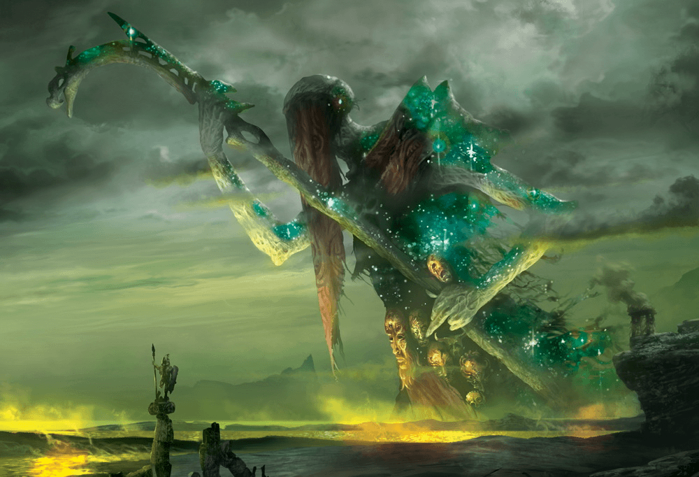
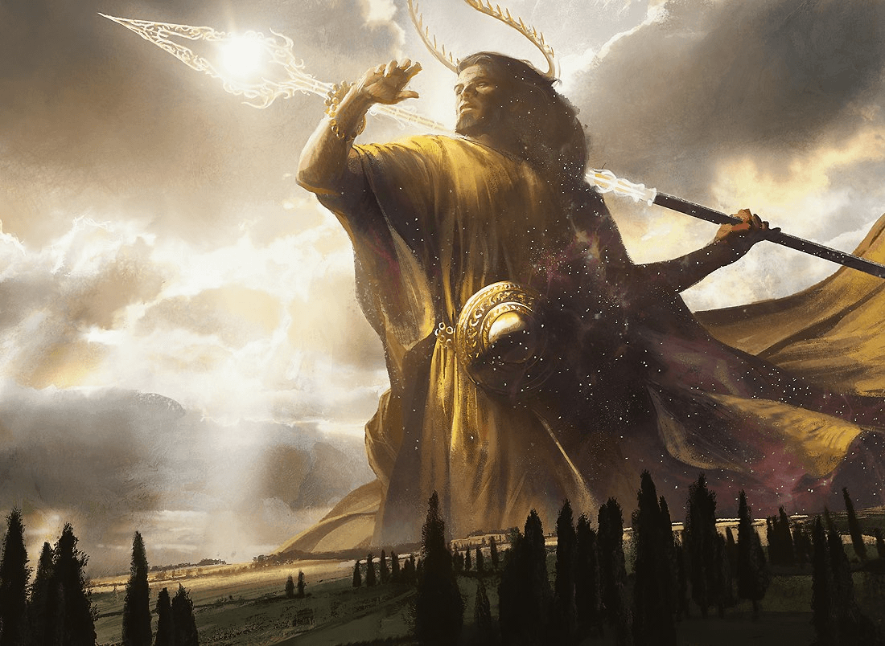
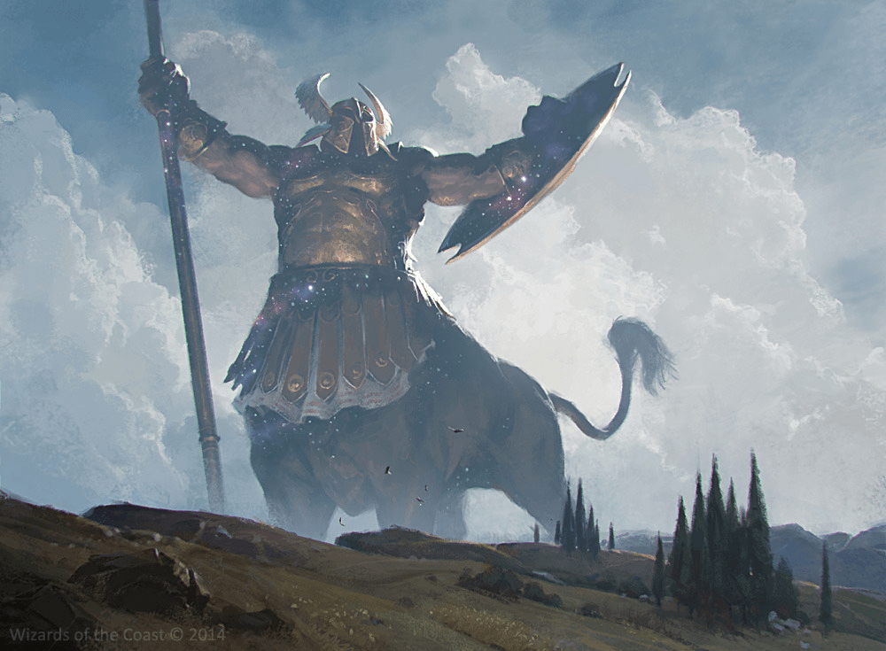
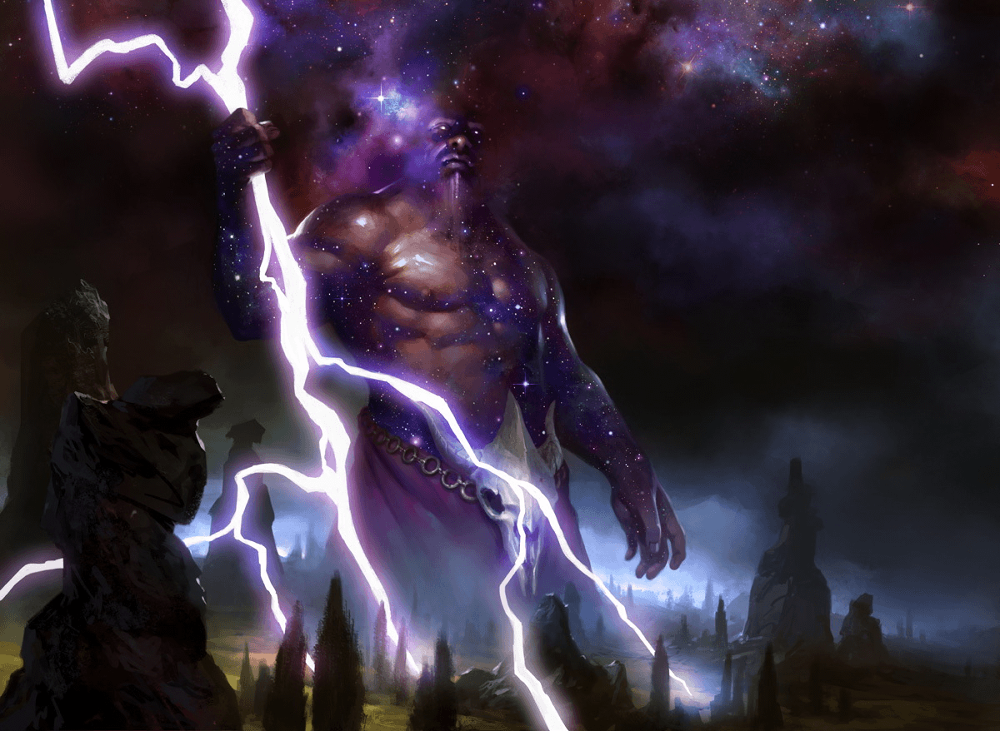
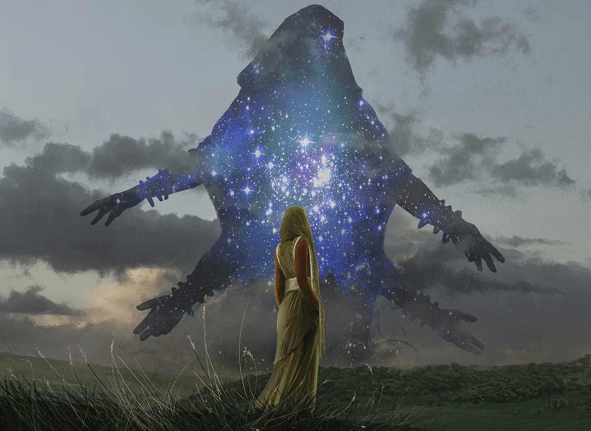
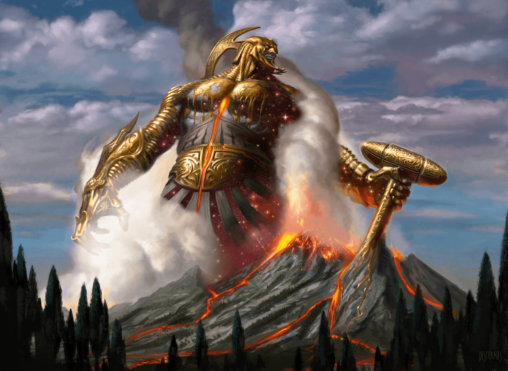
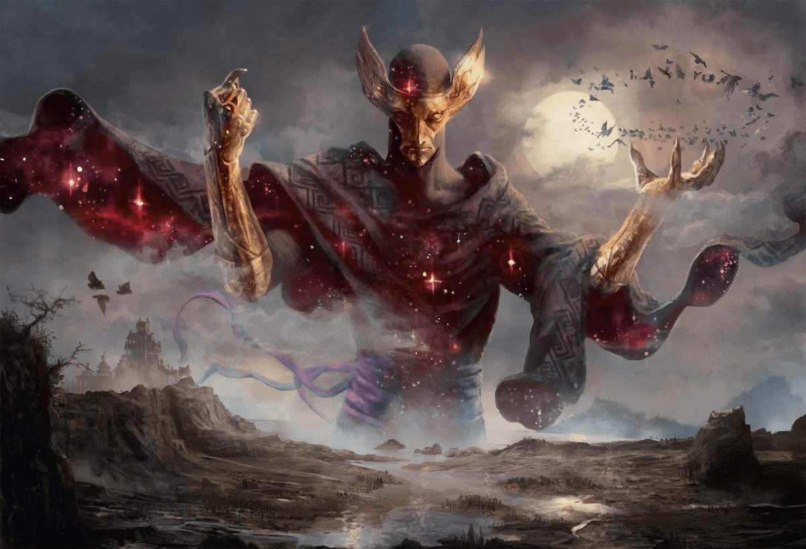
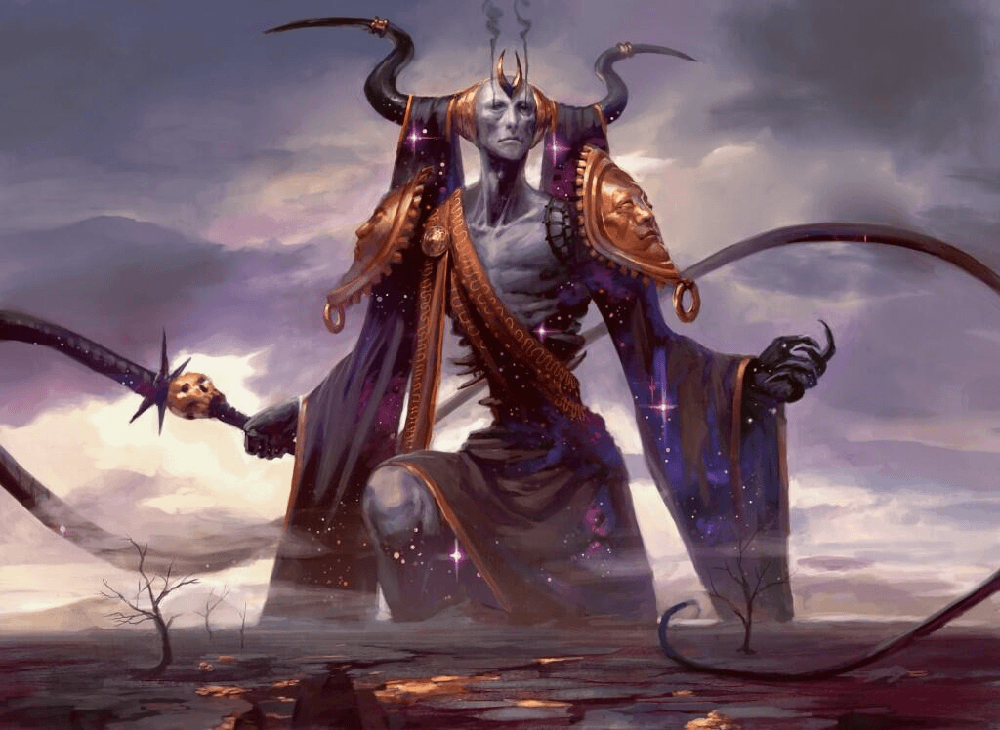
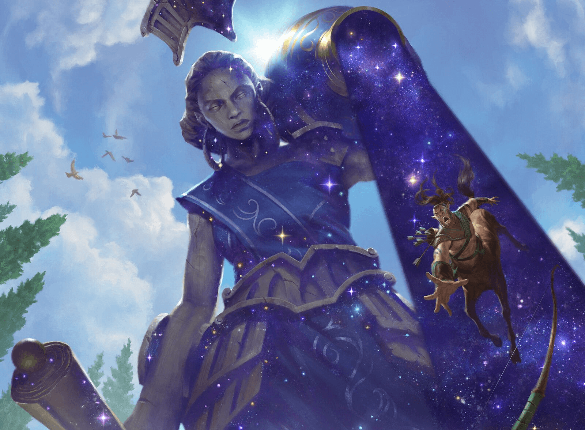

- Источник: «Mythic Odysseys of Theros»
Птица, взлетая над веткой, пронзительно закричала. Сквозь щели в шелестящем пологе она могла видеть, как фигуры богов то появлялись, то исчезали из поля зрения. Ночное небо, Нюкта, царство богов. Каждую ночь небеса демонстрировали мимолётные видения богов и небесных созданий. Некоторые из них задерживались лишь на несколько секунд, но иногда пантеон разыгрывал целые сцены на глазах у смертных. Лидия редко выходила из дома и смотрела на небо, но сейчас ей больше не на что было смотреть. Сегодня фигуры богов были яркими, и её сердце забилось быстрее, когда она увидела, как разворачивается их сражение.
— Дженна Хелланд, «Божий Дар»
- Описание божеств
- Служение
- Жрецы и поборники
- Благоволение (Piety)
- Боги Тероса
- Описание божеств
- Отношения божеств
- Мифические деяния
- Благоволение (Piety)
- Преимущества благоволения
- Благоволение и вдохновение
- Безбожие
- Смена бога
- Боги Тероса
- Атрей, бог перехода
- Гелиод, бог солнца
- Ирой, бог победы
- Караметра, богиня урожая
- Керан, бог шторма
- Клотида, богиня судьбы
- Круфикс, бог горизонтов
- Могий, бог истребления
- Нилея, богиня охоты
- Пирфор, бог кузни
- Тасса, богиня моря
- Фарика, богиня болезни
- Фенакс, бог обмана
- Эреб, бог мёртвых
- Эфара, богиня полиса
Религиозной жизнью Тероса руководит пантеон из 15 богов. От солнца и земледелия до смерти и перехода в Подземное царство — боги следят за силами природы и важнейшими аспектами жизни смертных. Эти боги вполне реальны для людей Тероса, которые видят их движение на ночном небе, а иногда даже встречаются с ними лицом к лицу. Поэтому большинство людей совершают ритуалы и поклоняются самым разным богам, надеясь завоевать их благоволение и предотвратить их гнев. Они рассказывают и пересказывают истории о деяниях богов — даже когда ещё можно продолжать наблюдать, как эти самые истории продолжают разыгрываться на просторах ночного неба.
Однако не каждый смертный служит богам или признаёт их. Некоторые философские школы Мелетиды учат, что боги пантеона подчинены некой высшей силе реальности, возможно, самой Нюкте. Другие же — особенно часто это бывают леонинцы — считают, что боги попросту не заслуживают почтения смертных.
Боги Тероса
| Божество | Мировоз зрение | Рекомендуемые домены для жрецов | Традиционный символ |
| Атрей, бог перехода | ЗЗ | смерти, упокоения | Полумесяц |
| Гелиод, бог солнца | ЗД | света | Лавровый венок |
| Ирой, бог победы | ХД | войны | Четырёхкрылый шлем |
| Караметра, богиня урожая | НД | жизни, природы | Рог изобилия |
| Керан, бог шторма | ХН | бури, знания | Голубой глаз |
| Клотида, богиня судьбы | Н | войны, знания | Веретено с клоком пряжи |
| Круфикс, бог горизонтов | Н | знания, обмана | Восьмиконечная звезда |
| Могий, бог истребления | ХЗ | войны | Голова быка с четырьмя рогами |
| Нилея, богиня охоты | НД | природы | Четыре стрелы |
| Пирфор, бог кузни | ХН | знания, кузни | Двойной гребень |
| Тасса, богиня моря | Н | бури, знания | Волны |
| Фарика, богиня болезни | НЗ | жизни, знания, смерти | Змеи |
| Фенакс, бог обмана | ХН | обмана | Золотая крылатая маска |
| Эреб, бог мёртвых | НЗ | обмана, смерти | Безмятежное лицо |
| Эфара, богиня полиса | ЗН | знания, света | Ваза, из которой льётся вода |
Описание божеств
Боги Тероса гораздо активнее, чем божества в большинстве миров D&D. Но это не значит, что к ним применимы те же критерии, что и к обычным существам — это не простые смертные и не монстры, с которыми можно бороться.
Кроме того, боги Тероса не всесильны. Хоть они и обладают огромной физической и магической мощью, не стареют и почти неразрушимы, их действия связаны волей Клотиды. Они могут запутать нити судьбы до какой-то степени, но не смогут выйти за пределы отведённого им в пантеоне места.
Бог Круфикс властен запереть их в Нюкте, не давая им как-либо взаимодействовать с миром смертных.
Точно так же боги и не всеведущи, хотя они видят и слышат всё, что происходит в их храмах и перед их алтарями. Разумеется, при этом они прекрасно помнят все, что пережили. Определённые пограничные места — устья пещер, береговые линии, перекрёстки, лесные опушки и так далее — тоже позволяют голосам смертных достигать богов, хотя у большинства бессмертных мало причин обращать внимание на то, что им говорят.
Боги могут говорить напрямую со своими оракулами. Они могут появляться в снах смертных или манипулировать природными явлениями для создания знамений. Также они могут создавать нюкторождённых, чтобы те служили посланниками.
Боги даруют своим жрецам возможность накладывать заклинания и могут без каких-либо усилий повторить эффект любого заклинания, которое могут дать (любое заклинание из списка заклинаний жреца, а также любое заклинание домена из своих доменов). Кроме того, они имеют широкое влияние на аспекты мироздания, связанные с их сферами деятельности, и способны на куда большее, чем то, что может быть определено эффектами заклинаний. Например, Пирфор может вызвать извержение вулкана, а Тасса — приливную волну. Боги могут даровать сверхъестественные благословения смертным, а могут наложить ужасные проклятия (например, когда Могий превратил стадо коров в катоблепасов).
Боги могут принимать любую форму, какую захотят. Чаще всего они появляются как гуманоиды — так, как народам Тероса легче всего их себе представить, — но огромных размеров. Часто кажется, что они идут по куполу неба, а их ноги исчезают где-то за горизонтом. Любая часть тела бога, которая не освещена в данный момент, сливается со звёздным небом Нюкты. Также боги часто появляются в виде животных или магических существ и в нематериальных формах, таких как солнечный свет или ветер.
Когда бог физически приходит в мир смертных, он способен на разрушительные физические атаки. Копьё Гелиода, ударившее по полису Олантин, заставило тот навсегда погрузиться в море, а случайный удар молота Пирфора придал форму горам.
Сила богов превосходит силу любого смертного существа. Тем не менее, бог, убивающий другого бога — не говоря уже о смертном, пытающемся совершить это — явление немыслимое. Любое прямое столкновение смертного с богом потребовало бы помощи по крайней мере ещё одного бога, а лучше — нескольких, чтобы у него была хоть какая-то надежда на успех. Группа приключенцев может попытаться убедить группу богов оказать им помощь против другого бога, который стал угрозой для мира смертных, надеясь объединить пантеон, чтобы сдержать или наказать преступника. Круфикс или Клотида могли бы заставить бога принять физический облик, не заполняющий всё небо (возможно, нечто похожее на эмпирея или тараска), что могло бы позволить группе сразиться с богом, особенно если у них есть доступ к божественному оружию, такому как артефакты, подробно описанные в главе 5 книги «Мифические одиссеи Тероса» или по этой ссылке. Но победа над богом в этом облике лишь ослабит его, позволив другим членам пантеона захватить, связать и как-то наказать преступника.
Отношения божеств
Пантеон Тероса — это семья. Большая и часто неблагополучная семья, раздираемая мелочной завистью и соперничеством, но также поддерживаемая искренней привязанностью, взаимным восхищением и сотрудничеством. В конце концов, смертным проще всего представлять богов похожими на самих себя, и потому боги Тероса очень похожи на людей в своих слабостях и свершениях.
Пантеон Тероса расширялся в течение четырёх поколений богов. Некоторые легенды описывают их как настоящие поколения, предполагая, например, что бог шторма Керан — буквально сын Тассы, богини моря, и Пирфора, бога кузни. Другие описывают поколения в метафорических терминах, предполагая, что Керан представляет собой сочетание творческой энергии Пирфора и глубоких познаний Тассы, что порождает его молниеносные вспышки вдохновения (а также ярость настоящей бури). Однако, несмотря на разнообразную форму, мифы в общем и целом сходятся в том, как развивался пантеон.
Первое поколение возникло задолго до появления сущностей, которые можно было бы назвать богами. Прежде чем смертные впервые представили богов, прежде чем они смогли даже вообразить существ столь же величественных, как боги, податливая субстанция ночной Нюкты придала форму их худшим страхам в виде титанов.
Титаны были воплощением абсолютного хаоса, олицетворя всё, что нарушает порядок в мире смертных; им никогда не поклонялись, но иногда пытались умилостивить. Мифы повествуют о том, как боги сражались с титанами и заключили их в темницу под Подземным царством. Ныне титаны почти забыты среди смертных. Скудные упоминания их имён и прозвищ встречаются в древнейших сказаниях, намекая на кошмары, которые их породили. Крокса, Титан Смертного Голода, олицетворял собой страх смерти и её неостановимое желание поглощать все больше существ. Уро, Титан Гнева Природы, мог бы считаться прямым предшественником Керана или Тассы, однако он был воплощением лишь самого стихийного бедствия и не обладал творческой искрой или вдумчивостью этих богов. Флаг, Титан Пылающего Ветра, представлял собой всепоглощающий огненный вихрь, а Скота, Титан Вечной Тьмы, воплощал абсолютную тьму беззвёздной ночи.
Древнейшие из богов, которых часто считают братом и сестрой или некими потомками титанов, — это Круфикс и Клотида. Происхождение этого второго поколения бессмертных загадочно. Возможно, Клотида возникла из чувства неизбежности, из идеи о том, что мир развивается именно так, как должен, и потому действия смертных мало на него влияют. Круфикс, возможно, родился из чувства неизведанного, поддерживая представления о том, что устройство вселенной просто непостижимо для умов смертных. Возможно, Круфикс и Клотида — существа иного рода, чем титаны или другие боги; по крайней мере, Клотида продолжала существовать многие века, хотя была почти забыта среди смертных.
Когда смертные смогли представить себе мир за горизонтом и течения судьбы, пройдя тяжелые испытания, они смогли сформулировать для себя понятия принципов, порядка и естественных законов. Из этих идей родилось третье поколение божеств: Гелиод, увенчанный солнцем, Тасса, обитательница глубин, Эреб жестокосердный, Пирфор бронзокровный и Нилея остроглазая. Эти боги обращаются друг к другу «брат» и «сестра», хотя никогда не упоминают о родителях и почти наверняка не представляют себе Круфикса и Клотиду в этих ролях.
Остальные восемь божеств, четвёртое поколение, воплощают применение абстрактных принципов к реальности жизни смертных. Например, если Гелиод отвечает за универсальные моральные правила, то Эфара является богиней законов, правил и структур, управляющих обществом. Нилея — богиня дикой природы, хищных животных и смены времён года, но Караметра — богиня природы, приспособленной для использования человеком — земледелия и скотоводства — и природным циклом человеческой жизни, особенно деторождения.
Эти боги признают, что предыдущее поколение старше них, но лишь изредка называют родителями. Ирой и Могий повсеместно считаются братьями, но лишь немногие мифы описывают их рождение, да и те вечно противоречат друг другу — в полном соответствии с природой этих вечно враждующих богов.
Мифические деяния
Бесчисленные предания повествуют об истории, деяниях и природе богов. Иногда эти события разыгрываются среди созвездий в ночном небе. Их воспевают в гимнах во время праздников богов, изображают на стенах храмов, рассказывают у костров и очагов и записывают на свитках. Некоторые из них — простые басни, призванные проиллюстрировать одну-единственную грань характера бога или моральную норму поведения. Другие же — монументальные эпосы, и в первую очередь такой является «Космогония», поэма безымянного мудреца из Мелетиды, включающая в себя несколько иногда противоречивых сказаний о сотворении мира и того, что лежит за его пределами.
Обитателей Тероса не смущает противоречие мифов. Является ли Керан буквальным ребенком Тассы и Пирфора? Вырвался ли он внезапно из сердца Тассы, когда её гнев стал слишком велик, чтобы она могла его контролировать? Или же он появился, когда Пирфор пытался украсть секреты Круфикса? Для народа Тероса не важно, совпадают ли эти сказки с историческими фактами, ведь каждая из них по-своему правдива. Каждая легенда о Керане по-своему сообщает о природе этого бога, о вдохновении, бурях и тайнах. Знание каждой версии может привести почитателей Керана к более глубокому пониманию и более тесным отношениям со своим богом.
В различных произведениях, чаще всего объединенных одной центральной темой, собираются мифы о богах. «Происхождение чудовищ» — один из таких сборников, являющийся примечательной попыткой найти связь в ряде различных преданий о происхождении драконов. В ней также рассказывается о том, как Фарика скрыла свои секреты в крови василисков, как духи великих воинов перевоплощались в мантикор и десятки других легенд.
Эпическая поэма «Териада» — другой подобный сборник. В ней описываются подвиги разных поборниц Гелиода, каждую из которых называют просто «Поборница», как если бы все они были одной личностью. Поскольку имена героев не упоминаются, эти легенды больше говорят о характере Гелиода, чем о деяниях любой из этих смертных.
«Каллафея», напротив, повествует о подвигах конкретного смертного героя, Каллафы Мореплавательницы, той, что пробралась на гору Вел и украла слёзы Пирфора, спряталась за спиной Фенакса, записав его секреты, и преследовала Тассу до самого края света, прежде чем отправиться в Нюкту. Легенды такого рода подчёркивают мелочность и тщеславие богов и пропагандируют несколько кощунственное представление о том, что простой смертный способен перехитрить божество. «Каллафея» также служит чем-то вроде путеводителя по Теросу, описывая различные земли и их обитателей, по крайней мере, в том виде, в каком они пребывали несколько столетий назад.
Наконец, деяния богов воспеваются в одах во время их праздников. Естественно, эти гимны выставляют богов в самом благоприятном свете как благожелательных (или хотя бы равнодушных) и всемогущих.
Служение
Идея существования богов, по мере того как она набирала популярность среди смертных Тероса, не заставляла богов существовать сама по себе. Благоговение и поклонение смертных превратили абстрактные идеи в божеств. Лишь когда смертные доверили богам действовать от их имени в ответ на жертвы и молитвы, боги обрели форму из субстанции ночной Нюкты. Поклонение по-прежнему имеет решающее значение для могущества богов, хотя смертные, как правило, не осознают этого влияния. Если бы богу перестали поклоняться, его могущество от этого уменьшилось бы.
Самой распространённой формой оказания почести богу являются возлияния; изливание брызг вина или воды в честь богов. Набожные люди совершают простой обряд молитвы и возлияния каждые утро и вечер у домашнего алтаря или очага, в то время как менее преданные могут просто вылить немного вина, прежде чем выпить остальное.
Главным элементом любого храма Тероса является статуя бога, в которую настоящий бог способен вселиться, оживив её в любой момент. Набожные посетители преклоняют перед ним колени, прикасаются и целуют её, украшают гирляндами и тонкой тканью и оставляют подношения перед ней. Иногда всё это — спонтанные излияния любви или благодарности, а иногда прошения, умоляющие бога вылечить болезнь, послать дождь для урожая, гарантировать безопасное путешествие или оказать любую другую милость, связанную со сферой его влияния.
Большинство людей не посвящают себя одному богу, хотя многие предпочитают одних богов другим. Вполне возможно попросить Фарику избавить любимого человека от болезни, а позже возносить молитвы Караметре о щедром урожае или Тассе о безопасности в морском путешествии.
Жрецы и поборники
Герои гораздо чаще бывают преданны одному конкретному богу, чем обычные смертные. Жрецы почти всегда поклоняются одному богу пантеона и выбирают область, соответствующую этому божеству, в качестве своего умения «Божественный домен».
Чаще всего герои предпочитают посвящать себя определенным богам либо из преданности, либо из корысти. Иногда, однако, боги сами выбирают поборников, которые могут быть не совсем готовы к этому. Гелиод, например, гордится тем, что выбирает в свои поборники только лучших из смертных. Его не волнует, как сами смертные отнесутся к тому, что их выбрали, и он не потерпит отказа.
Предполагается, что большинство героев кампании в Теросе и уж точно все жрецы посвящают себя служению какому-то богу, выступая в качестве его поборников. Все персонажи в партии могут служить одному и тому же богу, но они наверняка будут представлять интересы разных богов, вместе сталкиваясь с опасностями мира.
Благоволение (Piety)
Бытность поборником бога сама по себе не приносит никакой пользы. Каждое описание бога ниже также описывает типичного поборника бога, включая идеи о том, как персонаж игрока может оказаться в этой роли, и перечисляет идеалы, представляющие интересы бога.
Однако боги вознаграждают своих поборников за преданность. Сила вашей преданности своему богу измеряется вашим значением благоволения. Когда вы повышаете это значение, вы получаете благословения от своего бога.
Благоволение не связано с верой или убеждениями, за исключением того, что мысли и идеалы личности побуждают её к действию в служении богу. Ваше значение благоволения отражает действия, которые вы совершили в служении своему божеству и которые оно щедро вознаграждает.
Когда вы выбираете бога для поклонения во время создания персонажа, ваше значение благоволения, связанное с этим богом, равно 1. Ваше значение благоволения увеличивается на 1, когда вы делаете что-то для продвижения интересов бога или ведёте себя в соответствии с его идеалами. Боги ожидают великих деяний от своих поборников, поэтому ваше значение благоволения обычно увеличивается только тогда, когда вы достигаете значительной цели (например, завершения приключения), значительно жертвуете своими интересами или в любом другом случае, когда Мастер сочтёт нужным. Каждое описание бога ниже включает в себя описание его целей и идеалов, которые ваш Мастер использует, чтобы судить, заслуживаете ли вы увеличение своего значения благоволения. Как правило, вы можете ожидать увеличения вашего значения благоволения на 1 во время почти каждой из игровых сессий, если, разумеется, вы следуете догматам своего бога. Мастер волен выбирать любой размер увеличения или уменьшения, но один поступок обычно меняет ваш балл благоволения только на 1 балл в любом направлении, если только ваше действие не является особенно значительным.
Преимущества благоволения
Боги посылают свою милость тем, кто доказывает свою преданность им. Когда ваше значение благоволения достигает определенных значений — 3, 10, 25 и 50 — вы получаете бонус, подробно описанный в разделах о поборниках богов ниже. Если ваше значение благоволения падает ниже одного из этих значений, хотя раньше было выше, вы теряете преимущество, полученное на этом тире.
Если вы выбрали сверхъестественный дар «Оракул», вы получаете иные преимущества за ваше значение благоволения, а не те, что обычно даруются вашим богом. Этот дар и его преимущества описаны в главе 1 книги «Мифические одиссеи Тероса».
Благоволение и вдохновение
В какой-то мере благоволение само по себе является наградой. Поведение в соответствии с повелениями и идеалами вашего бога вдохновляет вас и может помочь вам преуспеть там, где в вы могли бы потерпеть неудачу. По усмотрению вашего Мастера, всякий раз, когда вы увеличиваете своё значение благоволения, вы также можете получить вдохновение, отображающее усиление гармонии между вами и вашим богом.
Безбожие
Не каждый герой выбирает жизнь божественного поборника. Леонинцы, например, известны тем, что вовсе отвергают поклонение богам. Если вы не посвящаете себя богу, у вас нет значения благоволения, а также вы не получаете за него награды, но при этом не страдаете от каких-либо негативных последствий.
Сверхъестественный дар «Иконоборец», описанный в главе 1 книги «Мифические одиссеи Тероса», позволяет персонажу получать преимущества, подобные вознаграждениям за благоволение, не посвящая себя богу.
Смена бога
Если события в жизни вашего приключенца требуют этого, вы можете отказаться от служения одному богу и обратиться к другому. После того, как вы оставляете служение богу, вы редко можете вернуться назад, не совершив особенного акта раскаяния.
Ваш Мастер решает, примет ли какой-то новый бог вас в качестве поборника и что вам, возможно, придется сделать, чтобы доказать свою преданность.
Когда вы меняете бога, вы теряете все преимущества, дарованные старым богом, включая награды за благоволение и любые другие божественные благословения. У вас больше нет значения благоволения для вашего старого бога, а значение благоволения для нового начинается с 1.
Боги Тероса:
Атрей, бог перехода
Каждому смертному суждено встретиться лицом к лицу с Речным Проводником Атреем, когда их жизнь подходит к концу. Бог перехода переправляет мёртвых через реку Тартикс, доставляя каждую смертную душу к её судьбе в Подземном царстве. Для большинства людей Атрей олицетворяет величайшие тайны бытия: ужас и изумление последнего мгновения жизни и откровение о своей конечной судьбе в загробном существовании. Впрочем, Атрей — не судья. Скрытый безмолвный бог не тратит время на размышления и не делает никаких исключений. Речной Проводник видит истину о каждой душе и неизменно отправляет её на законное место в Подземном царстве. На лодке Атрея нет места ни торгу, ни жалости, этот бог уже услышал и отверг все мыслимые мольбы смертных.
Атрей появляется в виде тощей фигуры с коллекцией золотых масок, закутанной в рваные одежды. То немногое, что можно увидеть от его тела, вызывает опасения, что его серая плоть лишь с трудом покрывает его скелет. Речной Проводник никогда не появляется без своего древнего посоха Катабасиды, который он превращает в лодку, на которой плывёт по Рекам, Опоясывающим Мир. Хотя фигура божества не даёт никаких оснований для этого, большинство смертных считают Атрея мужчиной, но Речной Проводник заботится о терминах или ярлыках не больше, чем любая другая сила природы. Атрей способен менять форму, но крайне редко, если вообще когда-либо, принимает какой-то другой образ.
Сфера влияния Атрея
Большинство смертных понимают роль Речного Проводника в их собственном посмертии. Бесчисленные суеверия описывают способы завоевать расположение Атрея, но всё, что тот действительно требует от каждого, кого он перевозит, это оплата: одна монета любой чеканки или ценный предмет. У Речного Проводника широкое понятие о том, что представляет из себя монета, от настоящей чеканной валюты и ювелирных изделий до блестящих бусин или опаловых раковин. В конечном счете, он, похоже, больше всего озабочен тем, подготовился ли смертный к гибели, держит ли плату наготове из уважения и в качестве личного напоминания о неизбежности смерти. Те, чьи тела сожжены, похоронены или иным образом утилизированы вместе с ценностями, намеренно предназначенными для Речного Проводника, обнаруживают, что способны использовать эти предметы при оплате услуг Атрея. Однако духи, которые достигают берегов реки Тартикс неподготовленными, рискуют так и остаться на берегу, поскольку Атрей отказывается перевозить тех, кто не может заплатить.
Атрей также упоминается как бог перехода, а также божество, обладающее властью над границами, рубежами и «ничейными территориями». Те, кто отправляется в путешествие, особенно когда оно опасное, часто бросают монету в фонтан или водоём в качестве символического знака благодарности Речному Проводнику. На мостах и границах также часто вспоминают Атрея, и многие такие места отмечены рисунками рек или духов. Кроме того, явления, находящиеся между двумя состояниями, не поддающиеся простой классификации, часто считаются входящими в сферу влияния Атрея — прежде всего это состояние между жизнью и смертью, но кроме этого в них входит эхо, фантомные ощущения и чувство дежавю.
Цели Атрея
Атрей бесконечно трудится, чтобы поддерживать баланс между Нюктой, Подземным царством и землями живущих. Речной Проводник считает себя слугой мира смертных и ничего не знает о чарах, уважении и секретах, которые смертные часто приписывают ему. Он делает то, что ему необходимо делать, и если где-то баланс вселенной нарушается, Речной Проводник и его слуги работают молчаливо и эффективно, чтобы восстановить равновесие.
Отношения с другими божествами
Атрея мало заботят дела других богов. Пока другие божества не вторгаются на границу между жизнью и смертью, не нарушают установленные для них границы, или не пытаются вернуть мёртвых к жизни, Речной Проводник имеет мало дел с ними. Не раз эта изоляция приводила Атрея к молчаливым конфликтам с Гелиодом и Эребом, каждый из которых недоволен тем, что Атрей ограничивает то, насколько каждый из них может вмешиваться в царство другого. В то же время роль Речного Проводника как посредника между двумя мстительными богами не даёт их обидам вылиться в божью войну.
Тасса испытывает прохладное уважение к Атрею. Ещё задолго до начала ведения истории границы отделяли владычество богини моря от реки Тартикс. Хотя богиня моря тихо возмущается, делясь хоть каплей воды, она считает Речного Проводника тихим неконфликтным нарушителем её стихии и держит дистанцию. Но если бы её уважение пошло на убыль, Тасса охотно стала бы бороться за контроль над Реками, Опоясывающими Мир.
Служение Атрею
Большинство погребальных традиций включают небольшие подношения и слова почтения в адрес Атрея. Чаще всего в эти традиции входит погребение или сожжение умершего с глиняной погребальной маской, чтобы «обрамить» личность умершего для Атрея, и по крайней мере одной монетой, чтобы душа могла заплатить Атрею, чтобы тот переправил её в Подземное царство. Некоторых хоронят вместе с большим количеством вещей. Поминальные практики широко варьируются в зависимости от культуры, от слезливых, мрачных служб до оживленных праздников. Однако эти ритуалы служат скорее важным моментом для живых, чем значимым даром для Атрея. Речной Проводник заботится только о той единственной монете, которую ему должен любой, садящийся в его лодку.
Во время праздника Некрологион, дающего своё название восьмому месяцу в календаре Мелетиды, благочестивые люди проводят день в молчании, читая древние мемуары или сочиняя послания для своих потомков.
Поборники Атрея
Мировоззрение: обычно законное, часто злое
Рекомендуемые классы: волшебник, жрец, монах, плут
Рекомендуемые домены жрецов: смерти, упокоения
Рекомендуемые предыстории: беспризорник, моряк, мудрец, отшельник
Большинство служителей Атрея верят, что смерть — это естественная часть жизни, и нельзя ни спешить навстречу ей, ни убегать от неё. Они стремятся внести свой вклад в ход этого естественного порядка, облегчая переход живых в посмертие. Большинство из них также уважает своих предков и чтят их, сохраняя традиции, ритуалы и память.
Покровительство Атрея
Поскольку каждый смертный однажды предстанет перед ним, Речной Проводник не ищет поклонения. Однако, если служители среди смертных всё же необходимы, Атрей часто ищет потомков тех, кто произвел на него впечатление во время их путешествия в Подземное царство. В таблице «Покровительство Атрея» предложено несколько возможных обстоятельств начала вашей связи с этим богом.
Покровительство Атрея
| к6 | Обстоятельство |
| 1 | Один из членов твоей семьи умер, чтобы ты смог прийти в этот мир. |
| 2 | Вы думаете и чувствуете не так, как другие, и находите эмоции беспорядочными и запутанными. |
| 3 | В порыве нахальства или отчаяния вы призвали смерть забрать вас, и в каком-то смысле она это сделала. |
| 4 | Вы отправили вернувшегося обратно в Подземное царство, поправив уровень баланса во вселенной. |
| 5 | Служение Атрею — семейная традиция, ответственное почётное дело уже бессчетное число поколений. |
| 6 | Вы уже бывали близко к смерти, и в тот момент узрели туманы, обрамляющие Атрейскую лодку. |
Преданность Атрею
Слуги Атрея облегчают переход из жизни в посмертие. Как последователь Атрея, рассмотрите варианты в таблице «Идеалы Атрея» в качестве альтернативы тем, что предлагает для ваша предыстория.
Идеалы Атрея
| к6 | Идеал |
| 1 | Преданность. Преданность моему божеству для меня важнее, чем тому, что оно олицетворяет. (Любой) |
| 2 | Традиции. Почитайте умерших, совершая погребальные ритуалы и помогая им продолжить свой путь. (Законный) |
| 3 | Устрашение. Смертные предпочитают забывать о своих страхах, но со мной они всегда будут помнить о неизбежности смерти. (Злой или нейтральный) |
| 4 | Апатия. Жизнь — лишь репетиция перед смертью, и не стоит слишком привязываться к ней. (Нейтральный) |
| 5 | Помощь. Я облегчаю участь умирающих, к которым в той или иной степени относимся все мы. (Добрый или нейтральный) |
| 6 | Суд. Нарушения естественного порядка между жизнью и смертью должны быть исправлены. (Законный) |
Получение и потеря благоволения
Вы увеличиваете значение благоволения Атрея, когда оказываете почтение ему или циклу жизни и смерти через действия, подобные этим:
- Предоставление монет и руководство погребальными обрядами для тех, кто погиб во время трагедии;
- Обеспечение гарантии того, что дела и знания умершего сохранились;
- Убийство вернувшегося и связанного с ним эйдолона.
Значение благоволения Атрея уменьшается, если вы уменьшаете влияние Речного Проводника в мире, мешая его работе, или неуважительно относитесь к мёртвым посредством подобных действий:
- Отказ умирающему в погребальных ритуалах;
- Снятие ценностей с трупа или осквернение могил;
- Помощь тем, кто пытается сбежать из Подземного царства или уже сделал это.
Послушник Атрея
Благоволение 3+, умение Атрея
Ваша жизнь переплетена с судьбами мёртвых. Вы можете накладывать заклинание нетленные останки [gentle repose], используя это умение, не нуждаясь в материальных компонентах, количество раз, равное вашему модификатору Мудрости (минимум 1 раз). Вы восстанавливаете все потраченные использования, когда заканчиваете продолжительный отдых. Базовой характеристикой для этого заклинания является Мудрость.
Служитель Атрея
Благоволение 10+, умение Атрея
Вы можете накладывать заклинание разговор с мёртвыми [speak with dead], используя это умение, не нуждаясь в материальных компонентах. После этого вы не сможете наложить это заклинание вновь, пока не закончите продолжительный отдых. Базовой характеристикой для этого заклинания является Мудрость.
Последователь Атрея
Благоволение 25+, умение Атрея
Вы можете наложить заклинание псевдожизнь [false life], используя это умение, не нуждаясь в материальных компонентах. Когда вы это делаете, вы получаете дополнительно ещё 25 временных хитов. После этого вы не сможете наложить это заклинание вновь, пока не закончите продолжительный отдых. Базовой характеристикой для этого заклинания является Мудрость.
Поборник перехода
Благоволение 50+, умение Атрея
Вы можете увеличить своё значение Интеллекта или Мудрости на 2, а также увеличить максимум для этого значения на 2.
Мифы об Атрее
Атрей уже бесконечно долго выполняет важнейшую работу, перевозя смертные души в Подземное царство. За долгие годы работы Речной Проводник вдохновил множество легенд.
Оболы Атрея. Некоторые утверждают, что Атрей собирает монеты не из жадности, а потому что ищет пять конкретных сокровищ. Апокрифические писания в Подземной библиотеке Онейракта гласят, что Атрей был первым умершим смертным. Когда он встретился с богами, он принес по одному сокровищу в качестве подношения каждому из пяти самых могущественных божеств Тероса, надеясь получить взамен место среди них.
Боги поняли, что представляет собой дух Атрея: первая среди бесконечного потока смертных душ, которые вскоре начнут присоединяться к Атрею в посмертии. Не желая тратить вечность на сортировку бесконечного потока умирающих смертных, другие боги даровали Атрею место среди них, а также поручили ему его невыполнимую задачу. Кроме того, они дали ему надежду на спасение. Боги бросили подношения Атрея обратно в мир смертных в виде пяти монет. Они обещали Атрею, что, как только он снова соберёт монеты, Речной Проводник будет освобождён от своей службы и будет принят в их ряды. С тех пор Атрей трудился как над перевозкой мёртвых, так и в поисках своих пяти потерянных монет, что стали называть Оболами Атрея. Говорят, что любой, кто принесет Речному Проводнику одну из этих монет, сможет попросить у Атрея что угодно — даже возвращение в мир живых.
Отринувшая смерть. Некоторые легенды рассказывают о древней тени, что задержалась на берегах Тартикса дольше, чем кто-либо ещё — женщина, невероятно древняя, одетая лишь своими распущенными волосами и обвисшей кожей; некоторые проходящие души ошибочно принимают её за Атрея. Эта фигура — Солиссия, некогда бывшая оракулом из Мелетиды. Солиссия отказывается заплатить цену Атрею и не позволяет другим платить за неё. Неисчислимые века она преследовала недавно умерших, вызнавая невероятное количество информации о мире смертных. Единственное, что интересует её не меньше, чем текущее состояние мира, — это Атрей, которого она проклинает, как своего старого заклятого друга, всякий раз, когда Речной Проводник приближается. Если кто-то из смертных и знает Атрея по-настоящему, так это она.
Восемь исключений. Восемь раз за всю историю Атрей намеренно позволял смертным отсрочить свою смерть или временно вернуться из Подземного царства. Эти личности вернулись ради своих целей не в виде вернувшихся, а как живые существа. В качестве свидетельства этих исключений Атрей носит при себе золотые маски каждого из них. Однако, несмотря на прошедшие столетия, никто из тех, для кого Атрей сделал исключение, так и не вернулся. Поэтому Речной Проводник отказывается сделать ещё одно исключение. Его можно было бы убедить поступить иначе, если бы кто-нибудь привёл к нему для наказания одну из восьми потерянных душ. Одни из таких — Биай Пьющий Яд, Дианьян Полусердечный и Сотню Раз Проклятый Тасмудьян.

Гелиод, бог солнца
Гелиод — лучезарный бог солнца. Согласно поверью, именно он служит гарантией того, чтобы солнце всходило каждый день, озаряя мир светом и теплом. Каждый житель Тероса признаёт его доминирующее присутствие, и почти каждый, по крайней мере на словах, выражает ему почтение.
Гордость и самоуверенность струятся от Гелиода как свет — от солнца. Он весел и общителен, наслаждается обществом других и легко создаёт связи. Однако его дружелюбие может так же легко исчезнуть, и он станет из вашего союзника врагом лишь из-за одного неверного шага или возможного предательства.
Гелиод предстаёт перед смертными в самых разных обличьях, но обычно он предпочитает облик загорелого мужчины лет сорока, одетого в струящуюся тунику из золотой ткани. Его профиль благороден, его подчеркивают сильный подбородок и короткая бородка. Он может похвастаться широкой грудью идеально сложенного атлета. Его волосы блестящие и чёрные, а голову венчает золотой венок. Кроме того, он любит появляться в образе сверкающего белого пегаса или сияющего золотого оленя. В любом обличье он выглядит так, будто его освещает солнце, даже когда он путешествует по ночному небу.
Сферы влияния Гелиода
Гелиод олицетворяет дневной свет, а значит, он связан и со многими метафорическими аспектами солнечного круга.
Подобно тому, как солнце неизменно восходит каждое утро, так и Гелиод ценит верность в клятвах и узах. Свидетельские показания в суде и брачные клятвы скрепляются его именем, ибо он не потерпит нарушения торжественного обещания. Он — судья в вопросах нравственности, добродетели и чести.
Ночное погружение солнца во тьму символизирует храбрость и самопожертвование — готовность переносить ужасы тьмы ради других. Те, кто защищает невинных во имя Гелиода, получают его милость.
Как солнечный свет изгоняет тьму, так правосудие Гелиода изгоняет хаос и беззаконие. Он — бог и тех законов, что управляют обществом, и тех, что карают нечестивых. Он заинтересован не только в справедливости путём наказания, но и в установлении справедливых и равноправных отношений между людьми и богами ради стремления к общему благу. Он также проявляет интерес к узам семьи — отношениям, теснее всего связывающих личностей друг с другом.
Цели Гелиода
По мнению Гелиода, он — правитель над всеми богами, и он желает лишь, чтобы его законное право было признано. Он воображает, как перестроит Нюкту под свой личный дворец, где все смогут увидеть его во всей красе. Он считает себя добрым и великодушным правителем — милостивым самодержцем, а не тираном, — и не ждёт раболепия ни от богов, ни от смертных. Он просто хочет, чтобы все подчинялись его воле и выполняли его приказы. Он верит, что его решения всегда справедливы и правильны, и что если бы его законы должным образом соблюдались, то и в Нюкте, и в мире смертных царили бы мир и порядок.
Отношения с другими божествами
Неоднократные попытки Гелиода утвердиться в роли правителя пантеона вызывают гнев Эреба и Пирфора; оба они не уступают ему в высокомерии.
Тассу и Нилею, напротив, не беспокоят его усилия, поскольку они считают себя в безопасности вне его досягаемости. Он может объявить себя правителем пантеона, рассуждают они, но его диктатура не сможет изменить ритмы жизни моря и циклы природы. Тасса и Нилея останутся такими же, какими были всегда, какие бы ссоры ни возникали между их братьями.
Эфара, Караметра и Ирой близки к Гелиоду в мировоззрении и философии. В некотором смысле эти три бога представляют принципы и абстрактную природу Гелиода, ставшую осязаемой и конкретной в жизни смертных. Гелиод представляет собой божественный, естественный, нравственный закон; Эфара даёт этим законам конкретное проявление, организуя смертное общество в полисах. Гелиод управляет яркими лучами солнца, что позволяет природе процветать; Караметра извлекает из этого выгоду для смертных, покровительствуя сельскому хозяйству. И, в то время как Гелиод выступает за справедливость, Ирой фактически борется за неё, поднимая оружие против жестокости и несправедливости в защиту того, что хорошо и правильно.
Гелиод ненавидит и боится Эреба, своего тёмного близнеца, своей тени. Он видит в боге мёртвых жалкого лжеца и труса, что погряз в жалости к себе в своем изгнании.
Гелиода также мучает подозрение, что на деле правителем пантеона всё ещё является таинственный Круфикс, способный запечатать границы между миром смертных и божественным царством Нюкты. Круфикс, пожалуй, единственное существо, способное ограничить действия других богов, так что бог горизонтов вызывает негодование и страх у Гелиода.
Служение Гелиоду
Блеск солнца Гелиода невозможно игнорировать. Таким образом, практически каждый житель Тероса хотя бы неохотно, но демонстрирует своё уважение к богу солнца в формах поклонения от простых жестов до многодневных празднований.
Некоторые семьи, особенно в Мелетиде, соблюдают обычаи кланяться в сторону первых лучей рассвета или подмигивать в знак уважения к светящемуся «глазу» бога солнца. Более преданные почитатели читают короткие литании на рассвете, в полдень и в сумерках, отмечая прохождение солнца по небу.
Поборники Гелиода
Мировоззрение: обычно законопослушное, часто доброе
Рекомендуемые классы: воин, жрец, монах, паладин
Рекомендуемые домены жреца: света
Рекомендуемые предыстории: атлет, благородный, прислужник, солдат
Поборники Гелиода обычно представляют собой либо образец жизни в свете, законе и истине, либо воинствующими героями, которыми движут месть и клятвы. Большинство из них не могут даже представить себя служащими тем, кого они считают младшими богами.
Покровительство Гелиода
Гелиод ищет поборников в мире смертных, поскольку верит, что великий поборник хорошо послужит ему. Правитель богов, каким он себя воображает, должен иметь воинов, представляющих лучших среди смертных.
Тем не менее, причина его первоначального интереса к поборнику не всегда очевидна. Что заставило бога солнца обратить своё внимание именно на вас? Что отличает вас от массы людей, которые приносят ему молитвы и жертвы? С чего он взял, что вы хорошо ему послужите?
В таблице «Покровительство Гелиода» предложено несколько возможных обстоятельств.
Гелиод может быть непостоянным богом, но, раз уж вы посвятили себя ему как его поборник, он не оставит вас, пока вы остаетесь верным ему и ваши действия продолжают хорошо отражаться на нем.
Покровительство Гелиода
| к6 | Обстоятельство |
| 1 | Вы родились в полдень летнего солнцестояния — возможно, даже в самый разгар большого праздника Гелиода. |
| 2 | Один из ваших родителей тоже был поборником Гелиода. |
| 3 | Однажды вы спасли пегаса, попавшего в сеть, продемонстрировав своё мужество и уважение к этому священному существу. |
| 4 | Вы доказали свою храбрость в эффектном состязании силы, харизмы или подобного качества. |
| 5 | Призвав в свидетели Гелиода, вы поклялись положить конец какому-то великому злу. |
| 6 | Вы понятия не имеете, почему Гелиод проявил к вам интерес, и иногда жалеете об этом. |
Преданность Гелиоду
Следовать за Гелиодом — значит посвятить себя делу закона и справедливости. На самом деле защитники Гелиода иногда куда постояннее в своем стремлении к этим идеалам, чем сам бог, который может быть эмоциональным и вспыльчивым. Как последователь Гелиода, рассмотрите варианты в таблице «Идеалы Гелиода» в качестве альтернативы тем, что предлагает для ваша предыстория.
Идеалы Гелиода
| к6 | Идеал |
| 1 | Преданность. Преданность моему божеству для меня важнее, чем тому, что оно олицетворяет. (Любой) |
| 2 | Честь. Я веду себя благородно и всегда держу свои обещания. (Законный) |
| 3 | Защита. Я сталкиваюсь с ужасами тьмы, а значит, с простыми людьми этого не должно происходить. (Добрый) |
| 4 | Принуждение. Те, кто нарушает законы, скрепляющие цивилизацию воедино, должны быть наказаны. (Законный) |
| 5 | Справедливость. Цель закона — установить справедливые и равноправные отношения между людьми и богами. (Законный и Добрый) |
| 6 | Родня. Очень важно сохранять семейные узы — в первую очередь мою собственную семью, а потом и другие. (Законный) |
Получение и потеря благоволения
Вы увеличиваете значение благоволения Гелиода, когда расширяете влияние бога в мире действиями, подобными этим:
- Вы свершили наказание над беглецом от правосудия;
- Вы жаждете мести за значительный ущерб, причиненный вам;
- Вы защитили полис от атаки монстров;
- Вы построили или восстановили храм Гелиода.
Значение благоволения Гелиода уменьшается, если вы уменьшаете его влияние в мире, противоречите его идеалам или заставляете его выглядеть смешным или несостоятельным правителем действиями, подобными этим:
- Вы явно нарушили своё обещание или клятву;
- Вы нарушили любой справедливый закон;
- Вы подвергли других опасности из-за собственной трусости.
Послушник Гелиода
Благоволение 3+, умение Гелиода
Как преданный Гелиоду, вы показали себя достойным поборником бога солнца. Вы можете воззвать к милости Гелиода, чтобы наложить заклинание благословение [bless], используя это умение, не нуждаясь в материальных компонентах. Благословение Гелиода проявляется в виде нимба вокруг благословлённых существ, позволяя им проливать тусклый свет в радиусе 5 футов, пока действие заклинания не окончится. Вы можете накладывать это заклинание таким образом количество раз, равное вашему модификатору Мудрости (минимум один раз). Вы восстанавливаете все потраченные использования, когда заканчиваете продолжительный отдых.
Базовой характеристикой для этого заклинания является Мудрость.
Служитель Гелиода
Благоволение 10+, умение Гелиода
Вы можете накладывать заклинание дневной свет [daylight], используя это умение. После этого вы не сможете наложить это заклинание вновь, пока не закончите продолжительный отдых.Базовой характеристикой для этого заклинания является Мудрость.
Последователь Гелиода
Благоволение 25+, умение Гелиода
Вы привыкли к ослепительному сиянию солнца. Вы совершаете с преимуществом спасброски от ослепления, а также получаете сопротивление урону огнём.
Поборник солнца
Благоволение 50+, умение Гелиода
Вы можете увеличить своё значение Силы или Мудрости на 2, а также увеличить максимум для этого значения на 2.
Мифы о Гелиоде
Многие легенды о Гелиоде подчёркивают его непостоянную природу, пусть даже и прославляя его как бога храбрости и справедливости.
Битва с Пирфором. Желая утвердиться в качестве главы пантеона, Гелиод попытался приказать Пирфору перестроить Нюкту по образу и подобию Гелиода. Разгневанный притязаниями Гелиода на власть, Пирфор выковал меч — Божий Дар, — чтобы сразиться с Гелиодом. Пока бушевал их конфликт, меч Пирфора разорвал ткань Нюкты, открыв проход между царствами богов и смертных. В результате гидра Поликран упал в мир смертных, но Гелиод и Нилея объединили усилия, чтобы связать его в Нессийском лесу. Много лет спустя Поликран освободился от своих оков, и Гелиод выбрал смертную, Элспет Тирель, чтобы та в качестве его поборника убила гидру, и отдал ей для этого копьё под названием Божий Дар, выкованное из того самого меча Пирфора.
Рождение Эреба. Некоторые мифы утверждают, что Гелиод был первым из богов, хотя большинство всё же считают, что это звание принадлежит Круфиксу. Эти мифы также говорят, что, когда свет собственного солнца Гелиода упал на него, Гелиод увидел свою тень и испугался её. Он изгнал тень на землю за Реками, Опоясывающими Мир, и она стала Эребом, богом мёртвых и правителем Подземного царства.
Происхождение катоблепасов. Когда один пастух хвастался, что его скот — лучший во всем Теросе, поскольку был создан самими Гелиодом и Нилеей, боги разгневались на него за эту ложь. Гелиод убедил Могия проклясть скот, превратив его в первых катоблепасов. В результате многие животноводы и по сей день проявляют чрезмерную скромность, а принижение достоинств товара распространено и хорошо понимается как покупателями, так и продавцами. Домашний скот, называемый «таким, каким его задумал Гелиод» или «бесславными животными», может считаться непревзойденным.
Дорога к солнцу. Проведя всю жизнь в служении Гелиоду, старый оракул Солсемон отправился в своё последнее паломничество — навестить само солнце. День за днём он шел на восток, разыскивая земли, откуда оно восходит. Он заходил всё дальше, и над ним смеялись везде, где узнавали о его поисках. Хуже того, зрение его становилось всё слабее, ведь он смотрел на солнце целыми днями. И всё же он продолжал свой путь. Даже когда слепота лишила Солсемона зрения, оракул оставался непреклонен. Наконец, однажды Солсемон пришел в тёплое спокойное место. Там могучий голос, который он слышал во снах, поздравил его с концом путешествия. Воздав хвалу Гелиоду, оракул прилег и после нескольких долгих блаженных часов мирно скончался. С тех пор рассказ о Солсемоне рассказывают как притчу о решимости и как предостережение, что не стоит стремиться к божественному.
Копьё Гелиода. Гелиод владеет копьём Крусор, что может поразить любого и в Теросе, и даже в глубинах Подземного царства. Одна из историй описывает, как разгневанный Гелиод использовал его, чтобы разрушить человеческий полис, народ которого разгневал его своим высокомерием: весь Олантин очутился под водой, когда Гелиод ударил в него своим копьём.

Ирой, бог победы
Ирой — непоколебимый бог чести и военных побед. Когда солдаты идут на битву, его голос — это гром их шагов и грохот ударов копий о щит. Солдаты, наёмники и атлеты — все молятся о благосклонности Ироя ради победы. Простые люди молятся Ирою о мужестве и стойкости во времена борьбы, ибо его битвы проходят благородно и неизменно бывают выиграны.
Смелый и уверенный в себе, с солдатскими манерами поведения, Ирой — вершина воинской гордости и выправки. Он стоик почти настолько, насколько это вообще возможно, но также обладает и ироничным чувством юмора. Те, кто с честью пролили кровь во имя Ироя, могут рассчитывать на его поддержку. Трусы и клятвопреступники достойны лишь презрения, а предатели не заслуживают пощады в бою.
Ирой чаще всего является в облике могучего кентавра с телом быка, а не лошади, одетого в сверкающие доспехи и вооруженного копьём и щитом. Он говорит раскатистым баритоном, излучающим силу, уверенность и мужество. Известно, что он появлялся перед своими последователями в образах могучего солдата и могучего быка. Какую бы форму он ни выбрал, Ирой всегда движется точно и величественно и не потерпит неуважения или чрезмерной неформальности со стороны тех, кто имеет с ним дело.
Сфера влияния Ироя
Ирой олицетворяет славу победы, честный бой и физическое соревнование. Он — немая связь между солдатами накануне битвы, мужество знаменосца, высоко держащего знамя посреди сражения, и ликование, приходящее с трудом завоёванной победой. Ирой подталкивает своих последователей к тому, чтобы преуспеть в избранных ими областях, обычно в войне или легкой атлетике, и заслужить славу и честь благодаря непревзойдённому мастерству, тренировкам и самоотверженности.
Война — это, по сути, ужасное событие, исполненное боли, потерь и страха. К сожалению, по мнению Ироя, война всё же необходима. Он считает, что подготовка к важным битвам и победа в них важнее всего и являются высшим призванием для каждого.
Истинный воин сражается с честью, отвагой и самоотверженностью, и ценит важность обучения, дисциплину, силу и esprit de corps (корпоративный дух — фр.). В глазах Ироя нет ничего ценнее и благороднее, чем отточенный клинок, которым владеет обученный воин, преданный правому делу. Это мнение укоренилось в духе Акроса, полиса, который называет Ироя своим покровителем. Его заповеди и кодексы поведения включены в гражданские и военные законы Акроса.
Кроме того, Ирой ценит силу и решимость в менее смертоносных занятиях. Он считает, что спорт является прекрасным заменителем войны, поскольку в битве превосходство в мастерстве и силе также приводит к победе. А если кого Ирой действительно любит, так это победителей.
Наконец, Ирой призывает своих последователей пресекать действия его брата Могия. Этот призыв неизбежно приводит к сражениям, поскольку Ирой не знает другого способа решения проблем. Дипломатия не является актом трусости сама по себе, но, поскольку это не та деятельность, которой Ирой готов себя посвятить, это и не то, чего он ожидает от своих последователей.
Цели Ироя
Ирой видит жизнь как серию славных сражений, в которых неизменно должны одерживать победу как он, так и его последователи. Война — место для испытаний, откуда выходят только самые храбрые и сильные. В промежутках между битвами приходится совершать подвиги выносливости и физической доблести. Ирой призывает своих последователей оттачивать свои тела и умы так же, как они оттачивают свои клинки. Он уверен, что ослабление бдительности и лень гарантировали бы ему гибель на острие окровавленного топора брата. Ирой подталкивает своих последователей быть готовыми в любое время встретить конфликт лицом к лицу.
Отношения с другими божествами
Ирой считается противоположностью своего брата-близнеца Могия. Хотя оба любят битву, Ирой придерживается благородного и доблестного взгляда на войну, в то время как Могий жаждет резни и бойни. Ирой твердо верит, что смертные всегда будут сражаться, неважно, на войне или в менее важных делах. В его обязанности входит следить за тем, чтобы война велась с соблюдением кодекса чести, и не допускать, чтобы порочность его брата распространилась по всему миру.
Ирой питает неизменное уважение к Пирфору, который вооружает своих воинов произведениями своего искусства. Ирой считает искусно сделанное оружие высшей формой искусства, одновременно возвышенной и смертоносной. Тем не менее, Ирой находит переменчивый характер Пирфора и его приступы страсти неподобающими для обладателя такого таланта к созданию орудий войны.
Ирой отстаивает дело справедливости, а поэтому время от времени ищет совета и руководства от Гелиода. Во время приступов высокомерия и вспыльчивости Гелиода именно Ирой выступает за сдержанность и спокойствие. Чаще всего оба эти божества сходятся во мнениях в вопросах справедливости и чести.
Служение Ирою
Ироя интересуют не красивые слова, а великие дела. Последователи Ироя демонстрируют свою преданность, проявляя себя в состязаниях атлетизма или мастерства. Клятва выиграть битву во имя Ироя и не сделать этого — великий позор для воина, а потому такие обещания никогда не произносятся просто так.
Пятый месяц мелетского календаря — Триамбион, названный так в честь ежегодного празднования мелетского завоевания Натумбрии. Эта победа закрепила контроль Мелетиды над всем полуостровом. Но в Акросе этот месяц называется Ироагонион в честь Иройских игр.
Эти игры — самое грандиозное зрелище в честь Ироя. Даже участвовать в Иройских играх считается почётным делом, так как каждый полис посылает туда своих лучших спортсменов.
Главный приз, помимо церемониального венца, — возможность побывать в гостях у самого Ироя.
Поборники Ироя
Мировоззрение: обычно хаотичное, часто доброе
Рекомендуемые классы: варвар, воин, жрец, паладин, чародей
Рекомендуемые домены жреца: войны
Рекомендуемые предыстории: атлет, народный герой, солдат
Многие поборники Ироя — воины чести и справедливости. Они часто стремятся воплотить образец боевого мужества и руководствуются личным кодексом чести.
Покровительство Ироя
Ирой питает слабость к неудачникам, даже если им не хватает сил, чтобы выиграть бой. Он считает, что из слабака с чистым сердцем легче сделать героя, чем из грубияна сделать защитника справедливости. Кроме того, победа сильных приносит славу им, но победа слабых приносит славу Ирою.
Почему Ирой выбрал вас в качестве своего поборника? Возможно, вы доказали свою храбрость, даже когда победа ускользнула от вас, или продемонстрировали готовность использовать свою силу во благо. Иногда выбор Ироя своего поборника имеет больше отношения к его вражде с Могием, чем к смертному, которого он выбирает; может быть, есть какая-то связь между вами и богом резни? В таблице «Покровительство Ироя» представлено несколько вариантов обстоятельств, при которых вы были избраны им.
Покровительство Ироя
| к6 | Обстоятельство |
| 1 | Вы родились накануне большой битвы. |
| 2 | Ваш брат-близнец — поборник Могия. |
| 3 | Вы проявили великое мужество в проигранной битве. |
| 4 | Вы проявили себя в состязании силы и мастерства на Иройских играх. |
| 5 | Вы воззвали к Ирою засвидетельствовать вашу клятву победить в битве, и он обратил на это внимание. |
| 6 | Несмотря на то, что жизнь неоднократно сбивала вас с ног, вы проявляли твёрдость и решимость во всём, что делали. |
Преданность Ирою
Служение Ирою означает принятие обязательства сражаться ради достижения праведных целей, а не ради принуждения или господства. Это также означает посвятить себя стремлению к совершенству, ибо бог победы ждёт побед от своих поборников. Как последователь Ироя, рассмотрите варианты в таблице «Идеалы Ироя» в качестве альтернативы тем, что предлагает ваша предыстория.
Идеалы Ироя
| к6 | Идеал |
| 1 | Преданность. Преданность моему божеству для меня важнее, чем тому, что оно олицетворяет. (Любой) |
| 2 | Смелость. Ни страх, ни боль не смогут заставить меня отступить. (Любой) |
| 3 | Лояльность. Война формирует узы куда реальнее и прочнее, чем узы любви или семьи. (Любой) |
| 4 | Героизм. Наделённые силой должны защищать слабых. (Добрый) |
| 5 | Свобода. Наделённые силой не должны эксплуатировать слабых. (Хаотичный) |
| 6 | Превосходство. Люди должны видеть во мне пример лучшего среди смертных. (Любой) |
Получение и потеря благоволения
Вы увеличиваете значение благоволения Ироя, когда расширяете влияние бога в мире действиями, подобными этим:
- Вы достигли великой победы;
- Вы с честью приняли неравный вызов;
- Вы одолели искусного противника в поединке;
- Вы совершили великий подвиг благодаря своей силе или искусности.
Значение благоволения Ироя уменьшается, если вы уменьшаете его влияние в мире, противоречите его идеалам или заставляете его выглядеть смешным или несостоятельным действиями, подобными этим:
- Вы проявили трусость в бою;
- Вы обманом одолели честного врага;
- Вы причинили вред невиновному или невооруженному.
Послушник Ироя
Благоволение 3+, умение Ироя
Как преданный Ирою, вы заслужили его благоволение победами, одержанными в его честь. Вы можете накладывать заклинание вызов на дуэль [compelled duel], используя это умение, количество раз, равное вашему модификатору Харизмы (минимум один раз). Вы восстанавливаете все потраченные использования, когда заканчиваете продолжительный отдых.
Базовой характеристикой для этого заклинания является Харизма.
Служитель Ироя
Благоволение 10+, умение Ироя
Вы можете наложить заклинание мантия крестоносца [crusader’s mantle], используя это умение. После этого вы не сможете наложить это заклинание вновь, пока не закончите продолжительный отдых. Базовой характеристикой для этого заклинания является Харизма.
Кроме того, вы совершаете с преимуществом спасброски от испуга.
Последователь Ироя
Благоволение 25+, умение Ироя
Бонусным действием вы можете воззвать к милости Ироя, чтобы получить следующий бонус в течение 1 минуты, либо пока вы не окажетесь недееспособны: существа в пределах 30 футов от вас совершают броски атаки по вам с помехой. После этого вы не сможете использовать это умение вновь, пока не закончите продолжительный отдых.
Поборник победы
Благоволение 50+, умение Ироя
Вы можете увеличить своё значение Силы или Харизмы на 2, а также увеличить максимум для этого значения на 2.
Мифы об Ирое
Легенды, что рассказывают о деяниях Ироя, прославляют как его доблесть и храбрость, так и непреклонность и упрямство. Бесчисленные истории рассказывают о нем или его героях, побеждавших ужасных существ, вражеские армии и другие угрозы миру. Иные же истории выходят за рамки рассказов о его победах.
Оплот Братства. Ирой носит потрёпанный в битвах бронзовый щит, называемый Оплотом Братства. Он символизирует защитную связь, объединяющую всех солдат в бою, и их готовность в случае неожиданного поворота судьбы одолеть даже собственного брата. Ригира Пращница никогда не промахивалась, запуская камни из своей волшебной пращи. И всё же каждый её бросок отскакивал от гигантского минотавра по имени Раксолкс Свирепая Душа. Когда ужасающий минотавр приблизился к ней, Ригира прошептала молитву Ирою и спряталась за свой хлипкий деревянный щит, зная, что тот не сможет защитить её от ударов гиганта. И всё же, когда на неё обрушился удар, щит ответил едва слышным металлическим звоном — словно булавка упала на бронзу. Открыв глаза, Ригира обнаружила, что её щит превратился в сверкающий бастион — собственный щит Ироя. Разъярённый минотавр бил по щиту, не оставляя на нем даже вмятины. Через несколько часов он, тяжело дыша, рухнул, обессиленный. Только тогда Ригира вышла и задушила зверя его собственным языком.
Глоток славы. Последователи Ироя постоянно расширяют свои физические и эмоциональные границы, ставя стремление к победе превыше всего. Но даже когда жрецы Ироя учат своих последователей быть лучшими, самые опытные религиозные лидеры — особенно те, что завершили карьеру в спортивных соревнованиях — предупреждают о растущей зависимости от триумфа. В конечном счёте, учат они, только сам Ирой способен бесконечно пить из реки славы и не страдать от дурных последствий. Смертных же быстро пьянит победа, и они могут легко потерять интерес к недостижимым идеалам чести и вечной славы. Поэтому мудрым соискателям рекомендуют искать только положенный им глоток славы — конечный дар, которым они могли бы насладиться, но который позволит им испытать и жизнь за пределами стремления к величию. Те, кто этого не делает, оказываются на пути к отчаянию, саморазрушению и искушениям Могия.
Калемна, ученица Ироя. Один из величайших воинов Ироя, Калемна — каменный гигант, поклявшаяся служить богу войны. Она была воителем, обладающим огромной силой и тактическим мастерством, принесла боевую дисциплину в самые непокорные войска и привела отряды великанов и минотавров к славным победам. Её преданность Ирою абсолютна, а стремление к победе — непоколебимо. Бесчисленные просители искали Калемну на протяжении многих лет, ища её помощи в исправлении ошибок или предотвращении бедствий. Хоть она и сочувствует всем, кто рассказывает ей свои трагические истории, она поклялась помогать только тем, кто сможет одолеть её в состязании спортивного мастерства или в испытании скорости. Те, кто это сделает, смогут рассчитывать на помощь от неё и, возможно, от её войск. Тем же, кто не сможет, придётся искать другие решения своих проблем.

Караметра, богиня урожая
Караметра известна как безмятежная относящаяся ко всем по-матерински богиня урожая. Её объятия щедро раскрыты для одиноких последователей и зарождающихся общин. Почти в каждом человеческом поселении есть по крайней мере скромное святилище, у которого просят её благосклонности. Также она тесно связана с Сетессой, центром её поклонения.
Мудрая и уравновешенная, Караметра ценит единство, стабильность и равновесие природы. Она — богиня семьи и материнства, покровитель сирот, земледелия и животноводства, защитница дома и земли.
Караметра предстаёт перед смертными в облике фигуры зрелой женщины с волосами из упорядоченных рядов листьев, которые скрывают её глаза. В произведениях искусства она всегда изображается (а также часто предстаёт в ночной Нюкте) сидящей на своем троне из переплетённых виноградных лоз, растущих из окружающей её коллекции кувшинов и амфор. Искусно вырезанный деревянный балдахин простирается над ней, а гигантский соболь — её верный спутник — вьётся вокруг основания трона у её ног. В одной руке она держит косу жнеца.
Сфера влияния Караметры
Караметра представляет в жизни смертных одомашненную природу — щедрую и заботливую кормилицу. Но она также и напоминает смертным, что они являются частью естественного мира; они — животные, которые едят, переваривают, размножаются и спят, и Караметра влияет на всё это.
Смертные ищут её благоволения, ведь плодородие природы необходимо для их существования. Они боятся не её гнева — она не богиня бурь и чумы, — а её исчезновения. Без неё растения, скот, семьи и общины больше не смогут процветать. Её благословение — спасение как против физического голода, так и против голода духовного: отчаяния, одиночества и моральной слабости.
Караметра служит залогом того, что весна всегда придёт снова, деревья всегда будут приносить плоды, а стада всегда будут приносить потомство. Дети всегда будут рождаться, родители всегда будут заботиться о них, а те, в свою очередь, будут возвращать эту заботу. Не каждого в жизни ждёт большая удача или грандиозное приключение, но маленькими радостями жизни — запахом весенних цветов, сладостью спелых фруктов, пылающей красотой осенних листьев, общением с близкими — может насладиться всякий.
Во многих смыслах Караметра представляет сущность отношений богов и смертных: плодородие и защита — основа той помощи, что смертные всегда искали у богов, и Караметра не усложняет удовлетворение этих основных потребностей, основываясь на абстрактных идеалах чести, закона и справедливости. Она — воплощение древнего и первобытного обмена: преданность смертных в обмен на благословение богов.
Цели Караметры
Караметра не занимается закулисным политиканством и мелкими склоками. Она, кажется, стоит выше ссор и бурного соперничества других божеств и при этом столь же отчуждена от интриг смертных. Её основная забота — благополучие смертных. В первую очередь их физическое здоровье, но также и их потребность в безопасности, любви и причастности к чему-то большему.
Отношения с другими божествами
Караметра, возможно, и не хочет властвовать над другими богами, но её позиция отстраненного сострадания даёт ей значительное влияние, которое она использует по своему усмотрению. Другие боги доверяют её беспристрастию в своих спорах и честности в её мотивах, и обращаются к ней за мудростью и иногда даже утешением.
Самые близкие отношения у Караметры с Гелиодом. Он уважает её цивилизованное поведение, а она признаёт насущную роль солнца для существования жизни.
Отношения между Караметрой и Нилеей уважительные, но напряжённые. Нилея разочарована решением Караметры как богини природы подчинить природу потребностям смертных. Караметра же расстроена отказом Нилеи признать смертных — и все их цивилизации — естественной частью природы. Несмотря на это напряжение, обе богини поощряют своих почитателей за подношения в святилищах друг друга.
Боги, вызывающие у Караметры самое острое презрение — это Ирой и Могий, которые, похоже, служат идее не допустить полного расцвета земной жизни. Война, даже подчиненная каким-то благородным понятиям, как это любят делать последователи Ироя, это, по сути, инструмент смерти, приносящий преждевременный и бессмысленный конец жизням смертных. Тем не менее, Караметра признаёт необходимость сражаться, защищая свою жизнь, семью и общину, и потому с Ироем они ещё способны найти некоторую общую почву в этом вопросе, так же как и в их общей ненависти к Могию.
Служение Караметре
Плодородие земли необходимо для продолжения жизни смертных. Те, кто живет в современных полисах, возможно, не так хорошо осведомлены об этом факте, как те, кто выращивает свою пищу сам, но и они заботятся о детях, знакомы с голодом и ощущают смену времён года.
Молитвы Караметре сосредоточены на утверждении её постоянства и щедрости, восхвалении любви и щедрости богини. Последователи Караметры собираются на праздник раз в месяц, вечером полнолуния, отмечая роль богини в пантеоне и в обществе. На таких праздниках новые родители получают подарки и благословения, а молодые пары ускользают в лес в надежде найти там сладкие ягоды и не менее сладкие поцелуи.
Поборники Караметры
Мировоззрение: обычно нейтральное, часто доброе
Рекомендуемые классы: воин, жрец, паладин, следопыт
Рекомендуемые домены жреца: жизни, природы
Рекомендуемые предыстории: беспризорник, гильдейский ремесленник, народный герой, прислужник, солдат
Большинство поборников Караметры — это защитники общества и семьи. Они обычно собираются в сплочённые отряды или создают приёмные семьи и заботятся о своих людях.
Покровительство Караметры
Караметра дарует свою милость воинам, что служат делу цивилизации и общества. Она питает силой и влиянием тех, кто даёт пищу и заботу другим, и с трудом терпит тех, кто проявляет высокомерие и эгоцентризм. Она возвышает тех, кто стремится возвысить других.
Хоть Караметра ведёт себя мягко, её призыв к служению не подлежит обсуждению. Она щедро одаривает богатством и процветанием тех, кто служит ей, но её нельзя игнорировать. Она редко бросает своих чемпионов, но и не позволит им отказываться от службы. В таблице «Покровительство Караметры» предложены варианты обстоятельств, которые могли заставить богиню урожая обратить на вас внимание.
Покровительство Караметры
| к6 | Обстоятельство |
| 1 | Вы были сиротой, который забрёл в один из храмов Караметры в поисках еды и безопасного места для ночлега. |
| 2 | Вы — лидер деревни, считающий заботу о своих соседях своей самой важной работой. |
| 3 | Вы впервые создали какую-то сельскохозяйственную инновацию. |
| 4 | Хоть у вас и нет собственных детей, вы собрали вокруг себя сплоченную приёмную семью. |
| 5 | Вы чуть не истекли кровью насмерть на фермерском поле. |
| 6 | Вы обратились за помощью к Караметре от имени вашей общины во время засухи или стихийного бедствия. |
Преданность Караметре
Следовать идеалам Караметры — значит посвятить себя заботе о других, развитию цивилизации и общества и ставить потребности других выше своих собственных. В конце концов, Караметра ничего не просит для себя. Как последователь Караметры, рассмотрите варианты в таблице «Идеалы Караметры» в качестве альтернативы тем, что предлагает ваша предыстория.
Идеалы Караметры
| к6 | Идеал |
| 1 | Преданность. Преданность моему божеству для меня важнее, чем тому, что оно олицетворяет. (Любой) |
| 2 | Цивилизация. Природа служит своему истинному призванию, лишь когда человеческие сообщества пользуются ею. (Законный) |
| 3 | Смирение. Я ставлю потребности других выше своих собственных и стремлюсь руководить через служение. (Любой) |
| 4 | Защита. Я посвящаю себя тому, чтобы уязвимые и невинные могли жить в безопасности. (Добрый) |
| 5 | Щедрость. Я делюсь всем, что у меня есть, надеясь улучшить благосостояние всех вокруг меня. (Добрый) |
| 6 | Сообщество. Я стремлюсь укреплять узы со своей семьей, товарищами и соседями. (Любой) |
Получение и потеря благоволения
Вы увеличиваете значение благоволения Караметры, когда расширяете влияние богини в мире действиями, подобными этим:
- Вы превратили дикое поле в плодородную пахотную землю;
- Вы накормили голодающего;
- Вы защитили ферму от монстров;
- Вы построили или восстановили храм Караметры.
Значение благоволения Караметры уменьшается, если вы уменьшаете её влияние в мире, противоречите её идеалам или подрываете её значимость в цивилизации действиями, подобными этим:
- Вы уничтожили источник продовольствия для деревни;
- Вы выпустили или распугали домашних животных;
- Вы отвели источник воды, использовавшийся для орошения;
- Вы начали пожар, угрожающий поселению.
Послушник Караметры
Благоволение 3+, умение Караметры
Как преданный Караметре, вы показали себя достойным кандидатом в поборники богини урожая. Бонусным действием вы можете воззвать к её защите; спектральные растения покрывают вас, предоставляя вам бонус +1 к КД в течение 1 минуты. После этого вы не сможете использовать это умение вновь, пока не закончите продолжительный отдых.
Служитель Караметры
Благоволение 10+, умение Караметры
Вы можете накладывать заклинание сотворение пищи и воды [create food and water], используя это умение. После этого вы не сможете наложить это заклинание вновь, пока не закончите продолжительный отдых. Базовой характеристикой для этого заклинания является Мудрость.
Кроме того, вы совершаете с преимуществом спасброски от отравления.
Последователь Караметры
Благоволение 25+, умение Караметры
Совершая часовой ритуал, вы можете создать достаточно винограда, чтобы наполнить три флакона (по 4 унции каждый) вином. Каждый флакон в течение 24 часов считается зельем лечения, после чего теряет это свойство. После этого вы не сможете использовать это умение вновь, пока не закончите продолжительный отдых.
Поборник урожая
Благоволение 50+, умение Караметры
Вы можете увеличить своё значение Телосложения или Мудрости на 2, а также увеличить максимум для этого значения на 2.
Мифы о Караметре
Караметра редко участвует в глобальных событиях, что входят в легенды. Именно нерушимое постоянство делает её столь популярным божеством.
Чудесное поле. Недалеко от Сетессы стоит ферма, где растут невероятные фрукты и зёрна, способные исцелять болезни, увеличивать плодородие и предотвращать голод в течение нескольких дней. Говорят, что это поле — дань Караметры её любимому человеческому жрецу Тамаузу, который умер на том месте. Хотя многие ищут эту ферму, по слухам, виноградник вокруг неё настолько запутан, что немногие способны добраться до его центра.
Старый урожай. В редких отдалённых поселениях вместо обрядов в разгар лета проводятся древние ритуалы, посвящённые менее милосердному воплощению Караметры. Эти общины приносят обильные жертвы богине, но при этом охраняют свои древние ритуалы от посторонних, ведь организованное духовенство Караметры строго пресекает даже обсуждение заброшенных религиозных практик. Однако иногда старинное изображение богини ломается, открывая взору спрятанную за ним древнюю икону — примитивный глиняный идол женщины, несущей сноп зерна в одной руке и череп в другой.
Дружба по возможности. Осенний праздник, известный как Благословение Зверей (названный Мелетиде «Теримакарион»), знаменует дружбу человечества с домашними животными. Лошади и быки, что тянут плуги, кошки, которые охраняют амбары, и петухи, которые будят семьи и призывают их к работе, получают благословения, особые угощения и день отдыха. Говорят, что бродячие животные, найденные в этот день, являются слугами Караметры и предназначены для великих дел. Иные утверждают, что в этот день домашние животные могут говорить — разумеется, если они вообще хотят что-то сказать своим хозяевам.
Стремление к совершенству. Хоть Караметра и восхищается щедростью природы, она всегда стремится шире использовать её потенциал. Её последователи рассказывают легенды о селекционерах и садоводах, которые выращивали замечательные новые виды растений и животных, такие как вечный плод Дакры или легендарные ораньядские куродраконы. Впрочем, хоть сама Караметра и смотрит на такие нововведения с восторгом, некоторые другие боги видят в них богохульство.
Годы ярости. Легенды о Караметре не уточняют, что именно вызвало гнев богини в древние времена, но из записей тех времён известно, что целый год она разрушала собственные храмы и отказывалась позволять расти каким-либо растениям. Смертные по всему миру, которым грозила голодная смерть, умоляли её обуздать свой гнев. Под руководством жрецов Караметры почти всё человечество молилось в течение недели, без пищи и без сна, восхваляя Караметру за её безмятежность и великодушие. По прошествии этого времени она смягчилась и произвела чудесный урожай винограда, который излечивал болезни и насыщал людей. С тех пор её статуи украшают вьющимися виноградными лозами вокруг её левого запястья в память об этом событии.
Керан, бог шторма
Керан — бог бури и мудрости. Безжалостный и нетерпеливый, Керан способен неожиданно поразить смертного как молнией, так и вспышкой вдохновения. Почитать Керана — значит торжествовать силой мудрости, ясности цели и ярости бури. Его почитают мастера, изобретатели и моряки, а также те, кто ищет решения неразрешимых проблем. Он не терпит присутствия (или поклонения) дураков и презирает бесцельных и нерешительных.
Керан редко появляется перед смертными сам, предпочитая общаться через прозрения или грохот молний. Когда же он соизволяет явиться в мир смертных, Керан предпочитает облик крепкого бородатого мужчины в пурпурной набедренной повязке, опоясанной мифриловым цепным поясом с застёжкой в виде драконьего черепа. Он держится прямо и строго, говорит отрывисто и резко. Особенно умные планы и наблюдения вызывают на его лице намёк на улыбку. Также, общаясь со смертными, Керан иногда появляется в обличьи огромной рогатой совы, в глазах которой сверкают молнии.
Сфера влияния Керана
Керан — воплощение мудрости и проницательности, не стеснённых состраданием или терпением. Подобно тому, как буря изливает свою ярость непредсказуемо и внезапно, так и Керан изливает ту мудрость, которой решает поделиться.
Шторм, как бы непредсказуем он ни был, всё ещё могут выдержать те, кто пользуется предвидением и знаниями. Так бывает, когда имеешь дело с Кераном. Он награждает тех, кто действует предусмотрительно и решительно, и наказывает безрассудных за их глупость.
Те, кто стремится разгадывать загадки и создавать чудеса искусства и науки, часто взывают к его имени. Творческий процесс чреват разочарованиями, но его прозрения помогают справиться с такими препятствиями так же легко, как молния рассекает могучий дуб.
Керан дарует вдохновение, не заботясь о нравственности его применения. Он способен вознаградить проницательного полководца, стремящегося захватить полис, так же, как и смиренного целителя, ищущего лекарство от болезни. Его заботят не добро и зло, а активное действие и трепет рождения новых идей в мире. Помощь в деле творения — неважно, идей, оружия, шедевров искусства или магии — вот, что имеет для него наибольшее значение.
Цели Керана
Хорошо это или плохо, но Керан — это разрушительная сила. Он не желает власти над другими богами и, по сути, не особенно наслаждается их обществом. Керан находит удовлетворение в том, что наделяет ярких смертных пророческими видениями, чтобы затем узреть, как они их адаптируют. Те, кто проявляет себя решительно и умно, как, например, пропавшая королева Кимеда из Акроса, заслужили его неохотное уважение и постоянные благословения предвидением. Он находит удовлетворение не только в прозрениях, но и в устрашающей ярости бури. Там, где другие видят в бурях только хаос и разрушение, он видит, как они формируют небосвод, бросая вызов и привлекая к себе смертных. Вспышки его молний поджигают дома и леса, расчищая почву для новой жизни и новых творений. То, что видит он, недоступно более никому. Он довольствуется тем, что наблюдает за своими божественными сородичами, строящими планы и заговоры, в то время как сам остается в стороне, суровый и непостижимый.
Отношения с другими божествами
Керан недружелюбен и не общителен, а потому его отношения с большей частью остального пантеона кратки, формальны и немногословны. Однако же это не означает, что никаких важных взаимодействий между ними не происходит.
Из всех других богов у Тассы с Кераном самые тёплые отношения. Он наслаждается любовью морской богини к древним знаниям, самоанализу и сложным узорам. Иногда они целыми днями беседуют, обсуждая недостатки древних софистических учений и рассуждая над значениями звёзд. Тасса, невозмутимая и постоянная, представляет собой идеальную противоположность мудрому, но темпераментному Керану.
Другая интересная связь объединяет его с Пирфором. Энтузиазм божественного кузнеца пылок, как и его потребность творить. Слияние вдохновения Керана со страстью Пирфора — это потрясающее сочетание. Это сотрудничество вылилось в создание Прозрения, могучего копья Керана.
Служение Керану
Имя Керана часто произносят те, кто ищет спасения в шторме, и те, кто сталкивается с особенно трудной проблемой. Лишь безрассудные взывают к Керану легкомысленно или в шутку, ибо он вполне способен немедленно поразить обидчика молнией с ясного неба.
В Акросе, где царица Кимеда активно насаждала поклонение Керану, сложные церемонии проводятся перед самой первой летней грозой. Замысловатые картины из песка в открытых рамах со сложными геометрическими фигурами создают танцовщицы в струящихся синих шелковых накидках. Затем, когда идут дожди, картины смываются, символизируя непостоянство гения и силу перемен. Акросские оракулы стараются предсказать точное время первого шторма в надежде, что у них будет достаточно времени, чтобы устроить праздник. Подобный праздник в Мелетиде, называемый Фестивалем Молний, даёт своё имя (Астрапион) третьему месяцу года.
В последний день каждого месяца жрецы и поклонники Керана приносят в его храмы подношения из рыбы и дистиллированных спиртных напитков. Рыбу готовят под открытым звёздным небом, а толику спиртного бросают в огонь.
Поборники Керана
Мировоззрение: обычно хаотичное, часто нейтральное
Рекомендуемые классы: бард, варвар, волшебник, друид, жрец, чародей
Рекомендуемые домены жреца: знания, бури
Рекомендуемые предыстории: артист, благородный, гильдейский ремесленник, моряк, отшельник, прислужник.
Большинство поборников Керана стойки под давлением, изобретательны и умны. Они часто стремятся бросить вызов сложившемуся порядку вещей и трепетать от обладания силой бури.
Покровительство Керана
Керан выбирает поборников вдумчивых и мудрых, но способных воззвать к ярости бури, когда это необходимо. Он ожидает, что его поборники будут агрессивными и уверенными в себе, и презирает ленивых и глупых, которые заслуживают любого несчастья, постигшего их.
Бог шторма и в лучшие времена остаётся непостижимым, а потому бывает трудно понять, почему именно вы заслужили его благоволение. Что побудило его подарить вам предвидение важных событий? Как вы продемонстрировали свой потенциал? В таблице «Покровительство Керана» предложено несколько возможных обстоятельств.
Покровительство Керана
| к6 | Обстоятельство |
| 1 | Вы родились в сердце великой бури, которая уничтожила большую часть вашей деревни. |
| 2 | Одного из ваших родителей ударила молния. |
| 3 | В детстве вы были любимчиком оракула великой силы, который разглядел в вас искру Керана. |
| 4 | Вы разгадали загадку, ребус или шифр, который раньше считался неразрешимым. |
| 5 | Вы родились под благоприятными звёздами. |
| 6 | Вы понятия не имеете, почему Керан дарует вам видения, и это бремя тяготит вашу душу. |
Преданность Керану
Служение повелителю штормов так же непредсказуемо и зачастую опасно, как и сама буря.
Последователи Керана вынашивают свои грандиозные замыслы, всегда оглядываясь на темнеющее небо. Как последователь Керана, рассмотрите варианты в таблице «Идеалы Керана» в качестве альтернативы тем, что предлагает ваша предыстория.
Идеалы Керана
| к6 | Идеал |
| 1 | Преданность. Преданность моему божеству для меня важнее, чем тому, что оно олицетворяет. (Любой) |
| 2 | Мудрость. Стремление к знаниям и прозрению — это высшее устремление, которого можно достичь. (Любой) |
| 3 | Дальновидность. Удача улыбается подготовленным, а не наглым. (Нейтральный или законный) |
| 4 | Ярость. Я — сама буря, и я не потерплю отказа. (Хаотичный) |
| 5 | Нетерпение. Что бы ни потребовалось для достижения просветления, я сделаю это. (Хаотичный) |
| 6 | Перемены. В жизни нет постоянных. Если мы не будем внедрять инновации и адаптироваться, мы обречены. (Хаотичный) |
Получение и потеря благоволения
Вы увеличиваете значение благоволения Керана, когда расширяете влияние бога в мире действиями, подобными этим:
- Вы решили сложную загадку или головоломку;
- Вы поразили глупцов именем Керана;
- Вы помогли полису создать серьёзную угрозу или приспособиться к ней;
- Вы построили или восстановили храм Керана.
Значение благоволения Керана уменьшается, если вы уменьшаете его влияние в мире, противоречите его идеалам или заставляете выглядеть глупым и некомпетентным действиями, подобными этим:
- Вы подвергли окружающих опасности своими глупыми и опрометчивыми действиями;
- Вы намеренно препятствовали мудрому руководству или вовсе свергли его;
- Вы не сумели правильно подготовится к вызову;
- Вы поддались беспричинной ярости и разрушениям.
Послушник Керана
Благоволение 3+, умение Керана
Как преданный Керану, вы доказали свою мудрость и преданность повелителю бурь. Один раз на каждом из ваших ходов, когда вы попадаете по существу атакой оружием, вы можете причинить цели дополнительно 1к6 урона электричеством.
Вы можете использовать это умение количество раз, равное вашему модификатору Интеллекта (минимум один раз). Вы восстанавливаете все потраченные использования, когда заканчиваете продолжительный отдых.
Служитель Керана
Благоволение 10+, умение Керана
Когда вы проваливаете спасбросок Мудрости или Интеллекта, вы можете перебросить его. Вы обязаны использовать новое выпавшее значение. После этого вы не сможете использовать это умение вновь, пока не закончите продолжительный отдых.
Последователь Керана
Благоволение 25+, умение Керана
Энергия бури пронизывает ваше естество. Вы совершаете с преимуществом броски на инициативу.
Поборник бури
Благоволение 50+, умение Керана
Вы можете увеличить своё значение Интеллекта или Мудрости на 2, а также увеличить максимум для этого значения на 2.
Мифы о Керане
Мифы и легенды, рассказываемые о деяниях Керана, в равной мере описывают как его мудрость, так и его гнев.
Прозрение. Молния — символ и ярости Керана и его способности вдохновлять. Поразмыслив над этим, он стал умолять Пирфора создать могучее оружие: копьё, что поражает с силой бури. Керан излил свой гнев в яростной буре, которую Пирфор захватил и превратил в сверкающее копьё, гудящее от силы. Когда Керан хочет послать сообщение — либо разрушения, либо просветления — он использует для этого Прозрение.
Купель удачи. В давние века Керан создал бронзовую купель, питаемую чистым горным потоком, который даровал бы великую силу оракула всякому, кто испил из неё. Но, поскольку Керан хотел, чтобы только самые мудрые и умные смертные получали его благоволение, купель защищена множеством жестоких ловушек и сложнейших загадок. Она существует как в Нюктееэ, так и вне её, скрытая ото всех, кроме самых упорных искателей.
Загадка Молнии. Однажды высокомерная оракул похвасталась своей безошибочной проницательностью, что исходила от самого Керана. Ошеломлённый этим повелитель бурь устроил ей встречу с особенно хитрым сфинксом и вмешался в их эпическую битву умов. Цель, поставленная Кераном, состояла в том, чтобы разгадать Загадку Молнии, придуманную им самим. После нескольких дней размышлений оракул пришла к ответу, но её поразил удар молнии с небес. С тех пор среди верующих выражение «Загадка Молнии» означает вопрос, на который лучше не знать ответа.
Тихая буря. Иногда Керан пытается выразить свою волю со всей тонкостью повелителя бурь. Если молния ударяет в одну и ту же точку несколько раз, но никогда не отзывается эхом грома, последователи Керана утверждают, что именно так их бог привлекает внимание к тайнам, которыми он хочет поделиться. В то время как повторные удары молнии обычно причиняют значительный ущерб, удары, которые передают волю бога, часто оставляют ожог в форме символа Керана или вообще не оставляют следов.

Клотида, богиня судьбы
Считается, что Клотида возникла в первые же дни существования Тероса, она — богиня предназначения и наряду с Круфиксом одно из первоначальных божеств этого плана. Она следит за порядком в мироздании, за тем, чтобы все вещи оставались на своих местах; она знает, как легко космическое равновесие может быть нарушено, если она утратит бдительность. После почти катастрофического нарушения миропорядка — восхождения к божественности и последующего свержения сатира Зенага — Клотида впервые на памяти смертных вышла из Подземного царства, чтобы распутать нити предназначения и исправить мир.
Клотида обычно появляется в образе женщины с шестью вьющимися рогами и невероятно длинной гривой светлых волос, которая каскадом ниспадает вокруг её рогов, закрывает глаза и наматывается на её похожее на копьё оружие и различные другие веретена, что она носит.
Под личиной спокойствия Клотида в ярости от того, как и смертные, и боги разорвали и перестроили нити предназначения, чтобы удовлетворить свои мелкие амбиции. Её умиротворённое выражение лица исчезает в присутствии таких злодеев. В пылу ярости её пылающие красным глаза видны сквозь завесу волос, а её горящие пряди волос становятся разрушительным оружием.
Сфера влияния Клотиды
Клотида — воплощение и вершитель предназначения. Почти забытая после череды веков, проведённых в Подземном царстве, Клотида только недавно явилась, полная молчаливого разочарования нынешним состоянием Тероса.
Каждая прядь волос Клотиды — часть ткани предназначения, естественного порядка, лежащего в основе всего сущего. Её последователи утверждают, что видят эти нити, вплетенные во все вещи, что даёт им понимание вселенских истин и того, что должно произойти в будущем.
Клотида удалилась в Подземное царство много веков назад, чтобы следить за заключёнными там титанами и убедиться, что они не смогут вновь сбежать и разрушить установленный ею порядок. Из-за этого она также считается богиней тайн, которые лучше всего хранить в секрете, и сил, которые лучше не трогать.
Цели Клотиды
Когда-то удовлетворявшаяся одним лишь наблюдением за сохранением предназначения из Подземного царства, теперь Клотида пытается исправить ущерб, причинённый мирозданию Гелиодом, Зенагом и амбициозными смертными в последние годы. Способы, которыми они разрушали реальность, чтобы реализовать свои эгоистичные мечты, угрожали Теросу, и только распутав нити Клотида может всё исправить. Однако порядок вещей, который она стремится восстановить, сопряжён с жертвами среди смертных и социальными потрясениями, которые неотвратимо будут его сопровождать. Она намерена низвергнуть те институты, которые потворствовали или совершали эти преступления против Тероса. Когда её усилия положат конец гордым, дерзким и эксплуатирующим, Клотида восстановит естественный порядок и обеспечит существование мира.
Отношения с другими божествами
Клотида презирает большинство богов, считая их причастными к обожествлению Зенага, актам высокомерия Гелиода или и к тому, и к другому. С особым презрением она относится к Гелиоду и его поборникам, наслаждаясь каждой возможностью научить их смирению.
Интересы Клотиды также сталкиваются с интересами иных богов, связанных с порядком и прогрессом. Она видит в их неповиновении естественному порядку опасность и оскорбление.
Ненасытная колонизация Эфары, страсть Ироя к преодолению непреодолимых препятствий и укрощение природы Караметрой — всё это способно вдохновить амбициозных смертных, которые станут жаждать всё большей власти и стремиться вырваться из своего надлежащего места в мироздании.
Клотида уважает богов, чьи действия уравновешивают созидание и разрушение, таких, как Тасса, Пирфор или Нилея, считая, что они лучше приспособлены к потребностям Тероса и мириадам поворотов предназначения. Нилея разделяет восхищение Клотиды природными циклами в мире. Готовность Пирфора как строить, так и разрушать умиротворяет Клотиду, как и тот факт, что он презирает Гелиода не меньше её.
С Эребом и Атреем у Клотиды сложные отношения. Века, проведенные в Подземном царстве рядом с Эребом, показали ей, насколько тот высокомерен и деспотичен, что он готов предаться тем же порокам, что и Гелиод, если ему представится такая возможность. Несмотря на это, Эреб и Клотида поддерживают уровень взаимного уважения. Клотида с Атреем до недавнего времени были хладнокровными союзниками. Но теперь её выход из Подземного царства размыл границы между планами; теперь её присутствие притягивает ужасы в царство смертных, что вызывает гнев Атрея. Конечно, Клотида не доверяет ни одному другому богу так, как Круфиксу, который, как и она, помнит самые первые часы Тероса. Оба они глубоко уважают друг друга.
Служение Клотиде
Клотида не считает, что обязана своим происхождением преданности смертных, ведь она томилась в безвестности почти всю человеческую историю. В отличие от других богов (кроме Круфикса), ей не нужно поклонение, чтобы поддерживать своё существование или наделять её силой, она не ищет почтения и не требует его. По большому счёту, смертные для неё не имеют значения, за исключением тех случаев, когда они сыграли определённую роль в запутывании нитей судьбы, бросив вызов естественному порядку вещей.
Поборники Клотиды
Мировоззрение: обычно нейтральное
Рекомендуемые классы: варвар, жрец, колдун, следопыт
Рекомендуемые домены жреца: войны, знания
Рекомендуемые предыстории: мудрец, народный герой, отшельник, чужеземец
Большинство поборников Клотиды считают, что их предназначение — выполнять определённую роль или искать ответы на знамения, которые они изо всех сил пытаются понять. Они страстно желают наказать тех, кто нарушает мировой порядок.
Покровительство Клотиды
Раньше у Клотиды не было смертных поборников. Выйдя из Подземного царства, она создала множество посланников в виде нюкторождённых, чтобы те помогли ей вернуть Терос на верный путь. Возможно, вы — один из этих Агентов Судьбы (если вы выберете сверхъестественный дар «Нюкторождённый», описанный в главе 1 «Мифических одиссей Тероса»), стремящийся достичь своей цели, ради которой и были созданы. Или же вы можете быть одним из первых в новой группе последователей Клотиды. В таблице «Покровительство Клотиды» предложены некоторые варианты связи между богиней и её смертным последователем.
Покровительство Клотиды
| к6 | Обстоятельство |
| 1 | Ваша семья пострадала во время восстания Зенага, оставив вас в неразрешённой ярости. |
| 2 | Вы дали клятву верности Клотиде, предлагая свою службу в обмен на отсрочку от рутинной судьбы. |
| 3 | Вы родились под дурным предзнаменованием и навлекли на себя осуждение со стороны своих соседей, прежде чем стало понятно, что вам суждено служить Клотиде. |
| 4 | Вы потеряли любимого человека из-за потрясений, последовавших за выходом Клотиды из Подземного царства. Вы планировали отомстить, но при виде её испытали благоговейный трепет и посвятили себя служению ей. |
| 5 | Вы были поборником Гелиода, пока Клотида не показала вам всю опасность его высокомерия. |
| 6 | Вы понятия не имеете, почему Клотида проявила к вам интерес. |
Преданность Клотиде
Следовать за Клотидой — значит принять естественный порядок мироздания и своё место в нём. Это означает принятие своего предназначения, даже если вы боретесь против уз судьбы. Как последователь Клотиды, рассмотрите варианты в таблице «Идеалы Клотиды» в качестве альтернативы тем, что предлагает ваша предыстория.
Идеалы Клотиды
| к6 | Идеал |
| 1 | Преданность. Преданность моему божеству для меня важнее, чем тому, что оно олицетворяет. (Любой) |
| 2 | Контроль. Сохранение естественного порядка вещей важнее потребностей цивилизации. (Нейтральный) |
| 3 | Смирение. Стремиться к более высокому месту в естественном порядке, чем нам дано — это высокомерие. (Законный) |
| 4 | Бдительность. Те, кто бросает вызов судьбе или манипулирует ею, — угроза, что должна быть остановлена. (Нейтральный) |
| 5 | Ярость. Мир должен быть очищен, чтобы освободилось место для нового начала. (Хаотичный) |
| 6 | Защита. Когда боги или смертные сходят с ума от власти, страдают слабые, и я хочу, чтобы они были в безопасности. (Доброе) |
Получение и потеря благоволения
Вы увеличиваете значение благоволения Клотиды, когда расширяете влияние богини в мире действиями, подобными этим:
- Вы одолели существо, которое оставило своё положенное место;
- Вы восстановили значительные повреждения, нанесённые миру амбициями богов;
- Вы даровали людям знания о Клотиде, её природе и её возвращении.
Значение благоволения Клотиды уменьшается, когда вы уменьшаете её влияние в мире, противоречите её идеалам или угрожаете целостности судьбы действиями, подобными этим:
- Вы освободили кого-то от заслуженного наказания или проклятия;
- Вы умышленно уничтожили чудо природы;
- Вы помогли кому-то подорвать естественный порядок или манипулировать его предназначением.
Послушник Клотиды
Благоволение 3+, умение Клотиды
Как преданный Клотиде, вы способны манипулировать узами судьбы, что незримо опутывают каждое живое существо. Вы можете накладывать заклинание приказ [command], используя это умение, количество раз, равное вашему модификатору Мудрости (минимум один раз). Вы восстанавливаете все потраченные использования, когда заканчиваете продолжительный отдых.
Базовой характеристикой для этого заклинания является Мудрость.
Служитель Клотиды
Благоволение 10+, умение Клотиды
Вы можете накладывать заклинание подсматривание [clairvoyance], используя это умение, не нуждаясь в материальных компонентах. Вы не можете воспользоваться этим умением вновь, пока не закончите продолжительный отдых. Базовой характеристикой для этого заклинания является Мудрость.
Кроме того, вы совершаете с преимуществом спасброски против очарования.
Последователь Клотиды
Благоволение 25+, умение Клотиды
У вас развилось второе чувство, позволяющее вам интуитивно ощущать направление и притяжение предназначения. Вы не можете быть захвачены врасплох, пока остаётесь в сознании.
Поборник предназначения
Благоволение 50+, умение Клотиды
Вы можете увеличить своё значение Силы или Мудрости на 2, а также увеличить максимум для этого значения на 2.
Мифы о Клотиде
О Клотиде почти не помнят в мире смертных, она закрылась в Подземном царстве, когда человеческая цивилизация ещё находилась в зачаточном состоянии. Некоторые сохранившиеся мифы говорят о персонифицированной «судьбе» так, будто смутно предполагают возможность реального участия в этом какого-то божества.
Ярость титанов. Самой большой угрозой для молодого Тероса была богоподобная раса титанов, рождённая из того же вихря хаоса, что и сам мир. Прежде чем какой-либо порядок смог бы установиться в мире, титанов нужно было сдержать. Круфикс и Клотида работали вместе, чтобы заточить титанов в самые бездонные глубины Подземного царства. Клотида добровольно согласилась на заточение в Подземном царстве, чтобы держать титанов под контролем. Ведь, в конце концов, такова природа предназначения: когда естественный порядок уже был установлен и сохранён, с её стороны больше не требовалось никаких действий для его поддержания.
Дымящаяся Прядь. Вдали от населённых берегов спрятана прядь волос Клотиды, которую та однажды специально выдернула. Завязанная в узел, эта прядь выглядит как кипящий клубок плотного дыма. Любой, кто прикоснётся к нити, рискует, что та повлияет на него, заразив пагубной судьбой, которую сама Клотида вырвала из естественного порядка. Никто не может сказать, к какой ужасной судьбе ведёт своего владельца Дымящаяся Прядь, но руины, среди которых она лежит, могут дать какой-никакой намёк: пещеры, глубоко зарытые под горой окаменевших тел и искорёженных обсидиановых трупов гуманоидов и животных.
Война близнецов. Первородные боги Круфикс и Клотида появились с противоположных сторон клубящегося клубка возможностей, который в конечном итоге и породил Терос. Сначала эти двое боролись за превосходство, но вскоре поняли, что их конфликт оставляет их молодой мир уязвимым для опасностей как изнутри, так и снаружи. Отложив в сторону своё соперничество, они пришли к согласию, что лучше поделить сферы влияния и каждому иметь хоть что-то, чем позволить их борьбе уничтожить всё существующее.
Горестные бродяги. Говорят, что кошмарные существа, известные как горестные бродяги, порождены карой Клотиды. Эти существа появились в эпохи, когда некоторые смертные научились освобождаться от цепей предназначения. С какой целью — вопрос, затерявшийся в глубине времён, но Клотида быстро положила конец этим богохульникам и уничтожила почти все знания об их методиках. С тех пор тени этих проклятых смертных бродили по Подземному царству в облике горестных бродяг, чудовищ, бесконечно ищущих нити судьбы, которые они могли бы использовать, чтобы заменить свои собственные брошенные жребии.
Круфикс, бог горизонтов
Круфикс — загадочный бог тайн, горизонтов и течения времени. Его последователи утверждают, что он знает не только все, что известно кому-то сейчас, но и все, что когда-либо было известно кому-либо.
Тишина окутывает Круфикса, словно саван. Сторонясь других богов, он редко разговаривает даже со своими любимейшими последователями. Часто, когда он говорит, звучит лишь еле слышный шепот. Однако Круфикс способен гулким голосом вещать прямо в умы всех других богов одновременно, и он делает это, когда что-то угрожает мировому порядку.
Истинная форма Круфикса куда абстрактнее, чем у любого из других богов. Он является исключительно как заполненный звёздами силуэт, обычно в виде четырёхрукой фигуры в одежде с капюшоном, неопределённого вида и пола. Две звезды в его «теле» обычно светят ярче других, напоминая этим глаза. Звёздный силуэт Круфикса иногда принимает форму птицы или кита.
Сфера влияния Круфикса
Круфикс властвует над всем невидимым и неизвестным. Он связан с понятием горизонта — грани неизвестного — и с навигацией. Среди его последователей — ученые, мудрецы и некоторые моряки, склонные к мистике.
Абсолютное знание подобно горизонту: легко двигаться к нему, но невозможно достичь. Круфикс знает всё, что когда-либо было известно кому-либо на Теросе, а потому он и только он решает, какие секреты должны быть раскрыты миру, а какие — забыты навсегда. Он существовал ещё до того, как смертные заселили Терос, и он — один из немногих, кто понимает роль веры смертных в формировании младших богов — а эту концепцию даже большинство богов не понимает до конца.
Круфикс — единственное существо, способное запечатать границы между царством смертных и Нюктой. Он использует эту силу, чтобы защитить мир смертных от безрассудного божественного вмешательства и обеспечить баланс сил между богами и их последователями.
Из-за отсутствия у него последователей многие смертные считают Круфикса второстепенным божеством, даже малоизвестным. Однако для прочих богов он является силой, достойной как уважения, так и опасения.
Цели Круфикса
Более любого другого бога Круфикс просто есть. Он не ищет ничего, кроме созерцания, приобретения знаний, поддержания циклов времени и поддержания божественного порядка. Он считает своих собратьев-богов мелочными и мстительными, и противостоит любому, кто пытается получить власть, которая нарушила бы хрупкое равновесие пантеона.
Круфикс — старший среди богов, и он считает своим долгом обуздывать бесчинства своих младших братьев и сестёр. В отличие от Гелиода, Круфикс знает, что он недостаточно силен, чтобы навязывать свою волю в одностороннем порядке. Вместо этого он играет другими богами, настраивая их друг против друга и служит посредником в их бесконечных спорах. Он заботится о том, чтобы другие боги считали его беспристрастным, что он считает необходимым для поддержания своей власти.
Отношения с другими божествами
Круфикс старается держаться выше споров богов, но, как и у любого другого бога, у него есть как соперники, так и союзники. Главным среди первых является бог солнца Гелиод, в высокомерии которого Круфикс видит опасную угрозу балансу сил среди богов. Он редко действует против Гелиода открыто, предпочитая предупреждать других о попытках бога солнца посягнуть на их власть.
Поскольку каждая смертная душа в конце концов должна уйти за горизонт и умереть, Круфикс уважает как Эреба, так и Атрея. Он видит в Эребе необходимую противоборствующую Гелиоду силу и даже позволял Атрею продолжать свою жизненно важную работу на окраинах мира смертных, когда заточил всех остальных богов в ткани Нюкты. Эреб и Круфикс обвиняют друг друга в недавнем исходе Клотиды из Подземного царства; эту ситуацию, похоже, никто из них не в состоянии контролировать.
Пирфор ненавидит Круфикса за то, что тот наслал на него временное безумие после нападения на Гелиода, но сам Круфикс не держит зла на Пирфора. То наказание слишком сильно нарушило баланс в пользу Гелиода, и Круфикс в будущем скорее встанет на сторону Пирфора.
Среди всех богов лишь Клотида по-настоящему беспокоит Круфикса. Он надеялся, что она останется в тайне и уединении в Подземном царстве, и не знает, что предвещает её появление.
Она — единственный кроме него бог, чьё существование предшествовало верованиям смертных, и хотя он вряд ли вызовет её гнев, манипулируя судьбой, он не знает, как её возвращение повлияет на остальной пантеон.
Служение Круфиксу
Многие молятся Круфиксу, когда хотят найти что-то потерянное, но немногие посвящают себя поклонению ему. Культы, посвящённые Круфиксу, ревностно хранят свои секреты, и посвящённые в них предпочитают не привлекать к себе внимание. Некоторые последователи и поборники Круфикса тайно путешествуют по миру в поисках скрытых истин. Многие используют секретные сигналы, помогающие найти безопасное место для других верующих почти где угодно.
Ритуалы в честь Круфикса обычно проводятся на границах, как временны́х, так и пространственных: береговые линии, берега рек, равноденствия и закаты. Одним из величайших праздников в честь бога горизонтов является Агрипнион («Наблюдение»), знаменующая конец зимы и конец года.
Поборники Круфикса
Мировоззрение: обычно нейтральное
Рекомендуемые классы: бард, волшебник, жрец, друид, монах, следопыт
Рекомендуемые домены жреца: знания, обмана
Рекомендуемые предыстории: моряк, мудрец, отшельник, чужеземец
Большинство поборников Круфикса стремятся познать тайны вселенной и сохранить равновесие в мире. Они, в большинстве своем, считают других богов мелочными и стремятся оградить себя от божественных дрязг.
Покровительство Круфикса
Поборники Круфикса — не столько его посланники, сколько подопечные, и он не хочет их отпускать. Даже те, кто оставляет служение ему, часто невольно помогают его планам на протяжении долгих лет. Как вы изначально привлекли к себе внимание бога? В таблице «Покровительство Круфикса» предложено несколько возможных обстоятельств.
Покровительство Круфикса
| к6 | Обстоятельство |
| 1 | Последователи Круфикса утверждают, что вы родились под диковинным предзнаменованием, но не объясняют, что оно значило. |
| 2 | Вас тайно посвятил в поклонение Круфиксу один из родителей или наставник. |
| 3 | Во время обучения вы раскрыли опасную тайну, и последователи Круфикса разыскали вас и завербовали, чтобы сохранить эти знания лишь в своих рядах. |
| 4 | Вас одолевали странные сны, и вы обратились к оракулу Круфикса. С тех пор те сны стали только страннее. |
| 5 | Вам хотелось узнать правду, которую знает только Круфикс. Теперь же вы задаётесь вопросом, не слишком ли много вы знаете. |
| 6 | Вы понятия не имеете, почему Круфикс проявил к вам интерес, и, возможно, иногда желаете, чтобы этого никогда не случалось. |
Преданность Круфиксу
Круфикс не требует приверженности какой-либо философии, и причины следовать за ним столь же бесчисленны, как звезды. Как последователь Круфикса, рассмотрите варианты в таблице «Идеалы Круфикса» в качестве альтернативы тем, что предлагает ваша предыстория.
Идеалы Круфикса
| к6 | Идеал |
| 1 | Преданность. Преданность моему божеству для меня важнее, чем тому, что оно олицетворяет. (Любой) |
| 2 | Баланс. Слишком много силы, сосредоточенной в одном месте, — это угроза для всех. (Законный) |
| 3 | Бескорыстие. Я принимаю на себя бремя знаний, чтобы другим не пришлось этого делать. (Добрый) |
| 4 | Знания. Я ищу опасные секреты, чтобы познать природу реальности. (Нейтральный) |
| 5 | Сила. Лучшее в знании секрета — это возможность использовать его против всех остальных. (Злой) |
| 6 | Тайна. Вселенная будет прекраснее, если её величайшие истины останутся неизвестными. (Любой) |
Получение и потеря благоволения
Вы увеличиваете значение благоволения Круфикса, когда расширяете влияние бога в мире действиями, подобными этим:
- Вы сохранили опасную тайну, несмотря на ущерб для себя;
- Вы раскрыли ключевую истину в важный момент;
- Вы стали посредником в крупном споре или конфликте;
- Вы помогли слабым или создали препятствие сильному.
Значение благоволения Круфикса уменьшается, когда вы уменьшаете его влияние в мире, нарушаете баланс сил, заставляете его выглядеть предвзятым или мелочным действиями, подобными этим:
- Вы раскрыли тайну, которая должна была оставаться неизвестной;
- Вы отказались делиться информацией из эгоистичных побуждений;
- Вы проявили явный фаворитизм к другому богу или группировке;
- Вы способствовали достижению целей другого бога вопреки воле Круфикса.
Послушник Круфикса
Благоволение 3+, умение Круфикса
Как преданный Круфикса, вы доказали, что являетесь приверженцем тайн и законов реальности. Вы можете накладывать заклинание обнаружение магии [detect magic], используя это умение, количество раз, равное вашему модификатору Интеллекта (минимум один раз). Вы восстанавливаете все потраченные использования, когда заканчиваете продолжительный отдых.
Кроме того, вам известен заговор волшебная рука [mage hand]. Базовой характеристикой для этих заклинаний является Интеллект.
Служитель Круфикса
Благоволение 10+, умение Круфикса
Вы можете накладывать заклинание обнаружение мыслей [detect thoughts], используя это умение, не нуждаясь в материальных компонентах. Вы не можете воспользоваться этим умением вновь, пока не закончите продолжительный отдых. Базовой характеристикой для этого заклинания является Интеллект.
Кроме того, вы совершаете с преимуществом спасброски против очарования.
Последователь Круфикса
Благоволение 25+, умение Круфикса
Как истинный поборник Круфикса, вы можете накладывать заговор волшебная рука [mage hand] для защиты. Пока ваша призрачная рука остаётся в пределах 5 футов от вас, вы получаете дополнительно +2 КД против дальнобойных атак.
Поборник горизонтов
Благоволение 50+, умение Круфикса
Вы можете увеличить своё значение Телосложения или Интеллекта на 2, а также увеличить максимум для этого значения на 2.
Мифы о Круфиксе
Круфикс выступает в историях в вспомогательной роли, чаще всего — беспристрастного судьи, который заканчивает конфликт между богами. Посвященные в мистический культ Круфикса знают другие истории, в которых он играет более активную роль, включая дополненные версии известных легенд, но редко делятся этими историями с другими.
Первый нюкторождённый. Согласно одной из легенд, именно Круфикс, а не Пирфор, был первым, кто создал живых существ из ткани Нюкты. Круфикс создал божественного ремесленника Никта и приказал ему построить алтари богам. История Никта не очень известна среди смертных, но Святилище Нюкты всё ещё называется Никтом в его честь.
Предупреждение Круфикса. Когда Пирфор напал на Гелиода в своей разрушительной ярости, Гелиод потребовал, чтобы Круфикс вмешался. Круфикс ограничил разум и память бога-кузнеца в наказание за его нападение. Он предупредил всех богов, что если они будут угрожать царству смертных своими разрушительными ссорами, то он запрёт их в Нюкте настолько, насколько сочтёт нужным. До сих пор ни один бог не осмелился проверить угрозу Круфикса, но среди них, безусловно, есть те, кто попытается это сделать, если найдет способ сохранить при этом свои собственные силы.
Молчание. Когда склока богов, несмотря на предупреждение Круфикса, снова угрожала миру, он выгравировал все их имена — включая своё собственное — на коре своего великого дерева на краю мира. В тот же миг оракулы богов перестали их слышать, их благословения исчезли, а на ночном небе остались лишь неподвижные звёзды. Во время великого Молчания богов свершились многочисленные истории о героизме и самопожертвовании. Многие из ныне живущих были свидетелями того, как небо потемнело, а в храмах воцарилась тишина. Большинство считают Молчание ужасной ошибкой, которая привела к возвышению бога-узурпатора Зенага, но последователи Круфикса знают, что оно было вызвано жестокой необходимостью предотвратить куда больший катаклизм.
Теофилийские тайны. Некоторые последователи Круфикса отождествляют себя не со своим непостижимым божеством, а с Теофилией, легендарной наядой, что вошла в Нюкту и чью трансцендентную встречу с Круфиксом каждый посвящённый стремится повторить. Путешествие наяды упоминается в приглушенных песнопениях, когда новопосвящённого с завязанными глазами ведут через границу, часто давая перейти через реку или переступить через низкую каменную стену, что символизирует пересечение горизонта. Затем повязки с глаз снимаются, и верующие нараспев произносят оды Круфиксу. Есть надежда, что Круфикс решит проявить себя в кульминационный момент ритуала, даруя какое-то предзнаменование или личное прозрение. Однако такое откровение не всегда полезно, поскольку Круфикс часто даёт представление о космических истинах, о которых смертные не могут даже представить никакого возможного контекста.

Могий, бог истребления
Могий — бог истребления, насилия и войны. Он — воплощение безудержной ненависти, отвергнутого сочувствия и забытой милости, существо, само присутствие которого побуждает смертных к насилию. Солдаты боятся поддаться его жажде крови, чтобы не опозорить себя, но мстящие и брошенные взывают к нему ради его дара ярости. Он брат Ироя, бога победы, и его прямая противоположность в вопросах войны.
Гнев и злоба, исходящие от Могия, почти осязаемы. Он не контролирует ни свой характер, ни свои порывы и набрасывается на последователей по малейшему поводу. Акросских солдат предупреждают, что поддаться его соблазнительной боевой ярости — значит рискнуть стать андрофагом — кровожадным убийцей, полностью поглощенным яростью Могия.
Могий словно прорубает в ночном небе ужасающую фигуру, являясь в виде четырёхрогого минотавра невероятных размеров, одетого в шипастые бронзовые доспехи и владеющего массивной чёрной секирой. Он не унижает себя, появляясь перед смертными в других обличьях, ведь видеть его — значит видеть олицетворенную жестокость войны. Он бесконечно жаждет одолеть своего брата Ироя в бою и стать единственным воплощением войны для всех смертных.
Сфера влияния Могия
Могий, как и его брат, покровительствует военному искусству. Но, в то время как Ирой наслаждается славой почётных побед, Могий упивается садизмом, разрушением и унижением побеждённых. Он толкает воинов на акты жестокости и злобы в их стремлении к победе. Только те, кто пережил ужас и насилие войны, по-настоящему понимают соблазнительную природу власти Могия. Чувствовать ярость, быть орудием гнева — эти эмоции сильнее, чем страх битвы. Ненависть — это сила, и Могий упивается этим фактом. Но смертные должны остерегаться его, ибо цена, которую он взимает в обмен на эту силу, это потерянные порядочность, честь и сострадание.
Цели Могия
Для Могия мир — это холст, на котором он рисует кровью. Его цели легко понять, а потому его последователи легко выполняют их. Могий хочет разрушить мир с помощью дикости. Пусть все полисы падут, а дела рук смертных сгорят. Всё придёт в упадок со временем, и Могий считает, что это время должно наступить сейчас. Только самые жестокие и дикие из смертных должны пережить встречу с его избранниками. Когда мир будет лежать в руинах, а его брат истечёт кровью у его ног, цели Могия будут достигнуты.
Отношения с другими божествами
Само существование Могия определяется его вечной борьбой против своего брата-близнеца Ироя (лишь несколько противоречивых мифов касаются темы происхождения этих богов, но везде они описываются как близнецы). Любые действия и усилия Могия способствуют подрыву авторитета и в конечном счёте уничтожению Ироя. Любые божественные отношения, в которые Могий вступает, создаются для удобства и как средство достижения этой цели. Могий не способен на верность, и разумно ожидать, что он нарушит любой пакт или соглашение, как только оно перестанет приносить для него пользу.
Эреб ценит стремление Могия уничтожать, потому что это — одно из средств, приносящих всё больше душ в его царство. Кроме того, Эреб иногда направляет буйства Могия в направлении, причиняющем неудобства Гелиоду. Такие нарушения неизбежно приводят к тому, что Гелиод призывает Ироя сразиться со своим братом, поддерживая бесконечный цикл конфликта между близнецами.
Из всех своих собратьев-богов Могий более всего уважает Фенакса. Могий не может не улыбаться, глядя на тот хаос, который способен вызвать Фенакс, и ту резню, которую в мире сеют вернувшиеся. Фенакс обладает талантом к разжиганию конфликтов, что позволяет Могию упиваться возникающей в результате бойней.
Могий презирает и даже ненавидит Эфару и Караметру. Аккуратные, упорядоченные города Эфары приятно разрушать, особенно учитывая её суетливое и точное соблюдение правил. Точно так же близкие отношения Эфары с Ироем и Гелиодом вызывают отвращение Могия. Могий презирает Караметру, потому что она помогает смертным и оказывает помощь слабым. Это глупые поступки, потому что слабые не заслуживают помощи — они являются пищей для сильных. Поджигание плодородных полей и наблюдение за вызванным этим голодом — источник удовольствия для Могия, хотя его не раз удивляла жестокость ответных репрессий Караметры.
Служение Могию
Могий призывает своих последователей направлять свою ненависть и ярость на всё большие акты жестокости и насилия. Он требует действий, а не слов, делая своих последователей активными и опасными. От отвергнутого любовника, жаждущего мести, до окровавленного воина на поле боя — все, кто в гневе проливает кровь, взывают при этом к Могию.
Минотавры — самые ярые поклонники Могия, они регулярно проводят кровавые обряды в его честь. Певцы войны, минотаврическое духовенство Могия, доводят своих мародёров до почти безумного исступления перед битвой; последующая за этим резня восславляет имя Могия.
Появление кровавой луны — самое священное событие для последователей Могия, поскольку луна представляет его ненавидящий красный глаз. В такие моменты его последователи организовывают пиршество из мяса, сырого или едва приготовленного, вместе с обильным количеством опьяняющих веществ, за которым следует ритуальное членовредительство — нанесение себе шрамов, чтобы продемонстрировать этим преданность Могию.
Поборники Могия
Мировоззрение: обычно хаотичное, часто злое
Рекомендуемые классы: варвар, воин, друид, жрец, колдун
Рекомендуемые домены жреца: войны
Рекомендуемые предыстории: атлет, преступник, солдат, чужеземец
Большинство поборников Могия — это антигерои, движимые яростью и жаждой войны. Многие из них — измученные души, жаждущие мести.
Покровительство Могия
Благоволение Могия нетрудно заслужить тем, у кого нет морального компаса. Могий требует, чтобы его служители проливали кровь, лучше всего — кровь последователей Ироя. Однако потенциальные поборники должны понимать, что бог резни вкладывается в своих последователей, надеясь получить от них ещё большую отдачу. Тот, кто его разочарует, окажется неспособным на достаточную жестокость или кровопролитие, рискует оказаться не на том конце его клинка.
Для Могия идеальным последователем является тот, кто отбрасывает все угрызения совести, принося страдания в мир. Кроме того, он взращивает обиду и горечь в тех, кто обычно не склонен к актам бессмысленного насилия. Наученный опытом многих эпох, он обнаружил, что преданные, испытывающие отвращение и обездоленные легко посвящают свою жизнь убийственному служению, и их так же легко отбросить, если они не удовлетворят его. В таблице «Покровительство Могия» предложено несколько возможных обстоятельств, как смертный может привлечь его внимание — и наоборот.
Покровительство Могия
| к6 | Обстоятельство |
| 1 | Вы родились под кровавой луной, символом красного глаза Могия. |
| 2 | Ваш брат-близнец — чемпион Ироя. |
| 3 | Вы совершили жестокую вендетту против конкурирующей семьи. |
| 4 | Вы успешно (и, возможно, жестоко) показали себя достойным в соревновании силы, подвиге выносливости или подобном деянии. |
| 5 | Вы воззвали к силе Могия, чтобы свести старые счёты, став орудием его гнева. |
| 6 | Вы понятия не имеете, почему Могий выбрал именно вас, но, тем не менее, его ненависть проникает в вас день за днем. |
Преданность Могию
Следовать Могию — значит окончательно отказаться от этических кодексов и принять ярость и жажду крови. Как последователь Могия, рассмотрите варианты в таблице «Идеалы Могия» в качестве альтернативы тем, что предлагает ваша предыстория.
Идеалы Могия
| к6 | Идеал |
| 1 | Преданность. Преданность моему божеству для меня важнее, чем тому, что оно олицетворяет. (Любой) |
| 2 | Дикость. В бою я выражаю свою ярость. (Хаотичный) |
| 3 | Ненависть. Ненависть к моим врагам согревает моё сердце и даёт мне силу. (Любой) |
| 4 | Ярость. Для меня единственный способ освободиться от бесконечной рутины жизни — это сдаться перед своим внутренним зверем. (Злой) |
| 5 | Беспощадность. Цели оправдывают средства, и побед нужно достигать любой ценой. (Злой) |
| 6 | Гордость. Никто не сможет одолеть меня в моем деле, и горе тем, кто попытается. (Любой) |
Получение и потеря благоволения
Вы увеличиваете значение благоволения Могия, когда расширяете влияние бога в мире действиями, подобными этим:
- Вы одолели чемпиона Ироя;
- Вы отомстили могущественному врагу;
- Вы сожгли дотла полис или поселение;
- Вы осквернили храм Ироя в качестве подношения Могию.
Значение благоволения Могия уменьшается, когда вы уменьшаете его влияние в мире, противоречите его идеалам или заставляете его выглядеть слабым и неэффективным действиями, подобным этим:
- Вы оказались неспособны осуществить кровавую месть;
- Вы публично проявили слабость или сострадание;
- Вы побоялись принять вызов или дуэль.
Послушник Могии
Благоволение 3+, умение Могия
Как преданный Могию, вы показали себя жестоким бойцом. Вы можете воззвать к милости Могия, чтобы наложить заклинание гневная кара [wrathful smite], используя это умение. Благословение Могия проявляется в виде кроваво-красного свечения вокруг вашего оружия, излучающего тусклый свет в радиусе 5 футов, пока действие заклинания не окончится.
Вы можете накладывать это заклинание количество раз, равное вашему модификатору Телосложения (минимум один раз). Вы восстанавливаете все потраченные использования, когда заканчиваете продолжительный отдых. Базовой характеристикой для этого заклинания является Телосложение.
Служитель Могия
Благоволение 10+, умение Могия
Вы можете накладывать заклинание ослепляющая кара [blinding smite], используя это умение, не нуждаясь в материальных компонентах. Вы не можете воспользоваться этим умением вновь, пока не закончите продолжительный отдых. Базовой характеристикой для этого заклинания является Телосложение.
Последователь Могия
Благоволение 25+, умение Могия
Вас ведут бесчисленные битвы и порочные видения. Вы совершаете с преимуществом спасброски против очарования и испуга.
Поборник резни
Благоволение 50+, умение Могия
Вы можете увеличить своё значение Силы или Телосложения на 2, а также увеличить максимум для этого значения на 2.
Мифы о Могие
Рассказы о деяниях Могия иллюстрируют его стремление уничтожать, жестокость и желание сокрушить своего ненавистного брата.
Бесконечная вражда. Одна из легенд гласит, что Могий и Ирой когда-то были единым существом, олицетворявшим саму войну. Но внутреннее напряжение между честью и жестокостью в бою привело к дихотомии целей, слишком большой, чтобы один бог мог вместить её. Разорвав себя на части, он раскололся надвое, и так родились Могий и Ирой, воплощения двух аспектов войны, вечно находящиеся в конфликте. Хоть ни в рассказах о Могие, ни в сказаниях об Ирое об этом не упоминается, среди слуг других богов ходят слухи, что, возможно, есть способ собрать расколотого бога воедино. Однако для этого потребовался бы невероятный подвиг, вероятно, связанный с сотрудничеством Могия и Ироя.
Боевой пёс Могия. Могий обычно сражается один, потому что в пылу битвы он часто теряет контроль и наносит удары как по союзникам, так и по врагам. Тем не менее, он искал существо, которое пойдёт перед ним, вселяя страх в его врагов, прежде чем его могучий топор обрушится на них. Могий выбрал свирепого цербера и наделил его огнём своей вечной ярости. Это новое ужасающее создание стало его личным предвестником и боевым товарищем. Бог резни не назвал своего питомца, отказавшись делать это до тех пор, пока зверь не унесет сто тысяч жизней и не докажет, что действительно достоин его уважения.
Происхождение минотавров. В былые века на поле боя являлся воин огромной силы. В бою один на один он был непобедим, но терпел поражение, когда против него поднимались сразу группы противников. После одного из таких поражений этот воин был так полон гнева, что убил всю свою деревню во имя Могия. Бог, восхищенный этим зрелищем, одарил воина своей свирепостью, переделав его в отражение гнева Могия и машину разрушения. Этот воин стал первым минотавром, и многие минотавры до сих пор поклоняются Могию, так как он создал их по своему образу и подобию.
Наслаждение разрушением. Летний фестиваль Мегасфагион — это более цивилизованный вариант типичных обрядов в честь Могия. Он включает в себя принесение в жертву большого количества скота, чтобы отвратить его гнев. Затем мясо готовят и распределяют между всеми, кто посетил фестиваль. Последующее грандиозное пиршество часто перерастает в пьяное веселье. В некоторых историях отдельные люди или целые сообщества, питаемые давними обидами, приходят в ярость во время фестиваля, что заставляет их искать цели для того, чтобы выплеснуть своё соперничество в насилие.
Несущий Гнев. Вскоре после своего рождения Могий решил изобрести оружие, которым смог бы убить своего брата. Могий собрал своих поборников и отправил их на поля сражений, где они собрали эссенции ярости, ненависти и жажды крови. Под кроваво-красной луной Могий использовал эти ингредиенты, чтобы выковать огромный чёрный топор из чистого насилия, названный Несущим Гнев.
Нилея, богиня охоты
Нилея — дикая беззаботная богиня охоты. Она претендует на господство над всем миром природы, особенно над понятиями голода и хищничества, временами года, метаморфозами и перерождениями, а также над лесами.
Нилея — одна из самых общительных богинь, и её часто можно увидеть весело резвящейся с Хальмой, своей нюкторождённой рысью, или любимой нимфой Теофилией. Но она также наслаждается одиночеством и на охоте смертельно, почти по-звериному, серьёзна. Она почти так же быстро впадает в гнев, как и её брат Пирфор, и быстро мстит тем, кто причиняет вред природному царству.
Нилея обычно предстаёт в обличьи зеленокожей дриады с древесными конечностями. Её волосы сплетены из виноградных лоз и листьев, меняющихся в зависимости от времени года. Она также может явиться в величественном облике любого животного, чаще всего рыси или волка. Когда она ищет скрытности или одиночества, она может принять форму дерева, обычно дуба или оливы.
Сфера влияния Нилеи
Охотники поклоняются Нилее, однако её заботы выходят далеко за пределы способности человечества существовать за счет щедрости природного мира. Она управляет сменой времён года. Обычно она позволяет каждому из них наступать по расписанию, но, разозлившись, она может задержать следующий сезон или даже вызвать один из них в неподходящее время. Смертные молятся ей, чтобы она защитила их от погоды не по сезону, наступающей как по естественным, так и по сверхъестественным причинам.
Нилея — величайшая лучница в мире, и соревнования по стрельбе из лука часто проводятся в её честь. Те, кто охотится за своей пищей, молятся ей об успехе, и Нилея благословляет их естественное хищничество. Однако браконьеры и те, кто убивает ради развлечения, знают, что она ненавидит такие деяния, и стараются любой ценой оставаться скрытыми от её глаз. Нилея лично убила многих из тех, кто бессмысленно убивал в её священном Нессийском лесу.
Связь Нилеи с метаморфозами делает её объектом молитв тех, кто стремится кардинально изменить свою собственную природу или личность. Ей поклоняются те, кто хочет реформировать или преобразовать общество менее жестокими способами, чем те, которым благоволят боги вроде Пирфора и Могия. Её также почитают те, кто ценит уединение и безмятежность леса.
Процесс рождения также попадает под влияние Нилеи, и её жрецы часто выполняют роль акушерок в своих общинах, благословляя младенцев, когда те появляются на свет.
Цели Нилеи
В сравнении с другими богами цели Нилеи скромны. Она хочет, чтобы мир природы оставался свободным и здоровым, и желает следить за циклом времён года и наслаждаться красотой земли. Но в мрачные моменты она понимает, что само существование цивилизации на Теросе представляет собой растущую угрозу природе — возможно, даже попытку остальной части пантеона уничтожить её. Если бы это ей было подвластно, она вполне могла бы стереть с лица земли все полисы и более крупные общины, оставив только разрозненные племена смертных, чтобы те жили в вынужденном равновесии с природой. Она не стремится уничтожать разумных существ, обвиняя в распространении цивилизации своих собратьев-богов, а не самих смертных.
Отношения с другими божествами
Нилея редко вступает в открытый конфликт с другими богами, и сама она считает, что все её столкновения с ними являются результатом их вторжения на её территорию. Чаще всего её раздражают боги, поощряющие распространение цивилизации. Гелиод и Эфара принесли смертным закон и честолюбие, убедив их собираться в городах с каменными стенами и считать себя отделёнными от её царства.
Пирфор стоит за некоторыми естественными процессами земли и огня, помогающими царству Нилеи процветать, но он также дал смертным дар бронзы, позволив им делать топоры и копья. Как в разрушительном, так и в творческом обличье Пирфор может угрожать тому, что дорого Нилее, и потому она настороженно относится к его замыслам.
Нилея разочарована в Караметре, с которой у неё совпадают сферы влияния. Караметра превращает природу в насмешку над ней самой, запрягая некогда диких зверей и искажая растения сельским хозяйством, чтобы кормить постоянно растущие населённые пункты.
Ирой и Могий — предвестники войны, которая всегда разрушительна для природного мира. Нилея практически не способна различать «благородные» и «жестокие» аспекты их общей сферы влияния, считая все формы войны бессмысленной тратой жизни и энергии.
Нилея признаёт смерть важной частью жизненного цикла, но презирает одержимость Эреба загробной жизнью. Важно то, что природа питается телами умерших, а не то, куда отправляются их неосязаемые души. Она в равной мере винит Эреба, Атрея и Фенакса в существовании вернувшихся, которых считает мерзостью.
Служение Нилее
Смертные по всему Теросу молятся Нилее, когда полагаются на охоту или на прихоти природы для своего пропитания. Её самые ярые последователи — сатиры, кентавры, люди (особенно те, кто живет в Сетессе или в дебрях) и нимфы всех видов, особенно дриады. Немногие леонинцы поклоняются кому-либо из богов, но из тех, кто все же это делает, многие выбирают Нилею объектом своих молитв.
Нилея благословляет тех, кто добр к животным, рассматривая такие действия как бессловесные молитвы. Те, кому приходится убить опасное дикое животное или срубить дерево, часто молятся Нилее о прощении, иногда оставляя пищу для других животных или сажая новые деревья в качестве искупления.
Поборники Нилеи
Мировоззрение: обычно нейтральное, часто доброе
Рекомендуемые классы: варвар, друид, жрец, следопыт
Рекомендуемые домены жреца: природы
Рекомендуемые предыстории: народный герой, отшельник, чужеземец
Большинство поборников Нилеи осознают циклы природы, охватывающие жизнь, смерть и возрождение. Они могут совершать насилие, когда это необходимо, но никогда не упиваются им, выступая за надлежащее обращение с животными, растениями и миром природы.
Покровительство Нилеи
Нилея избирает поборников, которые будут неустанно защищать мир природы независимо от их связей с другими смертными и организациями. Она больше заботится о последовательности действий, чем о клятвах верности и выражении преданности. Независимо от того, безмолвно ли вы преданы ей или громко славите её, именно ваши действия побуждают её продолжать свою поддержку или отказаться от неё.
Поскольку её интересы часто связаны с природными силами, внимание Нилеи может быть непредсказуемым. Что заставило богиню обратить своё внимание на вас? Какой акт милосердия или подвиг мастерства заставил её подумать, что вы станете хорошим поборником? В таблице «Покровительство Нилеи» представлено несколько вариантов таких обстоятельств.
Покровительство Нилеи
| к6 | Обстоятельство |
| 1 | Вы родились на рассвете в день весеннего равноденствия, что считается знаком благосклонности Нилеи. |
| 2 | Вы исцелили раненого волка, который оказался преображённой Нилеей. |
| 3 | Вы выиграли соревнование по стрельбе из лука, совершив поистине потрясающий выстрел, но затем отчитали зрителей, которые сравнили ваше мастерство с мастерством Нилеи. |
| 4 | Вы заблудились в лесу в детстве и были воспитаны волками. Нилея вмешалась, научив вас языку и дав возможность однажды занять своё место в обществе в качестве одного из её поборников. |
| 5 | Единорог несколько раз за вашу жизнь появлялся перед вами, часто после защиты животных или природы. |
| 6 | Вы прожили в пустыне целый год в одиночку. За всё это время вам ни разу не довелось услышать голос другого смертного, но Нилея регулярно говорила с вами. |
Преданность Нилее
Нилея призывает своих последователей защищать природный мир и противостоять тем, кто желает причинить ему вред из-за жестокости или жадности. Как последователь Нилеи, рассмотрите варианты в таблице «Идеалы Нилеи» в качестве альтернативы тем, что предлагает ваша предыстория.
Идеалы Нилеи
| к6 | Идеал |
| 1 | Преданность. Преданность моему божеству для меня важнее, чем тому, что оно олицетворяет. (Любой) |
| 2 | Природа. Красота природного мира наполняет меня безмятежностью. (Нейтральный) |
| 3 | Свобода. Я жажду одичать. (Хаотичный) |
| 4 | Руководство. Мы должны заботиться о мире природы так же, как он заботится о нас. (Добрый) |
| 5 | Дикость. В природе либо ешь ты, либо едят тебя, и я планирую быть тем, у кого полный живот. (Злой) |
| 6 | Чистота. Я не запятнаю своё тело и душу ни одним пятном цивилизации. (Любой) |
Получение и потеря благоволения
Вы увеличиваете значение благоволения Нилеи, когда расширяете влияние богини в мире действиями, подобными этим:
- Вы исцелили больное или раненое дикое животное;
- Вы остановили того, кто охотился ради развлечения или выгоды;
- Вы показали, чего стоите, в соревновании по стрельбе из лука;
- Вы убили абберацию, демона или нежить.
Значение благоволения Нилеи уменьшается, если вы уменьшаете её влияние в мире, не защищаете природу или оскорбляете её чувства действиями, подобными этим:
- Вы убили животное без необходимости;
- Вы посвятили здание или принесли жертву любому богу, включая Нилею;
- Вы защитили город или ферму от опасности со стороны природы.
Послушник Нилеи
Благоволение 3+, умение Нилеи
Как преданный Нилее, вы доказали, что готовы быть стражем дикой природы. Вы можете накладывать заклинание метка охотника [hunter’s mark], используя это умение, количество раз, равное вашему модификатору Мудрости (минимум один раз). Вы восстанавливаете все потраченные использования, когда заканчиваете продолжительный отдых. Базовой характеристикой для этого заклинания является Мудрость.
Служитель Нилеи
Благоволение 10+, умение Нилеи
Вы можете накладывать заклинание разговор с животными [speak with animals], используя это умение, количество раз, равное вашему модификатору Мудрости (минимум один раз). Вы восстанавливаете все потраченные использования, когда заканчиваете продолжительный отдых.
Базовой характеристикой для этого заклинания является Мудрость.
Кроме того, вы совершаете с преимуществом спасброски против отравления.
Последователь Нилеи
Благоволение 25+, умение Нилеи
Когда зверь совершает атаку по вам, он обязан совершить спасбросок Мудрости Сл 15. При провале он обязан немедленно выбрать другую цель, иначе атака автоматически считается проваленной. При успехе он получает иммунитет к этому умению на 24 часа.
Поборник охоты
Благоволение 50+, умение Нилеи
Вы можете увеличить своё значение Ловкости или Мудрости на 2, а также увеличить максимум для этого значения на 2.
Мифы о Нилее
Большинство мифов о Нилее — это поучительные истории о судьбе смертных, осквернивших её священные леса.
Первая Охота. Каждую весну в общинах отмечают праздник Первой Охоты — Протокинион. В древние времена этот праздник включал в себя охоту, но в современной форме празднования это день пикников, игр на свежем воздухе и резвости, который имеет мало отношения к Нилее, за исключением того, что в нём празднуется полный расцвет весны. Легенды рассказывают о том, как Нилею немного печалит этот праздник и что каждый год она тайно посещает Первую Охоту. Если она видит, что её должным образом почитают во время веселья, то благословляет это событие и может лично принять в нем участие. Если же она не находит упоминания о своих трудах, она проклинает всех присутствующих, иногда посылая неистовых зверей, чтобы сорвать мероприятие, или превращая участников в дичь для настоящих охотников.
Происхождение катоблепасов с другой точки зрения. Один пастух хвастался, что его скот — лучший во всем Теросе, поскольку был создан самими Гелиодом и Нилеей. Гелиод убедил Могия проклясть скот, превратив его в первых катоблепасов. Гелиод надеялся таким образом защитить честь Нилеи и завоевать её расположение, но она была возмущена тем, что её сделали причастной к созданию подобной мерзости. По сей день Нилея одаривает любого, кто выследит катоблепаса и принесёт его голову в её священную рощу.
Трое охотников. Трое молодых людей из богатых семей охотились в Нессийском лесу ради развлечения. Нилея подошла к ним до того, как они успели захватить какую-либо добычу, и дала каждому из них шанс принести ей дар, который искупил бы его намерения. Первый из них убил оленя и принес его в жертву в её славу, а потому она превратила его в оленя, чтобы компенсировать того, кого он убил. Второй предложил ей богатство из своей семейной казны, и она превратила его в дерево, цепляющееся за скалу одним корнем. Третий, раскаявшись, упал на подстилку из мха, и лазурная бабочка опустилась ему на руку. Он осторожно отнес бабочку обратно к Нилее. Она не только пощадила его, но и благословила его дом и всех его потомков.
Трагедия Арасты. В давние времена Нилея любила свою спутницу-дриаду Арасту как сестру, и вдвоём они творили чудеса по всему Теросу. Однажды Фенакс, завидуя этой паре, уязвлённый по какой-то уже давно забытой причине, превратил Арасту в ужасное чудовище, чтобы доказать, что любовь богини основана на красоте, а не на истинном родстве. Увидев незнакомое существо, Нилея пришла в ужас и прогнала её. С разбитым сердцем Араста убежала оттуда и с тех пор терроризирует слуг богов. По сей день Нилея глубоко опечалена потерей Арасты. Зная, что только Фенакс может снять проклятие, которое он наложил на дриаду, она часто посылает своих поборников, чтобы узнать секрет того, что сможет восстановить её подругу.
Пирфор, бог кузни
Пирфор — бог кузницы, беспокойной земли и огня. Он управляет той грубой творческой силой, что наполняет разумные умы. Пирфор также является богом ремесленников, одержимости и цикла созидания и разрушения.
Как кузница излучает тепло вокруг себя, так и влияние Пирфора дарует вдохновение смертным. Он почти постоянно создаёт искусно обработанные предметы, иногда рассеянно работая, пока ведёт беседы с другими богами, только для того, чтобы затем уничтожить готовую работу и начать всё сначала. Импульсивный и переменчивый, Пирфор склонен к приступам как радостной продуктивности, так и недовольного гнева. Он часто чувствует себя ограниченным пределами своего воображения, стремясь реализовать идеи, которые кажутся попросту невозможными.
Пирфор предпочитает облик мускулистого мужчины, чья угольно-коричневая кожа в основном покрыта переменчивой органической бронзой. Он также может явиться в виде огненного феникса или быка, сделанного из остывающей лавы, и по этой причине оба этих существа ассоциируются с ним. В гневе он может обернуться огромной массой лавы, пылающим огнём или извержением вулкана. Смертные, которые видят Пирфора в одной из этих форм, редко доживают до того, чтобы рассказать об этом.
Сфера влияния Пирфора
Грубая творческая сила, которую воплощает Пирфор, хаотична, но он — не бог необузданного хаоса. Скорее, он показывает смертным, как использовать эту первичную энергию, превращая её через страсть и труд во что-то полезное.
Пирфор в первую очередь связан с кузнечным делом, металлургией и смежными видами деятельности. Именно его последователи первыми принесли бронзу на Терос, и некоторые из его любимчиков начали работать с новым металлом — железом, которое, как говорят, появилось прямо из горна их бога.
Хоть Пирфор более всего интересуется физическим ремеслом, он имеет влияние на все формы творения. Керан также вдохновляет на новые идеи, но именно Пирфор следит за развитием ремёсел, которые воплощают эти идеи в жизнь.
Пирфор всегда готов уничтожить то, что уже существует, чтобы освободить место для того, что могло бы быть, и снова начать цикл: тогда то, что могло бы быть, станет тем, что есть. Когда он вдохновляется, ночное небо сверкает новыми созвездиями, и новые кованые существа появляются где-то на полях. Когда он в гневе, звёзды исчезают в расплавленном дожде, и удары его молота крушат целые горные вершины.
Цели Пирфора
Пирфор действует не из-за грандиозных планов или высоких идеалов, а по прихоти своего беспокойного творческого ума. В тех редких случаях, когда он размышляет о том, что бы он сделал, если бы стал главой пантеона, его самое горячее желание — чтобы другие оставили его в покое. Для Пирфора это означало бы проводить время в одиночестве в своей кузнице, создавая всё, что он пожелает. Но это также означало бы свободу выкорчевывать горы, разрушать города и перенаправлять реки без вмешательства других богов.
Отношения с другими божествами
Пирфор редко создаёт прочные отношения со своими собратьями-богами, считая большинство из них высокомерными и неблагодарными. Согласно легенде, именно он создал оружие для богов, ничего не прося взамен. Но его нечастые, хоть и запоминающиеся приступы разрушительной ярости принесли ему больше недоброжелательности в пантеоне, чем он осознаёт.
Гелиод презирает непредсказуемые порывы Пирфора, хоть и завидует способности бога-кузнеца создавать великие произведения. Пирфор возмущён попытками Гелиода навязывать законы, которые сдерживают его страсть творения. Во многом эти два бога представляют противоположные подходы к противоречиям и вызовам смертной жизни, и они не раз сходились в грандиозной битве в Нюкте.
Тасса — ближайший союзник Пирфора во всём пантеоне. Проникнутая податливой и гасящей силой воды, она знает, что он не сможет ни уничтожить её волны, ни перековать их. Поскольку она не боится его, она относится к нему как к другу. Пирфор часто делает удивительные подарки для Тассы, и в её подводном дворце хранятся бесчисленные уникальные творения бога кузни.
Пирфор презирает Круфикса за то, что тот лишил его разума после особенно разрушительной схватки с Гелиодом. После этого бог-кузнец провёл годы в замешательстве и незавершённости. С тех пор он восстановил свои способности, но жалеет о том, что смог бы сделать за это потерянное время. Однако месть Круфиксу потребует тщательного планирования, и Пирфор вряд ли предпримет такие усилия — если только другой бог не подтолкнёт его к этому.
Эфара и Караметра, как и Пирфор, глубоко вовлечены в развитие цивилизации. Однако желание Пирфора опрокинуть установленный порядок с помощью насилия резко контрастирует с их размеренным образом жизни, а потому Пирфор предпочитает стоять в стороне от них.
Служение Пирфору
Пирфор властвует над всем, что проистекает из изобретательности смертных. Большинство ремесленников читают ему небольшую молитву, начиная или завершая создание почти любого творения, от мечей до крепостей и кораблей.
Естественно, Пирфор тесно связан с кузней, и почти каждая кузница на Теросе является для него чем-то вроде храма. В таких местах со стен свисают амулеты и идолы Пирфора, предназначенные как для вдохновения ремесленников, так и для защиты их от несчастных случаев. Независимо от их профессии, поклонники Пирфора часто зажигают небольшие костры в честь бога, сжигая деревянные прототипы или рисунки своих изобретений, чтобы завоевать его благоволение.
Поборники Пирфора
Мировоззрение: обычно хаотичное, часто нейтральное
Рекомендуемые классы: бард, варвар, воин, жрец, чародей
Рекомендуемые домены жреца: знания, кузни
Рекомендуемые предыстории: арист, гильдейский ремесленник, прислужник
Большинство поборников Пирфора — непоколебимые служители страсти и творчества, которые меняют мир, делая то, что по их мнению правильно в данный момент.
Покровительство Пирфора
Пирфор известен своей импульсивностью, и часто он выбирает поборников на основе сиюминутных прихотей. Несмотря на это, казалось бы, пресыщенное отношение, он предан каждому из своих поборников, независимо от того, как он попал к нему на службу.
Что отличает вас от массы людей, которые возносят ему молитвы и приносят жертвы? Какая прихоть пришла ему в голову, что сделало вас идеальным выбором в тот момент, когда он решил одарить вас? В таблице «Покровительство Пирфора» предложено несколько вариантов возможных обстоятельств.
Настроение Пирфора очень переменчиво, и его благоволение не всегда означает его внимание. Но пока вы будете руководствоваться своей страстью и делать то, что считаете правильным, он также останется верен вам.
Покровительство Пирфора
| к6 | Обстоятельство |
| 1 | Гора Вел изверглась в момент вашего рождения, подтвердив благословение Пирфора на это событие. |
| 2 | Будучи молодым художником, вы вдыхали пьянящие испарения вулкана и получали от него мистическое вдохновение. |
| 3 | Вы — ремесленник, создавший работу такого высокого качества, что Пирфор обратил на это внимание |
| 4 | После того, как вы осиротели из-за пожара в кузнице родителей, Пирфор взял вас под свою опеку. |
| 5 | Ваш родитель или наставник был мастером-ремесленником, и вы тоже стремитесь создать что-то, достойное внимания бога. |
| 6 | Будучи безрассудным юнцом, вы присоединились к группе молодых художников и подстрекателей, которые стремились разрушить установленный порядок во имя Пирфора. |
Преданность Пирфору
Пирфор поощряет свободу и самовыражение, поэтому вполне естественно, что его поборники следуют за ним по самым разным причинам. Как последователь Пирфора, рассмотрите варианты в таблице «Идеалы Пирфора» в качестве альтернативы тем, что предлагает ваша предыстория.
Идеалы Пирфора
| к6 | Идеал |
| 1 | Преданность. Преданность моему божеству для меня важнее, чем тому, что оно олицетворяет. (Любой) |
| 2 | Страсть. Я буду следовать зову своего сердца и помогу другим делать то же самое. (Хаотичный) |
| 3 | Устремленность. С благословения Пирфора я создам нечто великолепное. (Любой) |
| 4 | Перемены. Старое должно быть сметено, чтобы освободить место для нового. (Хаотичный) |
| 5 | Щедрость. Я хочу создавать вещи, которые дополнят и обогатят мир. (Добрый) |
| 6 | Ярость. Я подчиняюсь своим страстям, какими бы тёмными они ни казались для других. (Злой) |
Получение и потеря благоволения
Вы увеличиваете значение благоволения Пирфора, когда расширяете влияние бога в мире действиями, подобными этим:
- Вы боролись с тем, кто хотел управлять другими;
- Вы импульсивно приняли важное решение;
- Вы уничтожили что-то, что изжило себя;
- Вы создали нечто чудесное во имя Пирфора.
Значение благоволения Пирфора уменьшается, когда вы уменьшаете его влияние в мире, действуете против свободы или самовыражения или позволяете тирании захватить власть действиями, подобными этим:
- Вы подчинились дурному закону, несмотря на несогласие и дурные предчувствия;
- Вы создали что-то дрянное или ущербное;
- Вы отступили перед лицом драки или состязания.
Послушник Пирфора
Благоволение 3+, умение Пирфора
Как преданный Пирфору, вы привлекли внимание бога-кузнеца своим мастерством. Вы можете накладывать заклинание щит веры [shield of faith], используя это умение, количество раз, равное вашему модификатору Интеллекта (минимум один раз). Вы восстанавливаете все потраченные использования, когда заканчиваете продолжительный отдых.
Кроме того, вам известен заговор починка [mending]. Базовой характеристикой для этих заклинаний является Интеллект
Служитель Пирфора
Благоволение 10+, умение Пирфора
Вы можете накладывать заклинание раскалённый металл [heat metal], используя это умение, не нуждаясь в материальных компонентах. Вы не можете воспользоваться этим умением вновь, пока не закончите продолжительный отдых. Базовой характеристикой для этого заклинания является Интеллект.
Кроме того, вы совершаете с преимуществом спасброски против сбивания вас с ног.
Последователь Пирфора
Благоволение 25+, умение Пирфора
Пока вы стоите на ногах, и эффект должен отбросить вас на 1 или более фут, вы можете использовать реакцию, чтобы не быть отброшенным.
Поборник кузни
Благоволение 50+, умение Пирфора
Вы можете увеличить своё значение Силы или Интеллекта на 2, а также увеличить максимум для этого значения на 2.
Мифы о Пирфоре
Мифы о Пирфоре вращаются вокруг одной из двух тем: его чудесных творений и его взрывного гнева.
Дар бронзы. Давным-давно смертные на Теросе сражались и охотились, используя оружие, сделанное из камня и дерева. Согласно легенде, сатир-кузнец по имени Тектон открыл, как очищать медную руду и перерабатывать её в инструменты и оружие. Пирфор, обрадованный, увидел в этом первые робкие шаги смертных к истинному владению ремёслами. Некоторые кузнецы, поспешно копируя методы Тектона, изобрели способ смешивания меди и мышьяка в грубую форму бронзы, но этот метод ковки был опасен и часто давал плохие результаты.
Чтобы вознаградить кузнеца, сделавшего первые шаги, Пирфор явился Тектону и даровал сатиру секрет выплавки меди и олова в настоящую бронзу. Производство и использование бронзового оружия распространилось по всему Теросу, положив начало эпохе, в которой герои завоёвывали дикие земли и основывали великие цивилизации. Бронза по-прежнему является наиболее используемым металлом на всем Теросе и останется таковым, по крайней мере, до тех пор, пока Пирфор не решит, что не только избранные готовы к открытию секрету железа.
Близнец Пирфора. Когда мир был молод, Пирфор завидовал Ирою и Могию и хотел иметь собственного близнеца. Он создал Петра, своего нюкторождённого двойника, сотканного из божественной бронзы с налётом смертной плоти. Петр старел с течением веков, и Пирфору пришлось залатывать трещины полосками бронзы и наполнять сосуды своего нюкторождённого близнеца. Как бы то ни было, Петру не хватает искры истинной жизни, и он не способен говорить. Он трудится день и ночь в кузне Пирфора, творя чудеса, которые посрамили бы любого смертного кузнеца, но никогда не смогут сравниться с работами самого Пирфора по красоте и оригинальности.
Каменная зима. На заре жизни Тероса люди громко чтили Гелиода, Нилею и Тассу за удобства природы. Постепенно Пирфору становилось горько, что смертные не признавали значения его пламени, что согревает землю, делая её теплой и плодородной. И тогда Пирфор погасил ядро мира. В течение года мир охватила безжизненная зима, и ни солнце, ни времена года не согревали холодную, как труп, землю. В конце концов один смертный инженер, Черсио, привел зиму к её концу. Вместо того, чтобы проклинать ситуацию, Черсио искала решение, создав систему отопления, чтобы принести тепло в её общину. Обрадованный этим новшеством, Пирфор подождал, пока Черсио закончит и зажжёт свою главную печь. Когда она это сделала, бог вернул тепло всему миру. В нынешнее время осенний праздник, называемый Растопкой или Зажжением Кузни (Хальканапсия), даёт своё название седьмому месяцу в мелетском календаре. Во время этого праздника верующие поддерживают костёр, горящий от заката до заката, признавая, что Пирфор согревает землю и делает возможным сбор урожая.

Тасса, богиня моря
Тасса — богиня моря, водных существ и неизведанных глубин. Она также имеет власть над менее осязаемыми понятиями, такими как древние знания, длительные путешествия и постепенные изменения.
Бесстрастная и не склонная к гневу, Тасса уверена в том, что нет смертных и мало богов, которые могли бы угрожать её статусу. Однако, как только её гнев пробуждается, его невозможно остановить, словно набегающую волну. Она часто говорит в будущем времени, имея в виду то, что принесёт завтрашний день. Она редко смеётся, а когда смеется, это бывает скорее от самодовольства, а не от искреннего веселья.
Тасса обычно является смертным в облике женщины-гуманоида, похожую на тритона, с волосами в виде осьминожьих щупалец и короной из крабьих ног. Она редко принимает тот же размер, что и её последователи, предпочитая, чтобы её видели издалека, когда она возвышается над океаном. Когда она приближается к смертным, она принимает множество других форм, часто переходя от одной к другой: гигантский кальмар, океанский шторм, стая акул, туманный берег или краб, её любимое животное. Иногда она говорит из самого океана с помощью капель, шипящих на поверхности волн.
Сфера влияния Тассы
Для большинства смертных Тасса — это море, а море — это Тасса. Ветер и волны, приливы и отливы, богатства океана, от мелкой рыбы до огромных кракенов — всё это владения Тассы. Море также имеет много метафорических аспектов, к которым Тасса также близка: древние знания, долгосрочные изменения, самоанализ, путешествия и повторяющиеся циклы, подобные приливам и отливам.
Тасса управляет медленными изменениями, вызванными течением времени, например, выветриванием скал и эрозией пляжей. В то время как Нилея контролирует вечный цикл времён года, а Круфикс просто следит за течением времени, Тасса управляет медленными, но непреодолимыми силами, которые изменяют мир на протяжении сотен или тысяч лет.
Кракены и другие чудовища из темнейших глубин океанов подчиняются команде Тассы. Она защищает их, считая величайшими среди своих детей, и обычно держит их подальше от опасности, на глубине. Могучий кракен, подплывший близко к берегу — верный признак недовольства Тассы.
Цели Тассы
Тасса никогда не бывает удовлетворена существующим положением вещей, но также и никогда не выступает за поспешные неконтролируемые изменения. Она постоянно перестраивает физический мир, изменяя береговые линии и поворачивая устоявшиеся торговые пути. В этой продолжающейся трансформации нет конечной цели; цель — сами изменения. Тасса считает, что перемены необходимы для существования, и выступает против любого, кто пытается установить или поддерживать постоянный порядок во вселенной. Вдохновляя, она даёт толчок силам перемен: рекам, что разрушают горы, и приливам, что сносят целые континенты. Иногда она кажется незаинтересованной в нынешних интригах и даже в своих собственных текущих планах, поскольку её мысли дрейфуют к тому, что ждет её в будущем.
Отношения с другими божествами
Тасса презирает близорукость своих собратьев-богов, большинство из которых убедили себя, что способны установить прочный миропорядок. Однако её царство неприступно, и она считает, что изменения, за которые она выступает, неизбежно произойдут рано или поздно. Поэтому, хоть Тасса часто и не согласна с другими богами, она их не боится.
Гелиод считает Тассу своей любимой сестрой, несмотря на её нежелание согласиться с его планом установления постоянного порядка. Тасса, правящая глубинами, которые никогда не видели солнца, считает большинство планов Гелиода бессмысленными и выступает против них, если они кажутся ей вредными.
Тасса сжалилась над Пирфором и помогла ему, когда Круфикс смутил его разум, и Пирфор не забыл этого. Они оба согласны с тем, что старые вещи должны уступать место новым, но вспышки разрушительной энергии Пирфора резко контрастируют с постепенными изменениями Тассы. Пирфор регулярно делает подарки Тассе; совсем недавно он подарил ей новое копьё взамен утраченного двузубца.
Тассу мало интересуют боги, наблюдающие за делами, которые, по её мнению, лучше оставить смертным: Эфара с её городами, Караметра с её полями, Фарика с её настойками, Могий и Ирой с их армиями. По мнению Тассы, её сверстники строят замки на песке, не зная или не желая осознать, что однажды прилив сметёт их.
Служение Тассе
Большинство преданных последователей Тассы — тритоны, и подавляющее большинство тритонов полностью посвящают себя именно ей. Тритоны проводят большую часть своей жизни в царстве Тассы, где их богиня вездесуща. Они сопровождают молитвами к Тассе почти во всё, что делают.
Среди людей Тассе поклоняются те, кто полагается на изобилие моря для пропитания или на спокойствие вод для безопасности. Моряки, рыбаки и жители берегов и островов Тероса — все они отдают ей хотя бы формальное уважение и жертвы. Главный центр поклонения ей на суше находится в прибрежном полисе Мелетиде, где моряки и философы молятся ей о руководстве. Фестиваль Лиокимион (Праздник Тающей зыби), длящийся неделю, знаменует начало нового года, отмечая щедрость морей.
Самые ревностные поклонники Тассы возносят молитвы во время приливов и отливов. Если это возможно, они делают это у кромки воды. Во время отлива они босиком выходят на приливные отмели, наслаждаясь прикосновением морского дна Тассы.
Поборники Тассы
Мировоззрение: обычно нейтральное
Рекомендуемые классы: воин, волшебник, жрец, плут
Рекомендуемые домены жреца: бури, знания
Рекомендуемые предыстории: моряк, мудрец, прислужник, чужеземец
Поборники Тассы, как правило, трудятся во имя перемен, принимают новые идеи, не стремятся бездумно защищать сложившийся порядок вещей и хотят служить богу, что правит бьющимися волнами и огромными кракенами.
Покровительство Тассы
Так же, как море и его секреты просто существуют, Тасса верит, что жизнь и действия её поборников будут служить её долгосрочным целям просто из-за их связи с ней. Что заставило богиню моря обратить своё внимание именно на вас, и как она проявила свой интерес? В таблице «Покровительство Тассы» предложено несколько вариантов возможных обстоятельств.
Покровительство Тассы
| к6 | Обстоятельство |
| 1 | Вы чуть не погибли в кораблекрушении, но Тасса ответила на ваши молитвы о спасении. |
| 2 | Вас, новорождённого, нашли на берегу в корзине, сплетенной из океанских трав. |
| 3 | Однажды вам приснился великий кракен. Когда вы, ведомый своими снами, пришли к морю, тот кракен явился и даровал вам благословение Тассы. |
| 4 | Вы выросли на рыбацкой лодке, и родители научили вас обрядам в честь Тассы. |
| 5 | Вы родились с жемчужиной во рту — это очевидный знак благосклонности Тассы. Та жемчужина всё ещё хранится у вас. |
| 6 | Вы понятия не имеете, почему Тасса проявила к вам интерес, и иногда, возможно, жалеете об этом. |
Преданность Тассе
Служение Тассе означает посвятить себя определённому способу восприятия мира. Сама Тасса редко занимает однозначную позицию по моральным вопросам, предпочитая, чтобы всё шло своим чередом, но её смертные поборники обычно не могут позволить себе быть такими терпеливыми. Как последователь Тассы, рассмотрите варианты в таблице «Идеалы Тассы» в качестве альтернативы тем, что предлагает ваша предыстория.
Идеалы Тассы
| к6 | Идеал |
| 1 | Преданность. Преданность моему божеству для меня важнее, чем тому, что оно олицетворяет. (Любой) |
| 2 | Знания. Я узнаю секреты, что скрывают глубины. (Любой) |
| 3 | Свобода. Море может унести меня куда угодно, и я не собираюсь ограничивать себя. (Хаотичный) |
| 4 | Щедрость. Океан одаривает меня, и я поделюсь его дарами с теми, кому повезло меньше. (Добрый) |
| 5 | Перемены. Всё вокруг лишь ждёт, чтобы стать чем-то другим, включая меня. (Хаотичный) |
| 6 | Сила. Подобно волнам, я отвечаю только перед Тассой. (Злой) |
Получение и потеря благоволения
Вы увеличиваете значение благоволения Тассы, когда расширяете влияние богини в мире действиями, подобными этим:
- Вы помогли тем, кто собирается реформировать или сменять устоявшиеся порядки;
- Вы предотвратили резкие, катастрофические перемены;
- Вы принесли сокровище в дар морю;
- Вы защитили или поддержали храм Тассы.
Значение благоволения Тассы уменьшается, когда вы уменьшаете её влияние в мире, противоречите её идеалам постепенных изменений или пытаетесь навязать искусственный порядок действиями, подобными этим:
- Вы пытались оставить что-то в тайне от Тассы;
- Вы использовали магию, чтобы усмирить бушующее море;
- Вы поддержали организацию, не посвященную Тассе;
- Вы подчинились желаниям или требованиям другого бога.
Послушник Тассы
Благоволение 3+, умение Тассы
Как преданный Тассе, вы доказали, что являетесь достойным представителем богини моря.
Вы можете накладывать заклинание туманное облако [fog cloud], используя это умение. Туман, созданный таким образом, отчётливо пахнет морем. Вы можете накладывать это заклинание с помощью этого умения количество раз, равное вашему модификатору Интеллекта (минимум один раз). Вы восстанавливаете все потраченные использования, когда заканчиваете продолжительный отдых. Базовой характеристикой для этого заклинания является Интеллект.
Служитель Тассы
Благоволение 10+, умение Тассы
Вы можете накладывать заклинание мерцание [blink], используя это умение. Вы не можете воспользоваться этим умением вновь, пока не закончите продолжительный отдых. Базовой характеристикой для этого заклинания является Интеллект.
Последователь Тассы
Благоволение 25+, умение Тассы
Вас вдохновляет бурная и неуправляемая природа моря. Вы совершаете с преимуществом спасброски против очарования и опутывания
Поборник моря
Благоволение , 50+, умение Тассы
Вы можете увеличить своё значение Ловкости или Интеллекта на 2, а также увеличить максимум для этого значения на 2.
Мифы о Тассе
Рассказы о Тассе обычно показывают, что она часто бывает терпелива, но никогда не добра. Лжекаллафа. Во время последнего великого Молчания богов появилась тритон, выдававшая себя за моряка по имени Каллафа и путешествовавшая по волнам на борту корабля Каллафы "Муссон". Эта ложная Каллафа ввела тритонов в заблуждение ложными пророчествами и призвала кракена из глубин, надеясь использовать его силу. Когда Молчание окончилось и Тасса вернулась в мир, она ударила самозванку с такой яростью, что разбила свой двузубец. Пирфор, вспомнив, как много раз Тасса была добра к нему, выковал ей новое священное оружие.
Сны в глубинах. Пирфор известен своими бесконечными творениями и желанием воплощать в жизнь новые идеи, но и Тасса тайно разделяет подобные творческие устремления. Ей скучно с предсказуемыми обитателями земли и неба, и в самых глубоких океанских впадинах Тасса воплощает в жизнь бессмертные мечты и кошмары. Нежная красота, волнообразная грация и ужасающие щупальца рождаются в абсолютной тьме, повторяются поколениями и быстро вымирают по прихоти богини, никогда не зная прикосновения солнца. Разумным смертным не рады в этих безумных мастерских; Тасса не желает раскрывать свою работу до тех пор, пока её творения — и время их явления — не будут идеальны.
В каждой слезе — море. Редкие мифы рассказывают о тех, кому удалось сбежать от гнева Тассы. И этот — не один из них. Когда печально известная исследовательница Расиао не сумела украсть одну из Жемчужин Приливов Тассы — сокровище, что контролирует волны и которое охраняют злобные моллюски, — она провела годы, сопротивляясь волнам, прежде чем найти свой путь обратно на материк. Хоть ей и не удалось скрыться с одним из сокровищ Тассы, она всё же избежала гнева морской богини, и ценила это дороже золота. В течение многих лет Расиао жила вдалеке от океанов или рек, в самых сухих районах Тероса. Она прожила долгую жизнь, но во время одной поездки в Акрос, чтобы пополнить запасы, она утонула в миске говяжьего жаркого. Те, кто нашли её, обнаружили жемчужину, слишком большую, чтобы выплюнуть, застрявшую у неё во рту. Опасаясь дальнейших кар, дочери Расиао предали тело своей матери реке Дейда в качестве жертвы Тассе. Они никогда не забывали, что так же, как бесчисленные капли создают море, так и каждая капля дождя, слеза и чаша воды являются частью владений Тассы.
Судьба вора. Согласно легенде, один смертный моряк однажды украл двузубец Тассы и использовал его, чтобы потопить вражеский флот. Тассу не заботил побеждённый флот, но за воровство она наказала моряка, превратив его семью в угрей. Моряк попытался позаботиться о них, но те обвинили его в своей судьбе и сбежали в море, оставив моряка рыдать на берегу.
Фарика, богиня болезни
Фарика — богиня страданий и медицины, алхимии и старения. В первые дни Тероса Фарика засеяла мир бесчисленными тайными истинами — тайнами медицины, минералами со странными свойствами, средоточиями магии и тому подобным, — которые она спрятала среди диких земель Нилеи и теней Подземного царства Эреба, оставив подсказки, где смертные смогут их найти. Ею движет не альтруизм; она изучает изобретательность и страдания смертных, разгадывая с их помощью всё большие тайны, используя Терос как свою личную лабораторию.
Фарика обычно принимает облик зеленокожей человеческой женщины с телом змеи ниже торса. Её руки покрыты толстой чешуей, и пара бронзовых чешуйчатых гадюк плавно выходит из её груди. Она никогда не появляется без своего киликса, чаши для питья, в которой она может произвести практически любое лекарство или яд. Когда её цели требуют более тонкого вмешательства, Фарика часто принимает форму змеи или горгоны, а иногда и пожилого человека.
От холодного взгляда Фарики мало что ускользает. Даже изображая внешнее дружелюбие, она остается хитрой и расчётливой, выискивая малейшие признаки слабости или желаний, которые можно будет использовать позже. Те, кто оскорбляет её, редко осознают свою оплошность, пока она не нанесёт удар.
Сфера влияния Фарики
Фарика воплощает двойственность жизни и смерти, слившихся в один глоток, который может стать лекарством или ядом в зависимости от дозы. Больше всего она ассоциируется с недугами, неважно, вызваны ли они болезнью, ядом, лекарством или течением лет. Её лекарства надёжны, но стоят дорого. В некоторых случаях эта цена — боль, ведь лекарство проходит через тело впитавшего его. В других случаях она принимает плату годами либо отнятыми от жизни пациента, либо потраченными им на исследования для неё.
Надзирая за жизнью и смертью, Фарика выступает в качестве покровителя алхимиков. Фармацевты возносят к ней молитвы, создавая зелья, так же как это делают больные и немощные, прежде чем принять предлагаемое им лекарство. Точно так же любая медленная трансформация тела священна для неё, будь то неизбежные последствия старения или окаменение жертв её детей-горгон.
Цели Фарики
Для Фарики Терос — это незавершённый эксперимент, и смертные являются её посредниками в его проведении. Вместо того, чтобы ограничивать свои знания тем, что дают ей собственные озарения, она упивается наблюдением за тем, как смертные расшифровывают мировую мудрость и раскрывают её скрытые знания, и ей нравится видеть, как каждый мудрец интерпретирует свои открытия по-новому. Она готова на всё, чтобы увековечить эксперименты и открытия даже ценой превращения своих менее набожных последователей в препараты.
Отношения с другими божествами
Несмотря на свою ядовитую репутацию, Фарика обеспечила почти каждого бога лекарством или иным необходимым средством в критически важный момент. В результате она редко вступает в прямой конфликт с другими богами, но всегда готова поставить под угрозу мир со всеми своими собратьями, если это поможет какому-то новому дерзкому эксперименту.
Боги Подземного царства имеют тёплые отношения с Фарикой. Они с Атреем наслаждаются молчаливым обществом друг друга, а Эреб ценит её планы, которые в конечном итоге укрепляют его царство. Фарику несколько раздражает внимание, которое Эреб получает от умирающих смертных, раздражает их склонность обращаться к нему, когда они могли бы умолять её об исцелении или о безболезненной смерти.
Фарика и боги цивилизации стараются не заходить на территорию друг друга. Эфара и Караметра признают лечебные достоинства Фарики, а она всегда ищет тонкие способы использовать полисы в своих экспериментах, не провоцируя их покровителей. Она презирает стремление Эфары и Караметры укротить мир, а не понять его.
Самые сложные отношения у Фарики с богами знания. Фарика ненавидит Керана за то, что тот дарит мудрость недостойным, в то время как Круфикс воплощает тайны, которые даже ей ещё предстоит постичь.
Ни один другой бог не является столь драгоценным для Фарики, как Нилея. Она обожает Нилею как источник щедрости природы и наслаждается её теплом. Любой, кто угрожает или оскорбляет Нилею, скорее всего, также навлечёт враждебность Фарики.
Служение Фарике
Больные и умирающие часто обращаются к Фарике с письменными просьбами о лекарстве. Молитвы пишутся на клочках бумаги или осколках глиняной посуды, запечатываются в маленькие горшки и закапываются в болотах; там они остаются их в качестве секретов для других, чтобы их откопали годы спустя. Многие люди молятся ей перед тем, как пройти медицинскую процедуру, собрать травы или встретиться лицом к лицу с ядовитым животным. Ночи растущего полумесяца (примерно в первую неделю каждого месяца, когда кусочек луны задерживается ранним вечером) священны для Фарики и считаются благоприятным временем для сбора лекарственных растений.
Среди последователей Фарики есть члены нескольких небольших мистических культов, которые охватывают различные аспекты её божественной природы. Самым печально известным из них является Культ Морозной Веры, возглавляемый горгоной. Посвящённые получают смертельную дозу яда, окаменевают, а затем через год возвращают себе плоть. Просители, пользующиеся благоволениею Фарики, возвращаются живыми и здоровыми; тем же, о ком она не заботится, не удастся пережить трансформацию.
Поборники Фарики
Мировоззрение: обычно нейтральное, часто злое
Рекомендуемые классы: волшебник, друид, жрец, колдун, плут, следопыт
Рекомендуемые домены жреца: жизни, знания, смерти
Рекомендуемые предыстории: гильдейский ремесленник, мудрец, отшельник, преступник, чужеземец
Большинство поборников Фарики стремятся раскрыть величайшие тайны мира с помощью науки, алхимии и магии. Они часто без ума от тайн жизни и смерти, а также от змей и других ядовитых существ.
Покровительство Фарики
Фарика ищет поборников, которые поддержат её продолжающиеся эксперименты, будут мучить её врагов и окажут лучшую помощь страдающим. Тем не менее, то, что кто-то служит Фарике, не означает, что он невосприимчив к её капризам. Почему Фарика обратила свой взор именно на вас, и как вы прожили достаточно долго, чтобы заслужить её одобрение? В таблице «Покровительство Фарики» представлено несколько вариантов.
Покровительство Фарики
| к6 | Обстоятельство |
| 1 | Вы родились в последние дни поражённой чумой деревни, в конечном счёте став единственным выжившим. |
| 2 | Воздействие редкого токсина даровало вам видения Фарики, и с тех пор вы искали её мудрости. |
| 3 | Ваша медицинская помощь оказалась решающей для выживания незнакомца, и теперь ваши знакомые периодически заболевают, как будто Фарика вновь и вновь испытывает вас. |
| 4 | Мудрый змей однажды предложил вам помощь и с тех пор всегда влиял на ваши исследования. |
| 5 | Вы медленно умираете. По мере приближения смерти вы всё искуснее расшифровываете тайны природы. |
| 6 | Вы понятия не имеете, почему Фарика проявила к вам интерес, и иногда, возможно, жалеете об этом. |
Преданность Фарике
Избрав Фарику своим покровителем, вы доверяете ей своё здоровье и свои знания. Как последователь Фарики, рассмотрите варианты в таблице «Идеалы Фарики» в качестве альтернативы тем, что предлагает ваша предыстория.
Идеалы Фарики
| к6 | Идеал |
| 1 | Преданность. Преданность моему божеству для меня важнее, чем тому, что оно олицетворяет. (Любой) |
| 2 | Учение. Раскрытие секретов природного мира — это вызов, который я принимаю. (Нейтральный) |
| 3 | Баланс. Моя работа спасёт столько жизней, сколько потребуется, помогая как достойным, так и несносным смертным. (Нейтральный) |
| 4 | Бессмертие. Тот, кто откроет самые тёмные и страшные тайны природы, получит право жить вечно. (Злой) |
| 5 | Фатализм. Все умирают. А значит, я могу использовать их краткие жизни для достижения своих целей. (Злой) |
| 6 | Опека. Мир — это смертельно опасный учебный класс, и ученикам нужен опытный наставник, чтобы выжить. (Нейтральный) |
Получение и потеря благоволения
Вы увеличиваете значение благоволения Фарики, когда расширяете влияние богини в мире действиями, подобными этим:
- Вы создали лекарство от опасного недуга;
- Вы одолели могущественного врага с помощью яда;
- Вы обнаружили или задокументировали неизвестный или малоизученный вид существ;
- Вы построили или восстановили храм Фарики или здание, имеющее в основе своего стиля тематику змей.
Значение благоволения Фарики уменьшается, если вы уменьшаете её влияние в мире, противоречите её идеалам или заставляете её выглядеть смешной или неэффективной действиями, подобными этим:
- Вы уничтожили результаты алхимических, медицинских, патологических или иных подобных исследований;
- Вы совершили сложное исцеление, не взяв за это соответствующей цены;
- Вы убили змею или горгону.
Послушник Фарики
Благоволение 3+, умение Фарики
Как преданный Фарике, вы наделены властью над страданиями. Вы можете накладывать заклинание луч болезни [ray of sickness], используя это умение, количество раз, равное вашему модификатору Мудрости (минимум один раз). Вы восстанавливаете все потраченные использования, когда заканчиваете продолжительный отдых. Базовой характеристикой для этого заклинания является Мудрость.
Служитель Фарики
Благоволение 10+, умение Фарики
Благословение Фарики защищает вас от большинства болезней. Вы совершаете с преимуществом спасброски против отравления и обладаете иммунитетом к любым болезням.
Последователь Фарики
Благоволение 25+, умение Фарики
Фарика благословила вас Бальзамом Фарики, эффектом, который может как излечить, так и ослабить. Действием вы можете прикоснуться к существу и выбрать один из следующих вариантов:
- Цель восстанавливает хиты в количестве, равном 1к8 + ваш модификатор Мудрости. Кроме того, вы можете излечить цель от одной болезни или нейтрализовать один яд, влияющий на неё.
- Цель должна преуспеть в спасброске Телосложения Сл 15, иначе её атаки оружием будут наносить только половину урона в течении 1 минуты. Цель может повторять спасбросок в конце каждого своего хода, оканчивая действие эффекта при успехе.
Вы можете использовать это действие количество раз, равное вашему модификатору Мудрости (минимум один раз). Вы восстанавливаете все потраченные использования, когда заканчиваете продолжительный отдых.
Поборник болезни
Благоволение 50+, умение Фарики
Вы можете увеличить своё значение Ловкости или Мудрости на 2, а также увеличить максимум для этого значения на 2.
Мифы о Фарике
Рассказы о Фарике подчёркивают её тайные знания, а многие легенды включают в себя апокрифы, которые внимательный слушатель может найти, чтобы узнать самые возвышенные тайны богини.
Награда Аэстрасты. Богиня была так впечатлена деяниями своей поборницы Аэстрасты, что предложила наполнить её киликс любым напитком, который та смогла бы выпить. Поборница пожелала испробовать нектар чистой радости, и Фарика согласилась. Но когда Аэстраста сделала глоток, ею овладела страсть, и она выпила весь эликсир залпом. Охваченная экстазом, она погибла, забыв, что в слишком больших дозах что угодно — даже счастье — может оказаться смертельным.
Жадность василиска. В первые дни жизни Фарики её разум переполняли знания, и она удалилась в тайную зелёную долину. Там она принялась записывать свои секреты в плодах сада, скрывая в каждом из них множество смертей и исцелений. Когда она устало удалилась купаться, в рощу прокралась ящерица и сожрала большую часть фруктов. Говорят, что этот первый василиск, а его потомство всё ещё полно непереваренных секретов, и что если кровь василиска перегнать в чернила, её можно использовать для записи забытых знаний.
День страдания. В течение первой недели одиннадцатого месяца в Мелетиде отмечают зимний праздник Фарики — Чеймазион. Во время этого праздника больные и немощные спят в храмах богини в надежде получить чудесное исцеление, а истинно верующие принимают почти смертельные дозы яда, доверяя Фарике следить за своим выздоровлением. В некоторых историях кобра с радужной чешуей появляется в храме Фарики и кусает одного из неизлечимых пациентов. Жертва бормочет и лепечет в течение трёх дней, но её бессвязные слова оказываются источником алхимических истин, иногда открывающих секреты для исцеления окружающих. В большинстве этих мифов жертва умирает в конце этих трёх дней — цена Фарики за то, что она поделилась своими секретами — но в некоторых случаях пациент выздоравливает, после чего проявляет знаменательную устойчивость к болезням и ядам.
Драконий бальзам. Некоторые тексты последователей Фарики утверждают, что в химическом составе внутренностей каждого дракона содержится лекарство от одной конкретной болезни или яда. Те, кто отчаянно нуждается в исцелении от редкого недуга, часто молятся богине, чтобы она открыла им, в каком чудовище воплощена мучающая их болезнь. Однако знание об этом редко уменьшает опасность охоты на драконов.
Проклятие горгон. Чтобы засеять мир со знаниями, Фарика собрала своих детей-горгон и даровала каждой по сотне секретов, приказав им поделиться своими откровениями по всему царству смертных. Однако каждая из горгон эгоистично сохранила секреты для себя, используя их в качестве валюты для торговли со смертными. Разгневанная тем, что её дети будут хранить какие-либо из её секретов, Фарика прокляла их, чтобы те никогда больше не смогли увидеть свои собственные отражения, не рискуя умереть.
Фенакс, бог обмана
Фенакс — закрытый маской покровитель лжи и обмана. Он является этической противоположностью Гелиода, управляя азартными играми, обманом и предательствами. Фенакс когда-то был смертным, попавшим в ловушку в Подземном царстве. Но он догадался отказаться от своей личности, чтобы Эреб не смог обнаружить его действия. Он пересёк Реки, Опоясывающие Мир, завернувшись в изодранный плащ Атрея, Речного Проводника, что провожает мёртвых к их последнему упокоению. Скрытого иллюзией Фенакса ни Атрей, ни Эреб не смогли найти и вернуть.
Фенакс — непревзойдённый актёр, способный играть любую роль, которую требует ситуация. Его острый ум и хитрость позволяют ему читать желания своих целей, помогая корректировать свой подход в соответствии с моментом. В редкие моменты откровенности Фенакс спокоен и расчётлив и всегда размышляет о своём следующем плане.
Фенакс — тёмная и таинственная фигура. Появляясь перед смертными, он обычно выбирает форму гибкого гуманоида с пепельно-серой кожей, одетого в элегантные одежды. Известно также, что он появляется в формах различных животных, например, гадюк, пересмешников или крыс. Независимо от его формы, маска всегда скрывает пустое лицо первого вернувшегося.
Сфера влияния Фенакса
Тонкость и манипуляции над разумом, словами и делами являются краеугольными камнями власти Фенакса и его влияния как на смертных, так и на бессмертных. Даже богам нравится слышать не правду, а то, что они предпочитают слышать, и Фенакс счастлив дать им то, чего они хотят.
Ему доставляет удовольствие находить способы ниспровергнуть или развратить поборников закона, порядка и справедливости, обращая их на свою сторону. Независимо от того, питает ли он гордыню поборника Гелиода или подрывает моральный кодекс приверженца Ироя, он искушает смертных, сталкивая их с решениями, которые кажутся несущественными, но способными скомпрометировать принципы человека. Одно за другим эти действия понемногу сдвигают стрелку морального компаса смертного до тех пор, пока тот не впадёт в немилость своего божества.
Цели Фенакса
Фенакс не жаждет править Нюктой. Он — вечный чужак, существующий только для того, чтобы нарушать планы своих собратьев-богов. Каждая ложь, каждое предательство радует его, поскольку сеют раздор в мире. Он уважает хорошо спланированные и осуществленные аферы или ограбления, иногда награждая способных последователей возможностью стать его поборниками.
Как метафорический прародитель вернувшихся, Фенакс также тратит время на то, чтобы предоставить своим детям убежище и возможность разрушать мир смертных.
Отношения с другими божествами
Само собой разумеется, что бог тайн, обмана и предательства не близок с остальным пантеоном. Это не означает, что у Фенакса нет активных отношений с другими его членами, но его положение покровителя лжи не приводит к тесной длительной дружбе.
Эреб и Атрей презирают Фенакса, что бесконечно радует его. Фенакс упивается тем фактом, что, будучи простым смертным, он смог перехитрить и Повелителя Подземного царства, и Речного Проводника. Все ещё озлобленный обманом Фенакса, Эреб придумывает способы мучить выскочку-бога. Если бы был способ убить Фенакса и вернуть его в Подземное царство, бог мёртвых ставил бы это над всеми другими целями.
Фенакс находит Гелиода и Ироя чересчур властными и невыносимыми. Они представляют идеологии, диаметрально противоположные идеологии Фенакса, и у обоих есть последователи, которые регулярно пытаются сорвать его планы. В свою очередь, Фенакс делает всё возможное, чтобы рушить их планы с помощью лжи и обмана. В конце концов, честный бой не стоит того, чтобы сражаться.
Нигде стремление Фенакса разрушить мировой порядок и разозлить своих собратьев-богов не проявилось так явно, как в его роли в возвышении Зенага, ныне уничтоженного бога веселья. Атаки Зенага оставили многих богов оторванными от своих последователей, вызвав панику в Нюкте. Фенакс, купаясь в хаосе заговора Зенага, нашёл множество способов тайно помогать ему вплоть до апофеоза сатира. Помощь другому смертному в восхождении к божественности была для Фенакса окончательным ниспровержением власти других богов.
Служение Фенаксу
Каждая ложь — это дань уважения Фенаксу. Поскольку его самые набожные последователи — преступники и игроки, его влияние остро ощущается в игорных залах и притонах воров. Но у каждого найдутся причины иногда отклоняться от истины, и, таким образом, любой может найти небольшие способы добиться благосклонности Фенакса, занимаясь своей повседневной жизнью.
Официальные службы Фенаксу проводятся по ночам, а самые священные ритуалы совершаются в ночь новолуния. Подношения, привлекающие благоволение Фенакса, приносятся украденными ценностями, пергаментами, исписанными ложью, или мечеными костями, которые бросают в глубокие скалы или закапывают на перекрёстках. Такие жертвы часто исчезают вскоре после этого, забираемые богом или его слугами. Набожные преступники часто предлагают Фенаксу украденные товары, готовясь к совершению преступления.
Фенаксу открыто поклоняются в некрополях Асфодель и Одюн, хотя те вернувшиеся, что верны агенту Эреба Тимарету, отказываются поклоняться богу, за которым охотятся (смотрите главу 3 «Мифических одиссей Тероса»). Мрачные церемонии посвящены благословению золотых погребальных масок, что носят вернувшиеся.
Поборники Фенакса
Мировоззрение: обычно хаотичное, часто нейтральное
Рекомендуемые классы: бард, жрец, колдун, монах, плут
Рекомендуемые домены жреца: обмана
Рекомендуемые предыстории: артист, беспризорник, моряк (пират), преступник, шарлатан
Большинство поборников Фенакса являют собой образец обманщика, мотивированный жадностью, местью или хорошим мошенничеством. Они решили служить смертному, который вознёсся к божественности — возможно, потому, что хотят подражать ему.
Покровительство Фенакса
Фенакс ожидает, что его поборники будут хитрыми и самодостаточными, такими же, каким он был, когда бежал из Подземного царства. Он очень уважает разумный план, который искусно выполнен, и предлагает любую разумную помощь смертным, которых сочтёт достойными.
Что вы сделали, чтобы привлечь его внимание? Что отличает вас в его глазах от мелких интриганов, мошенников и преступников? С чего он взял, что именно вы станете хорошим поборником? В таблице «Покровительство Фенакса» представлено несколько вариантов обстоятельств этого.
Покровительство Фенакса
| к6 | Обстоятельство |
| 1 | Вы родились в полночь новолуния. |
| 2 | Один из ваших родителей — поборник Фенакса. |
| 3 | Вы совершили дерзкую кражу или сбежали из тюрьмы в юном возрасте. |
| 4 | Вы доказали, что отлично умеете лгать и рассказывать небылицы. |
| 5 | Вы посвятили свою жизнь нарушению баланса сил в коррумпированном полисе. |
| 6 | Вы понятия не имеете, почему Фенакс проявил к вам интерес, и иногда, возможно, жалеете об этом. |
Преданность Фенаксу
Следовать Фенаксу — значит провести свою жизнь среди обмана и коварства. Для поборника Фенакса жизнь без риска — это вообще не жизнь. Некоторые правила предназначены для того, чтобы их нарушать; некоторые секреты предназначены для того, чтобы ими делиться, и порядок должен время от времени нарушаться. Как последователь Фенакса, рассмотрите варианты в таблице «Идеалы Фенакса» в качестве альтернативы тем, что предлагает ваша предыстория.
Идеалы Фенакса
| к6 | Идеал |
| 1 | Преданность. Преданность моему божеству для меня важнее, чем тому, что оно олицетворяет. (Любой) |
| 2 | Прагматизм. Цель оправдывает средства, и я сделаю всё возможное, чтобы победить. (Злой) |
| 3 | Двуличие. Я вру, когда мне удобно, и это значительно облегчает дела. (Хаотичный) |
| 4 | Секретность. Любой обман требует секретности, но не все секреты предназначены для обмана. (Любой) |
| 5 | Удача. Хотите больше удачи? Больше рискуйте! (Хаотичный) |
| 6 | Адаптивность. Обстоятельства меняются, планы идут наперекосяк. Я должен гнуться, а не ломаться под ветром перемен. (Любой) |
Получение и потеря благоволения
Вы увеличиваете значение благоволения Фенакса, когда расширяете влияние бога в мире действиями, подобными этим:
- Вы помогли беглецу избежать правосудия;
- Вы совершили дерзкое ограбление;
- Вы помешали поборникам других богов;
- Вы построили или восстановили храм Фенакса.
Значение благоволения Фенакса уменьшается, если вы уменьшаете его влияние в мире, противоречите его идеалам или заставляете его выглядеть смешным или неэффективным действиями, подобными этим:
- Вы честно помогли служителям закона выполнить их обязанности;
- Вы принесли, а затем исполнили клятву;
- Вы создавали порядок посреди хаоса.
Послушник Фенакса
Благоволение 3+, умение Фенакса
Как преданный Фенаксу, вы доказали свою способность к обману. Вы можете воззвать к благословению Фенакса, чтобы наложить заклинание маскировка [disguise self], используя это умение. Пока заклинание активно, ваша тень всё ещё сохраняет очертания оригинала. Вы можете накладывать это заклинание количество раз, равное вашему модификатору Харизмы (минимум один раз). Вы восстанавливаете все потраченные использования, когда заканчиваете продолжительный отдых. Базовой характеристикой для этого заклинания является Харизма.
Служитель Фенакса
Благоволение 10+, умение Фенакса
Ваши слова вдохновлены величайшим лжецом Тероса. Вы совершаете с преимуществом проверки Харизмы (Обман).
Последователь Фенакса
Благоволение 25+, умение Фенакса
Когда вы скрыты от существа и не попадаете по нему атакой, совершение атаки не выдаёт ваше местоположение.
Поборник обмана
Благоволение 50+, умение Фенакса
Вы можете увеличить своё значение Ловкости или Харизмы на 2, а также увеличить максимум для этого значения на 2.
Мифы о Фенаксе
Рассказы о деяниях Фенакса повествуют о его двуличии, хитрости и остроумии.
Фенаксова Тропа. Фенакс когда-то был смертным, который, как и все смертные, оказался в собственности Эреба в Подземном царстве, когда его время среди живых подошло к концу. Но Фенакс нашел способ сбежать из Подземного царства, отдав свою личность водам, высасывающим память. Он смог пересечь Реки, Опоясывающие Мир, завернувшись в клочок плаща Атрея. Поскольку у него не было личности, Атрей не смог обнаружить его, и Эреб не мог использовать свою огромную плеть, чтобы затащить Фенакса назад. Вернувшись в царство смертных, он стал первым из вернувшихся. Со временем и другие нашли возможность воспользоваться тем же методом, что ныне зовётся Фенаксовой Тропой.
Одюнский чёрный дуб. До того, как Одюн стал некрополем, это был процветающий город, похожий на Акрос или Мелетиду. Когда город пал перед объединёнными силами Фенакса, некоторые жители умоляли бога лжи избавить их от прикосновения страшной плети Эреба. Никогда не упускающий возможности обмануть Эреба, Фенакс дал торжественное обещание тем, кто просил его о милосердии, заверив их, что они не отправятся в Подземное царство, и поклялся своей честью. Вскоре после этого вернувшиеся, вторгшиеся в город, убили всех этих людей до последнего; затем Фенакс, верный своему слову, привязал их тела и души к большому дубу, создав ужасающее слияние нежити, чтобы тот вечно охранял Одюн и преследовал живых.
Вражда с Нилеей. Пара опытных охотников, ярые последователи Нилеи, поспорили друг с другом, кто из них лучше владеет луком. После того, как бесчисленные испытания показали, что их мастерство равно, это соперничество привлекло внимание Фенакса. Приняв облик дриады, Фенакс подстрекал и подстёгивал охотников. Хоть поначалу это было забавно, слова Фенакса глубоко ранили, делая их беспечными. Поэтому, когда дриада предложила проверить меткость с завязанными глазами, охотники согласились. Лишив их зрения, Фенакс поставил охотников так, чтобы те застрелили друг друга. Однако в тот момент, когда они выстрелили, Нилея заметила трюк Фенакса. Она изогнула стрелы своих охотников в полете и умножила их количество. Маскировка Фенакса разрушилась, и он оказался изрешечен стрелами, пригвоздившими его к большому дереву. Нилея явилась к пойманному в ловушку богу, высмеяла его бессмысленную глупость и предупредила, чтобы тот никогда больше не угрожал её последователям. Затем она оставила его самому освобождаться от глубоко вонзившихся стрел, что заняло у него больше недели. В течение этого времени бог придумывал заговор за заговором, чтобы отомстить Нилее. Некоторые утверждают, что именно эта история привела к трагедии для любимой спутницы дриады Нилеи; другие же предупреждают, что месть Фенакса только началась.

Эреб, бог мёртвых
Эреб — бог смерти и Подземного царства, владыка всех, кто когда-либо жил. Он повелевает горечью, завистью и окончательным принятием обреченных душ. Из его стремления копить души и сокровища, что мёртвые уносят с собой в Подземное царство, следует, что ему поклоняются те, кто стремится собирать и сохранять богатство.
Сам факт присутствия Эреба действует удушающе, и те, кто сталкивается с ним лицом к лицу, часто уходят в отчаянии. Он ревниво и деспотично правит своим царством, но, в отличие от своего брата Гелиода, не честолюбив и не пытается расширить своё влияние. Он терпеливо выжидает, зная, что в конце концов всё станет принадлежать ему.
Эреб чаще всего появляется в виде худого гуманоида с серой кожей и двумя большими, выгнутыми наружу рогами, вооруженный невероятно длинным чёрным хлыстом. Он также часто является в облике чёрного аспида, облака удушливого дыма или ожившего золотого идола.
Сферы влияния Эреба
Рождённый из тени Гелиода, а после изгнанный в Подземное царство, Эреб претендует на власть над этим пустынным миром. Он считает своим долгом и правом обеспечивать, чтобы тот, кто однажды вошёл в его царство, оставался там навсегда. В Подземном царстве лишь относительный рай Илизия защищён от его влияния. В остальных четырёх царствах мира мёртвых его воля — закон.
Смертные обычно боятся смерти, однако смерть — неизбежное окончание пребывания каждого в мире смертных. Эреб, давным-давно смирившийся со своим изгнанием, учит своих последователей принимать неизбежность смерти и трагедии жизни, которые часто бывают неизбежны.
Хоть Эреб и запрещает душам покидать Подземное царство, некоторые из них вырываются из его когтей. Обычно такие души недостойны его внимания, но иногда он всё же посылает агентов, чтобы вернуть того, кто ему особенно интересен.
Цели Эреба
Эреб прежде всего желает сохранить свою абсолютную власть над царством мёртвых. Он обрушивает свой гнев на любого, кто помогает душам бежать от него или иным образом оспаривает неизбежность смерти.
Эреб терпелив, и обычно он готов подождать, пока души сами не придут к нему, но иногда он всё же вмешивается в мир смертных. Когда другие боги оскорбляют его, он посылает своих смертных агентов или нюкторождённых чудовищ, чтобы убивать почитателей этих богов и сеять отчаяние в мире смертных.
Многие из планов Эреба направлены против тех, кто сбежал из его лап. Он регулярно посылает агентов за душой вернувшегося или своенравного эйдолонона великого героя, которому удалось вернуться в Терос. Если кто-то из мёртвых, неважно, известный или нет, покинет Подземное царство полностью невредимым, не утратив личность, Эреб не пожалеет ничего, чтобы сделать из беглеца и любого, кто оказывал ему помощь, показательный пример.
Отношения с другими божествами
Эреб ненавидит Гелиода, который изгнал его в Подземное царство неисчислимые эпохи назад, навсегда лишив его жизни и света. Эреб находит особое удовольствие в осквернении храмов Гелиода и одежд его жрецов, истреблении его почитателей и подсчёте душ его поборников. Эреб уверен, что однажды Гелиод бросит ему вызов за контроль над Подземным царством. Он с нетерпением ждёт этого дня, уверенный, что его меньший брат не сможет одержать победу на чужой территории.
Эреб питает особую неприязнь к Фенаксу. Фенакс охотно учит других, как сбежать из Подземного царства, став вернувшимся, и даже проникает в Подземное царство, чтобы помочь им, навлекая на себя неугасимый гнев Эреба.
Фарика и Караметра лучше большинства других богов понимают, что жизнь и смерть тесно связаны. Настойки Фарики могут либо продлить жизнь, либо навсегда погасить её, а плантаторы Караметры знают, что за посевом всегда следует жатва. Хотя он ценит общие черты, что эти боги имеют с ним, Эреб чувствует необходимость иногда напоминать им, что мёртвые принадлежат ему, и принятие другими богами неизбежности смерти не делает их её хозяевами.
У Эреба нет настоящих союзников, но он тесно сотрудничает с Атреем и Клотидой. Атрей — одно из немногих существ, которым Эреб доверяет так же, как и самому себе, в утверждении того, что переход в посмертие — это путешествие в один конец. Клотида тоже следит за тем, чтобы мёртвые оставались мёртвыми, принимая свою судьбу.
Служение Эребу
Для многих смертных Эреб связан не столько со смертью, сколько с золотом. Большинство его последователей умаляют его связь со смертью и несчастьями, вместо этого молясь ему о материальном богатстве. Другие же молятся ему, чтобы смириться со своими бедами. Эти люди считают себя лишёнными надежды на лучшую жизнь, прося лишь, чтобы Эреб дал им силы выстоять, пока не придёт их время навеки войти в его царство.
Меньшая, но куда более опасная группа почитателей Эреба — это те, кто активно прославляет смерть. Эти культисты и убийцы тайно собираются в общинах по всему Теросу, устраивая организованные акции насилия.
Единственный крупный праздник, посвященный Эребу, называемый Катабасион или «Нисхождение», включает в себя церемонию, в ходе которой верующие совершают символическое путешествие в Подземное царство. Просители входят в пещеру, возносят молитвы и жертвоприношения Эребу в полной темноте и медленно возвращаются на поверхность перед самым восходом солнца.
Поборники Эреба
Мировоззрение: обычно нейтральное, часто злое
Рекомендуемые классы: воин, волшебник, жрец, плут
Рекомендуемые домены жреца: обмана, смерти
Рекомендуемые предыстории: беспризорник, благородный, преступник, прислужник, шарлатан
Большинство почитателей Эреба стремятся установить границу между жизнью и смертью, абсолютно или выборочно. Они часто находят мрачное удовлетворение в служении алчному, но терпеливому богу, зная, что все в конечном счете познают объятия их покровителя.
Покровительство Эреба
По мнению Эреба, он уже владеет душой каждого из живых существ. Для него даровать особую милость или власть смертному — акт великодушия, и он ожидает получить за это компенсацию. Даже те, кто поднимается до рядов истинных поборников Эреба, принимают смерть и свою неизбежную судьбу в Подземном царстве. Присягнул ли ты Эребу, присоединившись к его жрецам, или же пришёл, чтобы обрести его благоволение в молитвах тихого отчаяния? В таблице «Покровительство Эреба» предложено несколько таких вариантов.
Покровительство Эреба
| к6 | Обстоятельство |
| 1 | Вы следуете за Эребом в поисках финансового благополучия, ожидая, что за служением последует награда. |
| 2 | Вы обратились к Эребу в минуту отчаяния. Он даровал вам примирение с судьбой и свою благоволение. |
| 3 | Вы были связаны клятвой с другим богом, но после потери любимого человека лишь молитвы к Эребу могли облегчить горе. |
| 4 | Когда вы оправились от смертельной раны, Эреб явился вам и потребовал за это служения. |
| 5 | С тех пор как вы впервые увидели, как кто-то умирает, Эреб не перестаёт шептать вам на ухо. |
| 6 | Вы не можете спокойно смотреть на страдания окружающих и служите Эребу, чтобы тот приносил им мирный конец. |
Преданность Эребу
Как и любая жизнь так или иначе оканчивается смертью, многочисленные пути приводят к служению Эребу. Как последователь Эреба, рассмотрите варианты в таблице «Идеалы Эреба» в качестве альтернативы тем, что предлагает для ваша предыстория.
Идеалы Эреба
| к6 | Идеал |
| 1 | Преданность. Преданность моему божеству для меня важнее, чем тому, что оно олицетворяет. (Любой) |
| 2 | Неизбежность смерти. Я претворяю в жизнь важнейший закон мироздания: каждый из живущих должен умереть. (Законный) |
| 3 | Утешение. Каждый заслуживает утешения, что приходит с принятием своей судьбы. (Добрый) |
| 4 | Принятие. Какая бы судьба меня ни ждала, я приму её с благословения Эреба. (Нейтральный) |
| 5 | Богатство. Смерть вечна, а потому я собираюсь разбогатеть, пока у меня ещё есть такая возможность. (Нейтральный) |
| 6 | Сила. Я наслаждаюсь своей властью над жизнью и смертью. (Злой) |
Получение и потеря благоволения
Вы увеличиваете значение благоволения Эреба, когда расширяете влияние бога в мире действиями, подобными этим:
- Вы убедили группу людей смириться со своим несчастьем;
- Вы облегчили чью-то смерть или помогли в организации похорон;
- Вы вернули назад к Эребу знаменитую личность (вернувшегося или эйдолона);
- Вы сорвали планы Гелиода.
Значение благоволения Эреба уменьшается, когда вы уменьшаете влияние Эреба в мире, ослабляете его власть над смертью или облегчаете несчастье без веской на то причины с помощью действий, подобных этим:
- Вы спасли чью-то жизнь, не компенсировав причитавшееся Эребу;
- Вы пренебрегли своими обязанностями ради личной выгоды или же удовольствия;
- Вы позволили душе сбежать из Подземного царства.
Послушник Эреба
Благоволение 3+, умение Эреба
Как преданный Эребу, вы доказали, что являетесь исполнителем мрачных законов Подземного царства. Вы можете воззвать к его благословению, чтобы наложить заклинание порча [bane], используя это умение, не нуждаясь в материальных компонентах, количество раз, равное вашему модификатору Мудрости (минимум один раз). Вы восстанавливаете все потраченные использования, когда заканчиваете продолжительный отдых. Базовой характеристикой для этого заклинания является Мудрость.
Служитель Эреба
Благоволение 10+, умение Эреба
Вы можете накладывать заклинание прикосновение вампира [vampiric touch], используя это умение, не нуждаясь в материальных компонентах. После этого вы не можете использовать это заклинание вновь, пока не закончите продолжительный отдых. Базовой характеристикой для этого заклинания является Мудрость.
Последователь Эреба
Благоволение 25+, умение Эреба
Когда душа отправляется на своё законное место, вы можете воззвать к энергии Подземного царства, чтобы та наделила вас силой. Когда существо умирает в пределах 10 футов от вас, вы можете реакцией получить количество временных хитов, равное вашему уровню.
Поборник мёртвых
Благоволение 50+, умение Эреба
Вы можете увеличить своё значение Телосложения или Мудрости на 2, а также увеличить максимум для этого значения на 2.
Мифы об Эребе
Эреб появляется во многих историях о богах, но чаще всего как злодей или помеха на пути других богов. Истории, что рассказывают его последователи, подчеркивают его власть, богатство Подземного царства и неизбежность смерти.
Побег Китеона. Многие знают историю Китеона Иоры, акросского сироты, что взял копьё Гелиода и попытался убить им самого Эреба. История окончилась трагедией, когда Китеон погиб вместе со своими друзьями. Однако лишь верховные жрецы Эреба знают, что душа Китеона не попала в Подземное царство; каким-то образом он сбежал прямо на глазах у Эреба. Подозревая, что кто-то — или Гелиод, или Круфикс — знает, куда ушла душа Китеона, Эреб вознаградит любого, кто сможет ему это рассказать.
Песнь Менелаи. Давным-давно лиристка по имени Менелая оплакивала своего возлюбленного Перо. Она вошла в Средоточие Зимы — пещеру на краю Сетессы, что ведёт в Подземное царство — и стала петь песню о любви, заманивая душу Перо обратно в мир смертных. Узрев это, Эреб пришёл в ярость и своим хлыстом затащил обоих влюбленных назад. Но Менелая была любима Нилеей, и богиня опутала хлыст Эреба виноградными лозами. Двое влюблённых прожили вместе долгую жизнь. Однако последнее слово осталось за Эребом: он и по сей день мучает обоих возлюбленных в Подземном царстве. До сих пор Нилея возмущена этим, и потому она ищет любой способ принести влюблённым мир.
Возвращение Дакса. Дакс Мелетский был могучим оракулом, что слышал голоса всех богов. Он трагически погиб от руки своей возлюбленной, поборницы Гелиода Элспет, по вине двуличного сатира Зенага. Душа Дакса отправилась в Подземное царство. Вскоре Элспет обратилась к Эребу, чтобы тот помог ей отправиться в Нюкту. Пройдя испытание Эреба, Элспет потребовала дополнительной награды: она отдала свою жизнь за жизнь Дакса. Эреб, всегда готовый заполучить поборника бога солнца, согласился. Элспет погибла вскоре после своего триумфа над Зенагом, и Эреб сдержал своё слово — но предательски, позволив лишь телу Дакса вернуться в мир смертных как вернувшемуся. Теперь, лишённый воспоминаний, он бесцельно бродит по земле.
Сумрачный мир. Последователи Гелиода утверждают, что их бог породил Эреба, отбросив тень в лучах первого рассвета. Последователи же Эреба говорят, что эта история противоречит сама себе, ведь ещё до того, как появилось солнце, мир пребывал в тени, и эта тень и была Эребом — старшим братом Гелиода. Лишь с первым рассветом сила Эреба уменьшилась настолько, что Гелиод смог одолеть его, и бог мёртвых так и не простил своего выскочку-брата. Правоверные Эреба и Гелиода яростно спорят о происхождении своих богов, и некоторые даже рискуют жизнью в спорах об их первородстве.

Эфара, богиня полиса
Будучи богиней полиса, Эфара считает себя основателем цивилизации. Она наблюдает за полисами, защищая их от внешних угроз. Ей приписывают создание первого свода законов, который хранит Мелетиду и которому подражают и другие полисы. Что ещё важнее, она помогает городам достичь своего наивысшего потенциала, делая их центрами науки, промышленности и искусства.
Эфара предстаёт в виде огромной ожившей статуи с каменной короной, напоминающей капитель колонны. Когда она решает прогуляться по своим городам в нормальном размере, она часто принимает форму женщины-человека. В любом случае она всегда одета в бело-голубое, и выражение её лица обычно серьезное, но не недоброе. Она часто носит на плече большую амфору, с тёмным усыпанным звёздами небом Нюкты, льющимся из неё и растворяющимся в тумане, касаясь земли.
Сфера влияния Эфары
Сфера влияния Эфары — полисы. Хоть ей и поклоняются во многих местах, больше всего её любят в Мелетиде, жители которой приписывают ей основание города. Многие городские стены украшены лицом Эфары, созданными с верой, что каждое её изображение наблюдает за той частью города, на которую оно смотрит.
Эфара тесно связана с дневным временем, когда города бодрствуют, живут и работают. Её последователи обычно молятся в полдень, и звуки города служат подходящим фоном для их обрядов, поскольку сама промышленность священна для Эфары. Многие аспекты городской жизни и культуры находятся под её влиянием. Наука тесно связана с Эфарой, как и искусство — особенно поэзия, скульптура и архитектура. Эфара также сильно связана с цивилизованной мудростью и справедливостью, и многие политики и иные лидеры ищут её наставлений в правлении.
Цели Эфары
Эфара всегда стремится к дальнейшему развитию городов: основывает новые, защищает их и следит за их ростом. Она поддерживает тех, кто строит новые города, и тех, кто освобождает других от тирании. Эфара знает, что не все угрозы городу исходят извне, и призывает своих последователей остерегаться созданию тирании и несправедливости изнутри. Она желает, чтобы справедливость торжествовала в цивилизованных землях.
Эфара желает для своих городов далеко лишь не только безопасности. Она побуждает каждый город стремиться к процветанию его жителей. Гражданская ответственность важна для Эфары, как и заинтересованность каждого гражданина. Стремление к знаниям также является жизненно важной задачей, и потому она поощряет прогресс в философии и науке. По мере того, как ученые в её городах получают новые знания, магические свитки Эфары становятся все длиннее. Кроме того, она считает, что искусство играет решающую роль для процветания города. Эфара особенно поощряет архитектуру, достижения которой часто развивают промышленность и скульптуру, хотя не брезгует и другими видами художественного выражения.
Отношения с другими божествами
Интересы Эфары и Гелиода часто совпадают, поскольку они оба ценят структурированность и справедливость. Эфара трудится над созданием судебных систем, которые обеспечивают соблюдение законов и поддерживают ценности, которыми дорожит Гелиод.
Эфара также в хороших отношениях с Тассой, богиней моря, поскольку Эфара признаёт необходимость воды для процветающего полиса. Она также восхищается ремеслом Пирфора, осознавая важную роль кузниц и других форм промышленности для строительства городов.
Эфара и Нилея — почти полные противоположности, и между богиней городов и богиней охоты накопилось достаточно причин для взаимной вражды. Нилея возмущается строительством любого здания в тех местах, где когда-то жили растения и животные, а Эфара не терпит ни одного дикого существа, которое посягает на её поселение. Эфара, глядя на дикие земли, видит в них лишь потраченный впустую потенциал, а Нилея, глядя на города, видит лишь разрушение.
Она также глубоко ненавидит Фенакса. Хоть Эфара и может понять точку зрения большинства своих сородичей, у неё нет такого понимания в отношении тех, кто намеренно пытается подорвать процветающую социальную структуру. Эфара противостоит Фенаксу и его деяниям, которые она считает актами неуважения ко всему, что она отстаивает.
Её отношения с Караметрой сложны для обеих из них. Эфара поощряет сельское хозяйство, являющееся ключевым компонентом развития городов, и обе богини озабочены защитой поселений. Однако Караметра тесно связана с Сетессой и дикими землями, где Эфаре не доверяют, и, хоть у Караметры и Нилеи тоже сложные отношения, Эфаре Караметра гораздо больше предпочитает Нилею.
Служение Эфаре
В какой-то степени последователи Эфары выражают свою веру, просто занимаясь своей жизнью и внося посильный вклад в общество. Полуденные службы в храмах Эфары часто включают краткую молитву, за которой следует более продолжительная речь промышленного или гражданского лидера на темы, являющиеся общими интересами. Служители часто приносят еду, чтобы поесть во время перерыва от работы.
Лики Эфары — обычное зрелище в городах. Мраморные здания, каменные стены и иные подобные поверхности обычно украшают скульптурой или рельефом её лика. Люди часто клянутся или вступают в споры перед этими изображениями, полагая, что она не позволит лжи, сказанной перед ней, остаться безнаказанной. Вмешивается ли она на самом деле, неясно, но конфликты, которые проходят таким образом, часто разрешаются мирно, без необходимости участия системы правосудия.
Поборники Эфары
Мировоззрение: обычно законное, часто нейтральное
Рекомендуемые классы: бард, волшебник, жрец, монах, паладин
Рекомендуемые домены жреца: знания, света
Рекомендуемые предыстории: атлет, беспризорник, благородный, гильдейский ремесленник, моряк, мудрец, прислужник, солдат
Большинство поборников Эфары считают, что города представляют собой вершину достижений цивилизации и делают всё возможное, чтобы служить закону и поддерживать нормальное функционирование общества. Самые набожные последователи богини работают архитекторами, художниками или философами, стремясь служить общественному благу.
Покровительство Эфары
Эфара ищет поборников, которые будут ревностно защищать её полисы как от внешних угроз, так и от внутреннего разложения. Она призывает их защищать не только население, но и институты, позволяющие полису существовать. Обстоятельства, которые привели вас к поклонению Эфаре, скорее всего, связаны с тем полисом, что вы зовёте домом. В таблице покровительства Эфары представлено несколько вариантов таких обстоятельств.
Покровительство Эфары
| к6 | Обстоятельства |
| 1 | Вы выросли в полисе (например, в Мелетиде) и никогда не чувствуете себя в безопасности за его пределами. |
| 2 | Вы росли в доме, стоящем близко от стены или другого здания с лицом Эфары на нём, и вы чувствовали, что она всегда присматривает за вами. |
| 3 | Вы были частью революционной группы, боровшейся с тиранами и вернувшей свободу вашему полису. |
| 4 | Все в вашей семье была архитекторами уже несколько поколений, и все поклонялись Эфаре. |
| 5 | Вы — одарённый поэт, учёный или философ, и ваш талант привлёк внимание Эфары. |
| 6 | Вы — чиновник или лидер своего города, активно участвующий в сохранении благосостояния своей родины. |
Преданность Эфаре
Последователи Эфары поддерживают свои города, защищая их и помогая им процветать. Как последователь Эфары, рассмотрите идеалы в таблице «Идеалы Эфары» в качестве альтернативы тем, что предлагает ваша предыстория.
Идеалы Эфары
| к6 | Идеалы |
| 1 | Преданность. Преданность моему божеству для меня важнее, чем тому, что оно олицетворяет. (Любой) |
| 2 | Правосудие. Законы поддерживают функционирование общества, и я должен следить за тем, чтобы они соблюдались. (Законный) |
| 3 | Сообщество. Вместе мы сильнее, и я буду улучшать и поддерживать свою группу. (Законный или Добрый) |
| 4 | Просвещение. Я служу своей общине и своей богине, изучая новую информацию или создавая произведения искусства. (Любое) |
| 5 | Гражданский долг. Мой долг — служить своему полису. (Законный) |
| 6 | Защитник. Я должен защищать свой полис от угроз как внешних, так и внутренних. (Любое) |
Получение и потеря благоволения
Вы увеличиваете значение благоволения Эфары, когда расширяете влияние богини в мире действиями, подобными этим:
- Вы защитили полис от серьёзной угрозы;
- Вы победили тирана, угрожавшего свободе города;
- Вы создали истинный шедевр, например, здание или стихотворение.
Значение благоволения Эфары уменьшается, когда вы уменьшаете влияние Эфары на мир, противитесь её идеалам или подводите её действиями, подобными этим:
- Вы предали чьё-то доверие ради актов разврата и тирании;
- Вы разрушили административное здание или иным способом посеяли хаос в городе;
- Вы умышленно нарушили справедливые законы ради личной выгоды.
Послушник Эфары
Благоволение 3+, умение Эфары
Эфара дарует вам понимание принципов общения. Вы можете накладывать заклинание понимание языков [comprehend languages], используя это умение, не нуждаясь в материальных компонентах, количество раз, равное вашему модификатору Интеллекта (минимум один раз). Вы восстанавливаете все потраченные использования, когда заканчиваете продолжительный отдых. Базовой характеристикой для этого заклинания является Интеллект.
Служитель Эфары
Благоволение 10+, умение Эфары
Находясь в пределах города, вы совершаете с преимуществом проверки Харизмы (Убеждение).
Кроме того, проваливая спасбросок Интеллекта или проверку Интеллекта, вы можете повторно бросить кость. Вы обязаны использовать новый результат. После этого вы не сможете использовать это умение, пока не закончите продолжительный отдых.
Последователь Эфары
Благоволение 25+, умение Эфары
Вы можете накладывать заклинание кабинет Морденкайнена [Mordenkainen’s private sanctum], используя это умение, не нуждаясь в материальных компонентах. После этого вы не можете использовать это заклинание вновь, пока не закончите продолжительный отдых. Базовой характеристикой для этого заклинания является Интеллект.
Поборник полиса
Благоволение 50+, умение Эфары
Вы можете увеличить своё значение Интеллекта или Харизмы на 2, а также увеличить максимум для этого значения на 2.
Мифы об Эфаре
Деяния Эфары подтверждают её преданность полисам и тем, кто стремится к их улучшению.
Основание Мелетиды. Город-государство Мелетида когда-то был частью империи архонта Агномаха. Архонт правил своими владениями с абсолютной жестокостью. Эфара одарила своей магией покорённые народы, чтобы те смогли дать отпор и свергнуть Агномаха. Освобождённые люди основали поселение, ныне известное как Мелетида. Последователи богини до сих пор празднуют основание любимого города Эфары, как в самой Мелетиде, так и в других местах, летним праздником Полидрисион, дающим своё название четвёртому месяцу в мелетском календаре.
Землетрясение в Мелетиде. Мелетский храм Эфары — самый большой и величественный храм Тероса. Его поддерживают в идеальном состоянии, а изношенные или повреждённые части конструкции быстро заменяют. Во время сильнейшего землетрясения многие строения в Мелетиде обрушились. Эфара сохранила свой храм на протяжении всего землетрясения, сделав его местом, где мелеты укрывались все последующие дни во время подземных толчков. После катаклизма она поделилась чертежами из своих свитков священных знаний и мелетскими архитекторами, чтобы те смогли перестроить город так, чтобы он стал гораздо устойчивее к землетрясениям.
Глоссионская библиотека. Небольшой городок Глоссион может похвастаться замечательной библиотекой, которая, согласно местной легенде, была подарком Эфары. Другие, однако, говорят, что на самом деле библиотека была основана древним мудрецом по имени Анафея, но затем страшный пожар уничтожил это место, а вместе с ним и знания, собранные поколениями. Однако, когда люди закончили перестраивать здание, чтобы начать собирать библиотеку заново, Эфара, по легенде, появилась и восстановила утраченные книги и свитки, скопировав информацию из своих священных свитков.
Спасительница Альтриса. Кракен, вырвавшийся из своей подводной тюрьмы, когда-то угрожал маленькому приморскому городу Альтрису. Ослабленный недавним набегом тритонов, город не был защищён и был бы разрушен этой атакой. Люди молились Эфаре, и огромное изображение её лица на городской стене ожило. Стены города стали невероятно высокими и крепкими, и кракену оставалось только биться головой о непроходимый барьер. Монстр вскоре вернулся в океан в поисках более лёгкой добычи.
Суд над Арисфеном. Человек по имени Арисфен совершил множество убийств, выбирая жертвами членов правительства и их семьи. Когда его арестовали и отдали под суд, он заявил, что никто не сможет справедливо осудить его, ведь каждого квалифицированного судью лично затронули его преступления. Тогда сама Эфара явилась в город, чтобы представлять закон на суде, ведь никто не смог бы обвинить её в пристрастности. Она признала Арисфена виновным.

Комментарии